IQM Benchmarks: Summary Notebook#
%load_ext autoreload
%autoreload 2
Choose (or define) a backend#
backend = "fakeadonis"
#backend = "fakeapollo"
#backend = "garnet"
#backend = "deneb"
#from iqm.qiskit_iqm.iqm_provider import IQMProvider
#iqm_url="https:"
#provider = IQMProvider(iqm_url)
#backend = provider.get_backend()
Set IQM Token if using Resonance.#
# import os
# os.environ["IQM_TOKEN"] = ""
Clifford Randomized Benchmarking#
NB: Clifford RB is executed by default with Interleaved RB !
from iqm.benchmarks.randomized_benchmarking.clifford_rb.clifford_rb import *
EXAMPLE_CRB = CliffordRBConfiguration(
qubits_array=[[0,2]],#,[8,9],[13,14],[17,18],[5,6],[10,11],[15,16]],
sequence_lengths=[2**(m+1)-1 for m in range(7)],
num_circuit_samples=25,
shots=2**8,
calset_id=None,
parallel_execution=False,
)
benchmark_clifford_rb = CliffordRandomizedBenchmarking(backend, EXAMPLE_CRB)
run_clifford_rb = benchmark_clifford_rb.run()
2025-01-10 16:58:32,410 - iqm.benchmarks.logging_config - INFO - Clifford dictionaries imported successfully !
2025-01-10 16:58:32,411 - iqm.benchmarks.logging_config - INFO - Executing sequential Clifford RB on qubits [0, 2]. Will generate and submit all 25 Clifford RB circuits for each depth [1, 3, 7, 15, 31, 63, 127]
2025-01-10 16:58:32,411 - iqm.benchmarks.logging_config - INFO - Now at sequence length 1
2025-01-10 16:58:32,487 - iqm.benchmarks.logging_config - INFO - Now at sequence length 3
2025-01-10 16:58:32,639 - iqm.benchmarks.logging_config - INFO - Now at sequence length 7
2025-01-10 16:58:32,949 - iqm.benchmarks.logging_config - INFO - Now at sequence length 15
2025-01-10 16:58:35,500 - iqm.benchmarks.logging_config - INFO - Now at sequence length 31
2025-01-10 16:58:36,841 - iqm.benchmarks.logging_config - INFO - Now at sequence length 63
2025-01-10 16:58:45,251 - iqm.benchmarks.logging_config - INFO - Now at sequence length 127
2025-01-10 16:58:53,648 - iqm.benchmarks.logging_config - INFO - Submitting batch with 25 circuits corresponding to qubits [0, 2]
2025-01-10 16:58:53,690 - iqm.benchmarks.logging_config - INFO - Submitting batch with 25 circuits corresponding to qubits [0, 2]
2025-01-10 16:58:53,785 - iqm.benchmarks.logging_config - INFO - Submitting batch with 25 circuits corresponding to qubits [0, 2]
2025-01-10 16:58:53,953 - iqm.benchmarks.logging_config - INFO - Submitting batch with 25 circuits corresponding to qubits [0, 2]
2025-01-10 16:58:58,225 - iqm.benchmarks.logging_config - INFO - Submitting batch with 25 circuits corresponding to qubits [0, 2]
2025-01-10 16:58:58,815 - iqm.benchmarks.logging_config - INFO - Submitting batch with 25 circuits corresponding to qubits [0, 2]
2025-01-10 16:58:59,821 - iqm.benchmarks.logging_config - INFO - Submitting batch with 25 circuits corresponding to qubits [0, 2]
2025-01-10 16:59:01,808 - iqm.benchmarks.logging_config - INFO - All jobs for qubits [0, 2] and sequence lengths [1, 3, 7, 15, 31, 63, 127] submitted successfully!
2025-01-10 16:59:01,834 - iqm.benchmarks.logging_config - INFO - Retrieving all counts for qubits_[0, 2]_depth_1
2025-01-10 16:59:01,860 - iqm.benchmarks.logging_config - INFO - Adding counts of qubits [0, 2] and depth 1 run to the dataset
2025-01-10 16:59:02,350 - iqm.benchmarks.logging_config - INFO - Retrieving all counts for qubits_[0, 2]_depth_3
2025-01-10 16:59:02,351 - iqm.benchmarks.logging_config - INFO - Adding counts of qubits [0, 2] and depth 3 run to the dataset
2025-01-10 16:59:02,386 - iqm.benchmarks.logging_config - INFO - Retrieving all counts for qubits_[0, 2]_depth_7
2025-01-10 16:59:02,387 - iqm.benchmarks.logging_config - INFO - Adding counts of qubits [0, 2] and depth 7 run to the dataset
2025-01-10 16:59:02,424 - iqm.benchmarks.logging_config - INFO - Retrieving all counts for qubits_[0, 2]_depth_15
2025-01-10 16:59:02,424 - iqm.benchmarks.logging_config - INFO - Adding counts of qubits [0, 2] and depth 15 run to the dataset
2025-01-10 16:59:02,466 - iqm.benchmarks.logging_config - INFO - Retrieving all counts for qubits_[0, 2]_depth_31
2025-01-10 16:59:02,466 - iqm.benchmarks.logging_config - INFO - Adding counts of qubits [0, 2] and depth 31 run to the dataset
2025-01-10 16:59:02,510 - iqm.benchmarks.logging_config - INFO - Retrieving all counts for qubits_[0, 2]_depth_63
2025-01-10 16:59:02,511 - iqm.benchmarks.logging_config - INFO - Adding counts of qubits [0, 2] and depth 63 run to the dataset
2025-01-10 16:59:02,558 - iqm.benchmarks.logging_config - INFO - Retrieving all counts for qubits_[0, 2]_depth_127
2025-01-10 16:59:02,559 - iqm.benchmarks.logging_config - INFO - Adding counts of qubits [0, 2] and depth 127 run to the dataset
2025-01-10 16:59:02,611 - iqm.benchmarks.logging_config - INFO - RB experiment concluded !
result_clifford_rb = benchmark_clifford_rb.analyze()
2025-01-10 16:59:02,639 - iqm.benchmarks.logging_config - INFO - Post-processing sequential RB for qubits [[0, 2]]
2025-01-10 16:59:02,643 - iqm.benchmarks.logging_config - INFO - Qubits [0, 2] and depth 1
2025-01-10 16:59:02,647 - iqm.benchmarks.logging_config - INFO - Qubits [0, 2] and depth 3
2025-01-10 16:59:02,651 - iqm.benchmarks.logging_config - INFO - Qubits [0, 2] and depth 7
2025-01-10 16:59:02,655 - iqm.benchmarks.logging_config - INFO - Qubits [0, 2] and depth 15
2025-01-10 16:59:02,659 - iqm.benchmarks.logging_config - INFO - Qubits [0, 2] and depth 31
2025-01-10 16:59:02,663 - iqm.benchmarks.logging_config - INFO - Qubits [0, 2] and depth 63
2025-01-10 16:59:02,667 - iqm.benchmarks.logging_config - INFO - Qubits [0, 2] and depth 127
{'clifford': {'[0, 2]': 0.9487496885745926}}
[0, 2]
clifford
for plot in result_clifford_rb.plots.values():
display(plot)
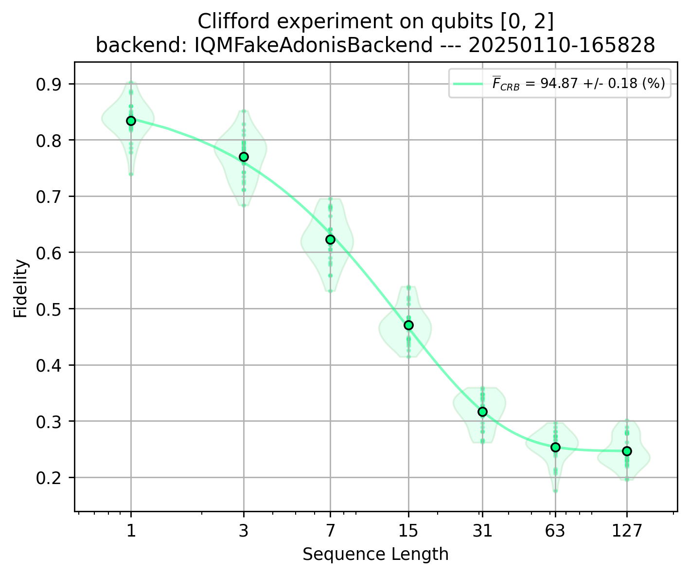
Interleaved Randomized Benchmarking#
from iqm.benchmarks.randomized_benchmarking.interleaved_rb.interleaved_rb import *
import numpy as np
EXAMPLE_IRB_1Q = InterleavedRBConfiguration(
qubits_array=[[0],[1],[2],[3],[4]],
sequence_lengths=[2**(m+1)-1 for m in range(8)],
num_circuit_samples=25,
shots=2**9,
calset_id=None,
parallel_execution=False,
interleaved_gate = "RGate",
interleaved_gate_params = [np.pi, 0],
simultaneous_fit = ["amplitude", "offset"],
)
benchmark_irb_1Q = InterleavedRandomizedBenchmarking(backend, EXAMPLE_IRB_1Q)
run_irb_1Q = benchmark_irb_1Q.run()
2025-01-10 16:59:21,734 - iqm.benchmarks.logging_config - INFO - Clifford dictionaries imported successfully !
2025-01-10 16:59:21,958 - iqm.benchmarks.logging_config - INFO - Wxecuting sequential Clifford and Interleaved RB circuits on qubits [0]. Will generate and submit all 25 Clifford RB circuits for each depth [1, 3, 7, 15, 31, 63, 127, 255]
2025-01-10 16:59:21,959 - iqm.benchmarks.logging_config - INFO - Now at sequence length 1
2025-01-10 16:59:22,000 - iqm.benchmarks.logging_config - INFO - Now at sequence length 3
2025-01-10 16:59:22,041 - iqm.benchmarks.logging_config - INFO - Now at sequence length 7
2025-01-10 16:59:22,122 - iqm.benchmarks.logging_config - INFO - Now at sequence length 15
2025-01-10 16:59:26,925 - iqm.benchmarks.logging_config - INFO - Now at sequence length 31
2025-01-10 16:59:27,229 - iqm.benchmarks.logging_config - INFO - Now at sequence length 63
2025-01-10 16:59:27,841 - iqm.benchmarks.logging_config - INFO - Now at sequence length 127
2025-01-10 16:59:29,054 - iqm.benchmarks.logging_config - INFO - Now at sequence length 255
2025-01-10 16:59:37,672 - iqm.benchmarks.logging_config - INFO - Now at sequence length 1
2025-01-10 16:59:37,694 - iqm.benchmarks.logging_config - INFO - Now at sequence length 3
2025-01-10 16:59:37,753 - iqm.benchmarks.logging_config - INFO - Now at sequence length 7
2025-01-10 16:59:37,849 - iqm.benchmarks.logging_config - INFO - Now at sequence length 15
2025-01-10 16:59:38,039 - iqm.benchmarks.logging_config - INFO - Now at sequence length 31
2025-01-10 16:59:38,402 - iqm.benchmarks.logging_config - INFO - Now at sequence length 63
2025-01-10 16:59:39,108 - iqm.benchmarks.logging_config - INFO - Now at sequence length 127
2025-01-10 16:59:40,570 - iqm.benchmarks.logging_config - INFO - Now at sequence length 255
2025-01-10 16:59:50,267 - iqm.benchmarks.logging_config - INFO - Submitting batch with 25 circuits corresponding to qubits [0]
2025-01-10 16:59:50,277 - iqm.benchmarks.logging_config - INFO - Submitting batch with 25 circuits corresponding to qubits [0]
2025-01-10 16:59:50,331 - iqm.benchmarks.logging_config - INFO - Submitting batch with 25 circuits corresponding to qubits [0]
2025-01-10 16:59:50,399 - iqm.benchmarks.logging_config - INFO - Submitting batch with 25 circuits corresponding to qubits [0]
2025-01-10 16:59:50,495 - iqm.benchmarks.logging_config - INFO - Submitting batch with 25 circuits corresponding to qubits [0]
2025-01-10 16:59:50,650 - iqm.benchmarks.logging_config - INFO - Submitting batch with 25 circuits corresponding to qubits [0]
2025-01-10 16:59:50,929 - iqm.benchmarks.logging_config - INFO - Submitting batch with 25 circuits corresponding to qubits [0]
2025-01-10 16:59:51,439 - iqm.benchmarks.logging_config - INFO - Submitting batch with 25 circuits corresponding to qubits [0]
2025-01-10 16:59:52,352 - iqm.benchmarks.logging_config - INFO - Submitting batch with 25 circuits corresponding to qubits [0]
2025-01-10 16:59:52,432 - iqm.benchmarks.logging_config - INFO - Submitting batch with 25 circuits corresponding to qubits [0]
2025-01-10 16:59:52,475 - iqm.benchmarks.logging_config - INFO - Submitting batch with 25 circuits corresponding to qubits [0]
2025-01-10 16:59:52,666 - iqm.benchmarks.logging_config - INFO - Submitting batch with 25 circuits corresponding to qubits [0]
2025-01-10 16:59:52,812 - iqm.benchmarks.logging_config - INFO - Submitting batch with 25 circuits corresponding to qubits [0]
2025-01-10 17:00:00,881 - iqm.benchmarks.logging_config - INFO - Submitting batch with 25 circuits corresponding to qubits [0]
2025-01-10 17:00:01,198 - iqm.benchmarks.logging_config - INFO - Submitting batch with 25 circuits corresponding to qubits [0]
2025-01-10 17:00:01,761 - iqm.benchmarks.logging_config - INFO - Submitting batch with 25 circuits corresponding to qubits [0]
2025-01-10 17:00:02,804 - iqm.benchmarks.logging_config - INFO - All jobs for qubits [0] and sequence lengths [1, 3, 7, 15, 31, 63, 127, 255] submitted successfully!
2025-01-10 17:00:02,894 - iqm.benchmarks.logging_config - INFO - Wxecuting sequential Clifford and Interleaved RB circuits on qubits [1]. Will generate and submit all 25 Clifford RB circuits for each depth [1, 3, 7, 15, 31, 63, 127, 255]
2025-01-10 17:00:02,907 - iqm.benchmarks.logging_config - INFO - Now at sequence length 1
2025-01-10 17:00:03,020 - iqm.benchmarks.logging_config - INFO - Now at sequence length 3
2025-01-10 17:00:03,188 - iqm.benchmarks.logging_config - INFO - Now at sequence length 7
2025-01-10 17:00:03,270 - iqm.benchmarks.logging_config - INFO - Now at sequence length 15
2025-01-10 17:00:03,426 - iqm.benchmarks.logging_config - INFO - Now at sequence length 31
2025-01-10 17:00:03,718 - iqm.benchmarks.logging_config - INFO - Now at sequence length 63
2025-01-10 17:00:04,307 - iqm.benchmarks.logging_config - INFO - Now at sequence length 127
2025-01-10 17:00:05,497 - iqm.benchmarks.logging_config - INFO - Now at sequence length 255
2025-01-10 17:00:16,836 - iqm.benchmarks.logging_config - INFO - Now at sequence length 1
2025-01-10 17:00:16,860 - iqm.benchmarks.logging_config - INFO - Now at sequence length 3
2025-01-10 17:00:16,904 - iqm.benchmarks.logging_config - INFO - Now at sequence length 7
2025-01-10 17:00:17,003 - iqm.benchmarks.logging_config - INFO - Now at sequence length 15
2025-01-10 17:00:17,196 - iqm.benchmarks.logging_config - INFO - Now at sequence length 31
2025-01-10 17:00:17,557 - iqm.benchmarks.logging_config - INFO - Now at sequence length 63
2025-01-10 17:00:18,285 - iqm.benchmarks.logging_config - INFO - Now at sequence length 127
2025-01-10 17:00:19,719 - iqm.benchmarks.logging_config - INFO - Now at sequence length 255
2025-01-10 17:00:22,643 - iqm.benchmarks.logging_config - INFO - Submitting batch with 25 circuits corresponding to qubits [1]
2025-01-10 17:00:22,653 - iqm.benchmarks.logging_config - INFO - Submitting batch with 25 circuits corresponding to qubits [1]
2025-01-10 17:00:33,149 - iqm.benchmarks.logging_config - INFO - Submitting batch with 25 circuits corresponding to qubits [1]
2025-01-10 17:00:33,229 - iqm.benchmarks.logging_config - INFO - Submitting batch with 25 circuits corresponding to qubits [1]
2025-01-10 17:00:33,328 - iqm.benchmarks.logging_config - INFO - Submitting batch with 25 circuits corresponding to qubits [1]
2025-01-10 17:00:33,483 - iqm.benchmarks.logging_config - INFO - Submitting batch with 25 circuits corresponding to qubits [1]
2025-01-10 17:00:33,754 - iqm.benchmarks.logging_config - INFO - Submitting batch with 25 circuits corresponding to qubits [1]
2025-01-10 17:00:34,231 - iqm.benchmarks.logging_config - INFO - Submitting batch with 25 circuits corresponding to qubits [1]
2025-01-10 17:00:35,163 - iqm.benchmarks.logging_config - INFO - Submitting batch with 25 circuits corresponding to qubits [1]
2025-01-10 17:00:35,261 - iqm.benchmarks.logging_config - INFO - Submitting batch with 25 circuits corresponding to qubits [1]
2025-01-10 17:00:35,446 - iqm.benchmarks.logging_config - INFO - Submitting batch with 25 circuits corresponding to qubits [1]
2025-01-10 17:00:35,524 - iqm.benchmarks.logging_config - INFO - Submitting batch with 25 circuits corresponding to qubits [1]
2025-01-10 17:00:35,635 - iqm.benchmarks.logging_config - INFO - Submitting batch with 25 circuits corresponding to qubits [1]
2025-01-10 17:00:35,808 - iqm.benchmarks.logging_config - INFO - Submitting batch with 25 circuits corresponding to qubits [1]
2025-01-10 17:00:36,112 - iqm.benchmarks.logging_config - INFO - Submitting batch with 25 circuits corresponding to qubits [1]
2025-01-10 17:00:36,693 - iqm.benchmarks.logging_config - INFO - Submitting batch with 25 circuits corresponding to qubits [1]
2025-01-10 17:00:37,734 - iqm.benchmarks.logging_config - INFO - All jobs for qubits [1] and sequence lengths [1, 3, 7, 15, 31, 63, 127, 255] submitted successfully!
2025-01-10 17:00:37,811 - iqm.benchmarks.logging_config - INFO - Wxecuting sequential Clifford and Interleaved RB circuits on qubits [2]. Will generate and submit all 25 Clifford RB circuits for each depth [1, 3, 7, 15, 31, 63, 127, 255]
2025-01-10 17:00:37,826 - iqm.benchmarks.logging_config - INFO - Now at sequence length 1
2025-01-10 17:00:37,920 - iqm.benchmarks.logging_config - INFO - Now at sequence length 3
2025-01-10 17:00:38,091 - iqm.benchmarks.logging_config - INFO - Now at sequence length 7
2025-01-10 17:00:38,173 - iqm.benchmarks.logging_config - INFO - Now at sequence length 15
2025-01-10 17:00:38,338 - iqm.benchmarks.logging_config - INFO - Now at sequence length 31
2025-01-10 17:00:38,640 - iqm.benchmarks.logging_config - INFO - Now at sequence length 63
2025-01-10 17:00:39,230 - iqm.benchmarks.logging_config - INFO - Now at sequence length 127
2025-01-10 17:00:40,545 - iqm.benchmarks.logging_config - INFO - Now at sequence length 255
2025-01-10 17:00:54,939 - iqm.benchmarks.logging_config - INFO - Now at sequence length 1
2025-01-10 17:00:54,961 - iqm.benchmarks.logging_config - INFO - Now at sequence length 3
2025-01-10 17:00:55,011 - iqm.benchmarks.logging_config - INFO - Now at sequence length 7
2025-01-10 17:00:55,105 - iqm.benchmarks.logging_config - INFO - Now at sequence length 15
2025-01-10 17:00:55,299 - iqm.benchmarks.logging_config - INFO - Now at sequence length 31
2025-01-10 17:00:55,667 - iqm.benchmarks.logging_config - INFO - Now at sequence length 63
2025-01-10 17:00:56,384 - iqm.benchmarks.logging_config - INFO - Now at sequence length 127
2025-01-10 17:00:57,824 - iqm.benchmarks.logging_config - INFO - Now at sequence length 255
2025-01-10 17:01:00,653 - iqm.benchmarks.logging_config - INFO - Submitting batch with 25 circuits corresponding to qubits [2]
2025-01-10 17:01:00,662 - iqm.benchmarks.logging_config - INFO - Submitting batch with 25 circuits corresponding to qubits [2]
2025-01-10 17:01:00,717 - iqm.benchmarks.logging_config - INFO - Submitting batch with 25 circuits corresponding to qubits [2]
2025-01-10 17:01:00,790 - iqm.benchmarks.logging_config - INFO - Submitting batch with 25 circuits corresponding to qubits [2]
2025-01-10 17:01:00,889 - iqm.benchmarks.logging_config - INFO - Submitting batch with 25 circuits corresponding to qubits [2]
2025-01-10 17:01:01,041 - iqm.benchmarks.logging_config - INFO - Submitting batch with 25 circuits corresponding to qubits [2]
2025-01-10 17:01:01,301 - iqm.benchmarks.logging_config - INFO - Submitting batch with 25 circuits corresponding to qubits [2]
2025-01-10 17:01:01,785 - iqm.benchmarks.logging_config - INFO - Submitting batch with 25 circuits corresponding to qubits [2]
2025-01-10 17:01:02,799 - iqm.benchmarks.logging_config - INFO - Submitting batch with 25 circuits corresponding to qubits [2]
2025-01-10 17:01:02,931 - iqm.benchmarks.logging_config - INFO - Submitting batch with 25 circuits corresponding to qubits [2]
2025-01-10 17:01:03,083 - iqm.benchmarks.logging_config - INFO - Submitting batch with 25 circuits corresponding to qubits [2]
2025-01-10 17:01:03,152 - iqm.benchmarks.logging_config - INFO - Submitting batch with 25 circuits corresponding to qubits [2]
2025-01-10 17:01:03,254 - iqm.benchmarks.logging_config - INFO - Submitting batch with 25 circuits corresponding to qubits [2]
2025-01-10 17:01:03,420 - iqm.benchmarks.logging_config - INFO - Submitting batch with 25 circuits corresponding to qubits [2]
2025-01-10 17:01:03,758 - iqm.benchmarks.logging_config - INFO - Submitting batch with 25 circuits corresponding to qubits [2]
2025-01-10 17:01:18,634 - iqm.benchmarks.logging_config - INFO - Submitting batch with 25 circuits corresponding to qubits [2]
2025-01-10 17:01:19,655 - iqm.benchmarks.logging_config - INFO - All jobs for qubits [2] and sequence lengths [1, 3, 7, 15, 31, 63, 127, 255] submitted successfully!
2025-01-10 17:01:19,693 - iqm.benchmarks.logging_config - INFO - Wxecuting sequential Clifford and Interleaved RB circuits on qubits [3]. Will generate and submit all 25 Clifford RB circuits for each depth [1, 3, 7, 15, 31, 63, 127, 255]
2025-01-10 17:01:19,756 - iqm.benchmarks.logging_config - INFO - Now at sequence length 1
2025-01-10 17:01:19,947 - iqm.benchmarks.logging_config - INFO - Now at sequence length 3
2025-01-10 17:01:19,994 - iqm.benchmarks.logging_config - INFO - Now at sequence length 7
2025-01-10 17:01:20,083 - iqm.benchmarks.logging_config - INFO - Now at sequence length 15
2025-01-10 17:01:20,240 - iqm.benchmarks.logging_config - INFO - Now at sequence length 31
2025-01-10 17:01:20,548 - iqm.benchmarks.logging_config - INFO - Now at sequence length 63
2025-01-10 17:01:21,159 - iqm.benchmarks.logging_config - INFO - Now at sequence length 127
2025-01-10 17:01:22,364 - iqm.benchmarks.logging_config - INFO - Now at sequence length 255
2025-01-10 17:01:24,724 - iqm.benchmarks.logging_config - INFO - Now at sequence length 1
2025-01-10 17:01:24,746 - iqm.benchmarks.logging_config - INFO - Now at sequence length 3
2025-01-10 17:01:24,791 - iqm.benchmarks.logging_config - INFO - Now at sequence length 7
2025-01-10 17:01:24,884 - iqm.benchmarks.logging_config - INFO - Now at sequence length 15
2025-01-10 17:01:25,074 - iqm.benchmarks.logging_config - INFO - Now at sequence length 31
2025-01-10 17:01:25,429 - iqm.benchmarks.logging_config - INFO - Now at sequence length 63
2025-01-10 17:01:26,128 - iqm.benchmarks.logging_config - INFO - Now at sequence length 127
2025-01-10 17:01:27,561 - iqm.benchmarks.logging_config - INFO - Now at sequence length 255
2025-01-10 17:01:46,477 - iqm.benchmarks.logging_config - INFO - Submitting batch with 25 circuits corresponding to qubits [3]
2025-01-10 17:01:46,488 - iqm.benchmarks.logging_config - INFO - Submitting batch with 25 circuits corresponding to qubits [3]
2025-01-10 17:01:46,550 - iqm.benchmarks.logging_config - INFO - Submitting batch with 25 circuits corresponding to qubits [3]
2025-01-10 17:01:46,623 - iqm.benchmarks.logging_config - INFO - Submitting batch with 25 circuits corresponding to qubits [3]
2025-01-10 17:01:46,726 - iqm.benchmarks.logging_config - INFO - Submitting batch with 25 circuits corresponding to qubits [3]
2025-01-10 17:01:46,880 - iqm.benchmarks.logging_config - INFO - Submitting batch with 25 circuits corresponding to qubits [3]
2025-01-10 17:01:47,152 - iqm.benchmarks.logging_config - INFO - Submitting batch with 25 circuits corresponding to qubits [3]
2025-01-10 17:01:47,624 - iqm.benchmarks.logging_config - INFO - Submitting batch with 25 circuits corresponding to qubits [3]
2025-01-10 17:01:48,508 - iqm.benchmarks.logging_config - INFO - Submitting batch with 25 circuits corresponding to qubits [3]
2025-01-10 17:01:48,606 - iqm.benchmarks.logging_config - INFO - Submitting batch with 25 circuits corresponding to qubits [3]
2025-01-10 17:01:48,766 - iqm.benchmarks.logging_config - INFO - Submitting batch with 25 circuits corresponding to qubits [3]
2025-01-10 17:01:48,838 - iqm.benchmarks.logging_config - INFO - Submitting batch with 25 circuits corresponding to qubits [3]
2025-01-10 17:01:48,944 - iqm.benchmarks.logging_config - INFO - Submitting batch with 25 circuits corresponding to qubits [3]
2025-01-10 17:01:49,122 - iqm.benchmarks.logging_config - INFO - Submitting batch with 25 circuits corresponding to qubits [3]
2025-01-10 17:01:49,427 - iqm.benchmarks.logging_config - INFO - Submitting batch with 25 circuits corresponding to qubits [3]
2025-01-10 17:01:49,963 - iqm.benchmarks.logging_config - INFO - Submitting batch with 25 circuits corresponding to qubits [3]
2025-01-10 17:01:50,970 - iqm.benchmarks.logging_config - INFO - All jobs for qubits [3] and sequence lengths [1, 3, 7, 15, 31, 63, 127, 255] submitted successfully!
2025-01-10 17:01:51,008 - iqm.benchmarks.logging_config - INFO - Wxecuting sequential Clifford and Interleaved RB circuits on qubits [4]. Will generate and submit all 25 Clifford RB circuits for each depth [1, 3, 7, 15, 31, 63, 127, 255]
2025-01-10 17:01:51,071 - iqm.benchmarks.logging_config - INFO - Now at sequence length 1
2025-01-10 17:01:51,261 - iqm.benchmarks.logging_config - INFO - Now at sequence length 3
2025-01-10 17:01:51,305 - iqm.benchmarks.logging_config - INFO - Now at sequence length 7
2025-01-10 17:01:51,391 - iqm.benchmarks.logging_config - INFO - Now at sequence length 15
2025-01-10 17:01:51,555 - iqm.benchmarks.logging_config - INFO - Now at sequence length 31
2025-01-10 17:01:51,860 - iqm.benchmarks.logging_config - INFO - Now at sequence length 63
2025-01-10 17:01:52,444 - iqm.benchmarks.logging_config - INFO - Now at sequence length 127
2025-01-10 17:01:53,649 - iqm.benchmarks.logging_config - INFO - Now at sequence length 255
2025-01-10 17:01:56,040 - iqm.benchmarks.logging_config - INFO - Now at sequence length 1
2025-01-10 17:01:56,063 - iqm.benchmarks.logging_config - INFO - Now at sequence length 3
2025-01-10 17:01:56,119 - iqm.benchmarks.logging_config - INFO - Now at sequence length 7
2025-01-10 17:01:56,212 - iqm.benchmarks.logging_config - INFO - Now at sequence length 15
2025-01-10 17:01:56,397 - iqm.benchmarks.logging_config - INFO - Now at sequence length 31
2025-01-10 17:01:56,758 - iqm.benchmarks.logging_config - INFO - Now at sequence length 63
2025-01-10 17:01:57,467 - iqm.benchmarks.logging_config - INFO - Now at sequence length 127
2025-01-10 17:01:58,899 - iqm.benchmarks.logging_config - INFO - Now at sequence length 255
2025-01-10 17:02:21,678 - iqm.benchmarks.logging_config - INFO - Submitting batch with 25 circuits corresponding to qubits [4]
2025-01-10 17:02:21,688 - iqm.benchmarks.logging_config - INFO - Submitting batch with 25 circuits corresponding to qubits [4]
2025-01-10 17:02:21,741 - iqm.benchmarks.logging_config - INFO - Submitting batch with 25 circuits corresponding to qubits [4]
2025-01-10 17:02:21,810 - iqm.benchmarks.logging_config - INFO - Submitting batch with 25 circuits corresponding to qubits [4]
2025-01-10 17:02:21,908 - iqm.benchmarks.logging_config - INFO - Submitting batch with 25 circuits corresponding to qubits [4]
2025-01-10 17:02:22,063 - iqm.benchmarks.logging_config - INFO - Submitting batch with 25 circuits corresponding to qubits [4]
2025-01-10 17:02:22,331 - iqm.benchmarks.logging_config - INFO - Submitting batch with 25 circuits corresponding to qubits [4]
2025-01-10 17:02:22,805 - iqm.benchmarks.logging_config - INFO - Submitting batch with 25 circuits corresponding to qubits [4]
2025-01-10 17:02:23,682 - iqm.benchmarks.logging_config - INFO - Submitting batch with 25 circuits corresponding to qubits [4]
2025-01-10 17:02:23,730 - iqm.benchmarks.logging_config - INFO - Submitting batch with 25 circuits corresponding to qubits [4]
2025-01-10 17:02:23,816 - iqm.benchmarks.logging_config - INFO - Submitting batch with 25 circuits corresponding to qubits [4]
2025-01-10 17:02:23,993 - iqm.benchmarks.logging_config - INFO - Submitting batch with 25 circuits corresponding to qubits [4]
2025-01-10 17:02:24,094 - iqm.benchmarks.logging_config - INFO - Submitting batch with 25 circuits corresponding to qubits [4]
2025-01-10 17:02:24,259 - iqm.benchmarks.logging_config - INFO - Submitting batch with 25 circuits corresponding to qubits [4]
2025-01-10 17:02:24,547 - iqm.benchmarks.logging_config - INFO - Submitting batch with 25 circuits corresponding to qubits [4]
2025-01-10 17:02:25,066 - iqm.benchmarks.logging_config - INFO - Submitting batch with 25 circuits corresponding to qubits [4]
2025-01-10 17:02:26,063 - iqm.benchmarks.logging_config - INFO - All jobs for qubits [4] and sequence lengths [1, 3, 7, 15, 31, 63, 127, 255] submitted successfully!
2025-01-10 17:02:26,138 - iqm.benchmarks.logging_config - INFO - Retrieving all counts for clifford_qubits_[0]_depth_1
2025-01-10 17:02:26,176 - iqm.benchmarks.logging_config - INFO - Adding counts of qubits [0] and depth 1 run to the dataset
2025-01-10 17:02:26,354 - iqm.benchmarks.logging_config - INFO - Retrieving all counts for clifford_qubits_[0]_depth_3
2025-01-10 17:02:26,355 - iqm.benchmarks.logging_config - INFO - Adding counts of qubits [0] and depth 3 run to the dataset
2025-01-10 17:02:26,390 - iqm.benchmarks.logging_config - INFO - Retrieving all counts for clifford_qubits_[0]_depth_7
2025-01-10 17:02:26,390 - iqm.benchmarks.logging_config - INFO - Adding counts of qubits [0] and depth 7 run to the dataset
2025-01-10 17:02:26,458 - iqm.benchmarks.logging_config - INFO - Retrieving all counts for clifford_qubits_[0]_depth_15
2025-01-10 17:02:26,459 - iqm.benchmarks.logging_config - INFO - Adding counts of qubits [0] and depth 15 run to the dataset
2025-01-10 17:02:26,500 - iqm.benchmarks.logging_config - INFO - Retrieving all counts for clifford_qubits_[0]_depth_31
2025-01-10 17:02:26,500 - iqm.benchmarks.logging_config - INFO - Adding counts of qubits [0] and depth 31 run to the dataset
2025-01-10 17:02:26,544 - iqm.benchmarks.logging_config - INFO - Retrieving all counts for clifford_qubits_[0]_depth_63
2025-01-10 17:02:26,544 - iqm.benchmarks.logging_config - INFO - Adding counts of qubits [0] and depth 63 run to the dataset
2025-01-10 17:02:26,591 - iqm.benchmarks.logging_config - INFO - Retrieving all counts for clifford_qubits_[0]_depth_127
2025-01-10 17:02:26,592 - iqm.benchmarks.logging_config - INFO - Adding counts of qubits [0] and depth 127 run to the dataset
2025-01-10 17:02:26,644 - iqm.benchmarks.logging_config - INFO - Retrieving all counts for clifford_qubits_[0]_depth_255
2025-01-10 17:02:26,644 - iqm.benchmarks.logging_config - INFO - Adding counts of qubits [0] and depth 255 run to the dataset
2025-01-10 17:02:26,703 - iqm.benchmarks.logging_config - INFO - Retrieving all counts for clifford_qubits_[1]_depth_1
2025-01-10 17:02:26,703 - iqm.benchmarks.logging_config - INFO - Adding counts of qubits [1] and depth 1 run to the dataset
2025-01-10 17:02:26,767 - iqm.benchmarks.logging_config - INFO - Retrieving all counts for clifford_qubits_[1]_depth_3
2025-01-10 17:02:26,768 - iqm.benchmarks.logging_config - INFO - Adding counts of qubits [1] and depth 3 run to the dataset
2025-01-10 17:02:26,839 - iqm.benchmarks.logging_config - INFO - Retrieving all counts for clifford_qubits_[1]_depth_7
2025-01-10 17:02:26,839 - iqm.benchmarks.logging_config - INFO - Adding counts of qubits [1] and depth 7 run to the dataset
2025-01-10 17:02:26,918 - iqm.benchmarks.logging_config - INFO - Retrieving all counts for clifford_qubits_[1]_depth_15
2025-01-10 17:02:26,919 - iqm.benchmarks.logging_config - INFO - Adding counts of qubits [1] and depth 15 run to the dataset
2025-01-10 17:02:27,007 - iqm.benchmarks.logging_config - INFO - Retrieving all counts for clifford_qubits_[1]_depth_31
2025-01-10 17:02:27,007 - iqm.benchmarks.logging_config - INFO - Adding counts of qubits [1] and depth 31 run to the dataset
2025-01-10 17:02:27,104 - iqm.benchmarks.logging_config - INFO - Retrieving all counts for clifford_qubits_[1]_depth_63
2025-01-10 17:02:27,104 - iqm.benchmarks.logging_config - INFO - Adding counts of qubits [1] and depth 63 run to the dataset
2025-01-10 17:02:27,211 - iqm.benchmarks.logging_config - INFO - Retrieving all counts for clifford_qubits_[1]_depth_127
2025-01-10 17:02:27,211 - iqm.benchmarks.logging_config - INFO - Adding counts of qubits [1] and depth 127 run to the dataset
2025-01-10 17:02:27,329 - iqm.benchmarks.logging_config - INFO - Retrieving all counts for clifford_qubits_[1]_depth_255
2025-01-10 17:02:27,329 - iqm.benchmarks.logging_config - INFO - Adding counts of qubits [1] and depth 255 run to the dataset
2025-01-10 17:02:27,459 - iqm.benchmarks.logging_config - INFO - Retrieving all counts for clifford_qubits_[2]_depth_1
2025-01-10 17:02:27,459 - iqm.benchmarks.logging_config - INFO - Adding counts of qubits [2] and depth 1 run to the dataset
2025-01-10 17:02:27,600 - iqm.benchmarks.logging_config - INFO - Retrieving all counts for clifford_qubits_[2]_depth_3
2025-01-10 17:02:27,600 - iqm.benchmarks.logging_config - INFO - Adding counts of qubits [2] and depth 3 run to the dataset
2025-01-10 17:02:27,753 - iqm.benchmarks.logging_config - INFO - Retrieving all counts for clifford_qubits_[2]_depth_7
2025-01-10 17:02:27,753 - iqm.benchmarks.logging_config - INFO - Adding counts of qubits [2] and depth 7 run to the dataset
2025-01-10 17:02:27,919 - iqm.benchmarks.logging_config - INFO - Retrieving all counts for clifford_qubits_[2]_depth_15
2025-01-10 17:02:27,919 - iqm.benchmarks.logging_config - INFO - Adding counts of qubits [2] and depth 15 run to the dataset
2025-01-10 17:02:28,098 - iqm.benchmarks.logging_config - INFO - Retrieving all counts for clifford_qubits_[2]_depth_31
2025-01-10 17:02:28,099 - iqm.benchmarks.logging_config - INFO - Adding counts of qubits [2] and depth 31 run to the dataset
2025-01-10 17:02:28,292 - iqm.benchmarks.logging_config - INFO - Retrieving all counts for clifford_qubits_[2]_depth_63
2025-01-10 17:02:28,292 - iqm.benchmarks.logging_config - INFO - Adding counts of qubits [2] and depth 63 run to the dataset
2025-01-10 17:02:28,502 - iqm.benchmarks.logging_config - INFO - Retrieving all counts for clifford_qubits_[2]_depth_127
2025-01-10 17:02:28,502 - iqm.benchmarks.logging_config - INFO - Adding counts of qubits [2] and depth 127 run to the dataset
2025-01-10 17:02:28,728 - iqm.benchmarks.logging_config - INFO - Retrieving all counts for clifford_qubits_[2]_depth_255
2025-01-10 17:02:28,728 - iqm.benchmarks.logging_config - INFO - Adding counts of qubits [2] and depth 255 run to the dataset
2025-01-10 17:02:28,971 - iqm.benchmarks.logging_config - INFO - Retrieving all counts for clifford_qubits_[3]_depth_1
2025-01-10 17:02:28,972 - iqm.benchmarks.logging_config - INFO - Adding counts of qubits [3] and depth 1 run to the dataset
2025-01-10 17:02:29,231 - iqm.benchmarks.logging_config - INFO - Retrieving all counts for clifford_qubits_[3]_depth_3
2025-01-10 17:02:29,232 - iqm.benchmarks.logging_config - INFO - Adding counts of qubits [3] and depth 3 run to the dataset
2025-01-10 17:02:29,509 - iqm.benchmarks.logging_config - INFO - Retrieving all counts for clifford_qubits_[3]_depth_7
2025-01-10 17:02:29,510 - iqm.benchmarks.logging_config - INFO - Adding counts of qubits [3] and depth 7 run to the dataset
2025-01-10 17:02:29,829 - iqm.benchmarks.logging_config - INFO - Retrieving all counts for clifford_qubits_[3]_depth_15
2025-01-10 17:02:29,829 - iqm.benchmarks.logging_config - INFO - Adding counts of qubits [3] and depth 15 run to the dataset
2025-01-10 17:02:30,151 - iqm.benchmarks.logging_config - INFO - Retrieving all counts for clifford_qubits_[3]_depth_31
2025-01-10 17:02:30,151 - iqm.benchmarks.logging_config - INFO - Adding counts of qubits [3] and depth 31 run to the dataset
2025-01-10 17:02:30,497 - iqm.benchmarks.logging_config - INFO - Retrieving all counts for clifford_qubits_[3]_depth_63
2025-01-10 17:02:30,498 - iqm.benchmarks.logging_config - INFO - Adding counts of qubits [3] and depth 63 run to the dataset
2025-01-10 17:02:30,862 - iqm.benchmarks.logging_config - INFO - Retrieving all counts for clifford_qubits_[3]_depth_127
2025-01-10 17:02:30,862 - iqm.benchmarks.logging_config - INFO - Adding counts of qubits [3] and depth 127 run to the dataset
2025-01-10 17:02:31,248 - iqm.benchmarks.logging_config - INFO - Retrieving all counts for clifford_qubits_[3]_depth_255
2025-01-10 17:02:31,249 - iqm.benchmarks.logging_config - INFO - Adding counts of qubits [3] and depth 255 run to the dataset
2025-01-10 17:02:31,654 - iqm.benchmarks.logging_config - INFO - Retrieving all counts for clifford_qubits_[4]_depth_1
2025-01-10 17:02:31,655 - iqm.benchmarks.logging_config - INFO - Adding counts of qubits [4] and depth 1 run to the dataset
2025-01-10 17:02:32,142 - iqm.benchmarks.logging_config - INFO - Retrieving all counts for clifford_qubits_[4]_depth_3
2025-01-10 17:02:32,143 - iqm.benchmarks.logging_config - INFO - Adding counts of qubits [4] and depth 3 run to the dataset
2025-01-10 17:02:32,600 - iqm.benchmarks.logging_config - INFO - Retrieving all counts for clifford_qubits_[4]_depth_7
2025-01-10 17:02:32,600 - iqm.benchmarks.logging_config - INFO - Adding counts of qubits [4] and depth 7 run to the dataset
2025-01-10 17:02:33,085 - iqm.benchmarks.logging_config - INFO - Retrieving all counts for clifford_qubits_[4]_depth_15
2025-01-10 17:02:33,085 - iqm.benchmarks.logging_config - INFO - Adding counts of qubits [4] and depth 15 run to the dataset
2025-01-10 17:02:33,626 - iqm.benchmarks.logging_config - INFO - Retrieving all counts for clifford_qubits_[4]_depth_31
2025-01-10 17:02:33,626 - iqm.benchmarks.logging_config - INFO - Adding counts of qubits [4] and depth 31 run to the dataset
2025-01-10 17:02:34,180 - iqm.benchmarks.logging_config - INFO - Retrieving all counts for clifford_qubits_[4]_depth_63
2025-01-10 17:02:34,180 - iqm.benchmarks.logging_config - INFO - Adding counts of qubits [4] and depth 63 run to the dataset
2025-01-10 17:02:34,732 - iqm.benchmarks.logging_config - INFO - Retrieving all counts for clifford_qubits_[4]_depth_127
2025-01-10 17:02:34,733 - iqm.benchmarks.logging_config - INFO - Adding counts of qubits [4] and depth 127 run to the dataset
2025-01-10 17:02:35,315 - iqm.benchmarks.logging_config - INFO - Retrieving all counts for clifford_qubits_[4]_depth_255
2025-01-10 17:02:35,315 - iqm.benchmarks.logging_config - INFO - Adding counts of qubits [4] and depth 255 run to the dataset
2025-01-10 17:02:35,923 - iqm.benchmarks.logging_config - INFO - Retrieving all counts for interleaved_qubits_[0]_depth_1
2025-01-10 17:02:35,924 - iqm.benchmarks.logging_config - INFO - Adding counts of qubits [0] and depth 1 run to the dataset
2025-01-10 17:02:36,560 - iqm.benchmarks.logging_config - INFO - Retrieving all counts for interleaved_qubits_[0]_depth_3
2025-01-10 17:02:36,560 - iqm.benchmarks.logging_config - INFO - Adding counts of qubits [0] and depth 3 run to the dataset
2025-01-10 17:02:37,237 - iqm.benchmarks.logging_config - INFO - Retrieving all counts for interleaved_qubits_[0]_depth_7
2025-01-10 17:02:37,237 - iqm.benchmarks.logging_config - INFO - Adding counts of qubits [0] and depth 7 run to the dataset
2025-01-10 17:02:37,939 - iqm.benchmarks.logging_config - INFO - Retrieving all counts for interleaved_qubits_[0]_depth_15
2025-01-10 17:02:37,940 - iqm.benchmarks.logging_config - INFO - Adding counts of qubits [0] and depth 15 run to the dataset
2025-01-10 17:02:38,678 - iqm.benchmarks.logging_config - INFO - Retrieving all counts for interleaved_qubits_[0]_depth_31
2025-01-10 17:02:38,678 - iqm.benchmarks.logging_config - INFO - Adding counts of qubits [0] and depth 31 run to the dataset
2025-01-10 17:02:39,447 - iqm.benchmarks.logging_config - INFO - Retrieving all counts for interleaved_qubits_[0]_depth_63
2025-01-10 17:02:39,447 - iqm.benchmarks.logging_config - INFO - Adding counts of qubits [0] and depth 63 run to the dataset
2025-01-10 17:02:40,249 - iqm.benchmarks.logging_config - INFO - Retrieving all counts for interleaved_qubits_[0]_depth_127
2025-01-10 17:02:40,249 - iqm.benchmarks.logging_config - INFO - Adding counts of qubits [0] and depth 127 run to the dataset
2025-01-10 17:02:41,075 - iqm.benchmarks.logging_config - INFO - Retrieving all counts for interleaved_qubits_[0]_depth_255
2025-01-10 17:02:41,076 - iqm.benchmarks.logging_config - INFO - Adding counts of qubits [0] and depth 255 run to the dataset
2025-01-10 17:02:41,947 - iqm.benchmarks.logging_config - INFO - Retrieving all counts for interleaved_qubits_[1]_depth_1
2025-01-10 17:02:41,947 - iqm.benchmarks.logging_config - INFO - Adding counts of qubits [1] and depth 1 run to the dataset
2025-01-10 17:02:42,845 - iqm.benchmarks.logging_config - INFO - Retrieving all counts for interleaved_qubits_[1]_depth_3
2025-01-10 17:02:42,846 - iqm.benchmarks.logging_config - INFO - Adding counts of qubits [1] and depth 3 run to the dataset
2025-01-10 17:02:43,783 - iqm.benchmarks.logging_config - INFO - Retrieving all counts for interleaved_qubits_[1]_depth_7
2025-01-10 17:02:43,784 - iqm.benchmarks.logging_config - INFO - Adding counts of qubits [1] and depth 7 run to the dataset
2025-01-10 17:02:44,782 - iqm.benchmarks.logging_config - INFO - Retrieving all counts for interleaved_qubits_[1]_depth_15
2025-01-10 17:02:44,782 - iqm.benchmarks.logging_config - INFO - Adding counts of qubits [1] and depth 15 run to the dataset
2025-01-10 17:02:45,813 - iqm.benchmarks.logging_config - INFO - Retrieving all counts for interleaved_qubits_[1]_depth_31
2025-01-10 17:02:45,814 - iqm.benchmarks.logging_config - INFO - Adding counts of qubits [1] and depth 31 run to the dataset
2025-01-10 17:02:46,993 - iqm.benchmarks.logging_config - INFO - Retrieving all counts for interleaved_qubits_[1]_depth_63
2025-01-10 17:02:46,993 - iqm.benchmarks.logging_config - INFO - Adding counts of qubits [1] and depth 63 run to the dataset
2025-01-10 17:02:48,201 - iqm.benchmarks.logging_config - INFO - Retrieving all counts for interleaved_qubits_[1]_depth_127
2025-01-10 17:02:48,202 - iqm.benchmarks.logging_config - INFO - Adding counts of qubits [1] and depth 127 run to the dataset
2025-01-10 17:02:49,378 - iqm.benchmarks.logging_config - INFO - Retrieving all counts for interleaved_qubits_[1]_depth_255
2025-01-10 17:02:49,379 - iqm.benchmarks.logging_config - INFO - Adding counts of qubits [1] and depth 255 run to the dataset
2025-01-10 17:02:50,634 - iqm.benchmarks.logging_config - INFO - Retrieving all counts for interleaved_qubits_[2]_depth_1
2025-01-10 17:02:50,635 - iqm.benchmarks.logging_config - INFO - Adding counts of qubits [2] and depth 1 run to the dataset
2025-01-10 17:02:51,909 - iqm.benchmarks.logging_config - INFO - Retrieving all counts for interleaved_qubits_[2]_depth_3
2025-01-10 17:02:51,910 - iqm.benchmarks.logging_config - INFO - Adding counts of qubits [2] and depth 3 run to the dataset
2025-01-10 17:02:53,284 - iqm.benchmarks.logging_config - INFO - Retrieving all counts for interleaved_qubits_[2]_depth_7
2025-01-10 17:02:53,285 - iqm.benchmarks.logging_config - INFO - Adding counts of qubits [2] and depth 7 run to the dataset
2025-01-10 17:02:54,658 - iqm.benchmarks.logging_config - INFO - Retrieving all counts for interleaved_qubits_[2]_depth_15
2025-01-10 17:02:54,659 - iqm.benchmarks.logging_config - INFO - Adding counts of qubits [2] and depth 15 run to the dataset
2025-01-10 17:02:56,111 - iqm.benchmarks.logging_config - INFO - Retrieving all counts for interleaved_qubits_[2]_depth_31
2025-01-10 17:02:56,111 - iqm.benchmarks.logging_config - INFO - Adding counts of qubits [2] and depth 31 run to the dataset
2025-01-10 17:02:57,571 - iqm.benchmarks.logging_config - INFO - Retrieving all counts for interleaved_qubits_[2]_depth_63
2025-01-10 17:02:57,572 - iqm.benchmarks.logging_config - INFO - Adding counts of qubits [2] and depth 63 run to the dataset
2025-01-10 17:02:59,062 - iqm.benchmarks.logging_config - INFO - Retrieving all counts for interleaved_qubits_[2]_depth_127
2025-01-10 17:02:59,063 - iqm.benchmarks.logging_config - INFO - Adding counts of qubits [2] and depth 127 run to the dataset
2025-01-10 17:03:00,626 - iqm.benchmarks.logging_config - INFO - Retrieving all counts for interleaved_qubits_[2]_depth_255
2025-01-10 17:03:00,626 - iqm.benchmarks.logging_config - INFO - Adding counts of qubits [2] and depth 255 run to the dataset
2025-01-10 17:03:02,225 - iqm.benchmarks.logging_config - INFO - Retrieving all counts for interleaved_qubits_[3]_depth_1
2025-01-10 17:03:02,225 - iqm.benchmarks.logging_config - INFO - Adding counts of qubits [3] and depth 1 run to the dataset
2025-01-10 17:03:04,021 - iqm.benchmarks.logging_config - INFO - Retrieving all counts for interleaved_qubits_[3]_depth_3
2025-01-10 17:03:04,022 - iqm.benchmarks.logging_config - INFO - Adding counts of qubits [3] and depth 3 run to the dataset
2025-01-10 17:03:05,735 - iqm.benchmarks.logging_config - INFO - Retrieving all counts for interleaved_qubits_[3]_depth_7
2025-01-10 17:03:05,736 - iqm.benchmarks.logging_config - INFO - Adding counts of qubits [3] and depth 7 run to the dataset
2025-01-10 17:03:07,546 - iqm.benchmarks.logging_config - INFO - Retrieving all counts for interleaved_qubits_[3]_depth_15
2025-01-10 17:03:07,547 - iqm.benchmarks.logging_config - INFO - Adding counts of qubits [3] and depth 15 run to the dataset
2025-01-10 17:03:09,361 - iqm.benchmarks.logging_config - INFO - Retrieving all counts for interleaved_qubits_[3]_depth_31
2025-01-10 17:03:09,362 - iqm.benchmarks.logging_config - INFO - Adding counts of qubits [3] and depth 31 run to the dataset
2025-01-10 17:03:11,329 - iqm.benchmarks.logging_config - INFO - Retrieving all counts for interleaved_qubits_[3]_depth_63
2025-01-10 17:03:11,330 - iqm.benchmarks.logging_config - INFO - Adding counts of qubits [3] and depth 63 run to the dataset
2025-01-10 17:03:13,304 - iqm.benchmarks.logging_config - INFO - Retrieving all counts for interleaved_qubits_[3]_depth_127
2025-01-10 17:03:13,304 - iqm.benchmarks.logging_config - INFO - Adding counts of qubits [3] and depth 127 run to the dataset
2025-01-10 17:03:15,269 - iqm.benchmarks.logging_config - INFO - Retrieving all counts for interleaved_qubits_[3]_depth_255
2025-01-10 17:03:15,270 - iqm.benchmarks.logging_config - INFO - Adding counts of qubits [3] and depth 255 run to the dataset
2025-01-10 17:03:17,304 - iqm.benchmarks.logging_config - INFO - Retrieving all counts for interleaved_qubits_[4]_depth_1
2025-01-10 17:03:17,304 - iqm.benchmarks.logging_config - INFO - Adding counts of qubits [4] and depth 1 run to the dataset
2025-01-10 17:03:19,471 - iqm.benchmarks.logging_config - INFO - Retrieving all counts for interleaved_qubits_[4]_depth_3
2025-01-10 17:03:19,471 - iqm.benchmarks.logging_config - INFO - Adding counts of qubits [4] and depth 3 run to the dataset
2025-01-10 17:03:21,596 - iqm.benchmarks.logging_config - INFO - Retrieving all counts for interleaved_qubits_[4]_depth_7
2025-01-10 17:03:21,596 - iqm.benchmarks.logging_config - INFO - Adding counts of qubits [4] and depth 7 run to the dataset
2025-01-10 17:03:23,842 - iqm.benchmarks.logging_config - INFO - Retrieving all counts for interleaved_qubits_[4]_depth_15
2025-01-10 17:03:23,842 - iqm.benchmarks.logging_config - INFO - Adding counts of qubits [4] and depth 15 run to the dataset
2025-01-10 17:03:26,085 - iqm.benchmarks.logging_config - INFO - Retrieving all counts for interleaved_qubits_[4]_depth_31
2025-01-10 17:03:26,086 - iqm.benchmarks.logging_config - INFO - Adding counts of qubits [4] and depth 31 run to the dataset
2025-01-10 17:03:28,328 - iqm.benchmarks.logging_config - INFO - Retrieving all counts for interleaved_qubits_[4]_depth_63
2025-01-10 17:03:28,329 - iqm.benchmarks.logging_config - INFO - Adding counts of qubits [4] and depth 63 run to the dataset
2025-01-10 17:03:30,642 - iqm.benchmarks.logging_config - INFO - Retrieving all counts for interleaved_qubits_[4]_depth_127
2025-01-10 17:03:30,642 - iqm.benchmarks.logging_config - INFO - Adding counts of qubits [4] and depth 127 run to the dataset
2025-01-10 17:03:32,983 - iqm.benchmarks.logging_config - INFO - Retrieving all counts for interleaved_qubits_[4]_depth_255
2025-01-10 17:03:32,983 - iqm.benchmarks.logging_config - INFO - Adding counts of qubits [4] and depth 255 run to the dataset
2025-01-10 17:03:35,460 - iqm.benchmarks.logging_config - INFO - Interleaved RB experiment concluded !
result_irb_1Q = benchmark_irb_1Q.analyze()
2025-01-10 17:03:35,639 - iqm.benchmarks.logging_config - INFO - Post-processing sequential Interleaved RB for qubits [[0], [1], [2], [3], [4]]
2025-01-10 17:03:35,682 - iqm.benchmarks.logging_config - INFO - Now on Clifford RB with qubits [0] and depth 1
2025-01-10 17:03:35,724 - iqm.benchmarks.logging_config - INFO - Now on Clifford RB with qubits [0] and depth 3
2025-01-10 17:03:35,766 - iqm.benchmarks.logging_config - INFO - Now on Clifford RB with qubits [0] and depth 7
2025-01-10 17:03:35,811 - iqm.benchmarks.logging_config - INFO - Now on Clifford RB with qubits [0] and depth 15
2025-01-10 17:03:35,855 - iqm.benchmarks.logging_config - INFO - Now on Clifford RB with qubits [0] and depth 31
2025-01-10 17:03:35,901 - iqm.benchmarks.logging_config - INFO - Now on Clifford RB with qubits [0] and depth 63
2025-01-10 17:03:35,943 - iqm.benchmarks.logging_config - INFO - Now on Clifford RB with qubits [0] and depth 127
2025-01-10 17:03:35,986 - iqm.benchmarks.logging_config - INFO - Now on Clifford RB with qubits [0] and depth 255
2025-01-10 17:03:36,033 - iqm.benchmarks.logging_config - INFO - Now on Interleaved RB with qubits [0] and depth 1
2025-01-10 17:03:36,116 - iqm.benchmarks.logging_config - INFO - Now on Interleaved RB with qubits [0] and depth 3
2025-01-10 17:03:36,161 - iqm.benchmarks.logging_config - INFO - Now on Interleaved RB with qubits [0] and depth 7
2025-01-10 17:03:36,206 - iqm.benchmarks.logging_config - INFO - Now on Interleaved RB with qubits [0] and depth 15
2025-01-10 17:03:36,251 - iqm.benchmarks.logging_config - INFO - Now on Interleaved RB with qubits [0] and depth 31
2025-01-10 17:03:36,300 - iqm.benchmarks.logging_config - INFO - Now on Interleaved RB with qubits [0] and depth 63
2025-01-10 17:03:36,344 - iqm.benchmarks.logging_config - INFO - Now on Interleaved RB with qubits [0] and depth 127
2025-01-10 17:03:36,391 - iqm.benchmarks.logging_config - INFO - Now on Interleaved RB with qubits [0] and depth 255
2025-01-10 17:03:36,433 - iqm.benchmarks.logging_config - INFO - Now on Clifford RB with qubits [1] and depth 1
2025-01-10 17:03:36,477 - iqm.benchmarks.logging_config - INFO - Now on Clifford RB with qubits [1] and depth 3
2025-01-10 17:03:36,519 - iqm.benchmarks.logging_config - INFO - Now on Clifford RB with qubits [1] and depth 7
2025-01-10 17:03:36,561 - iqm.benchmarks.logging_config - INFO - Now on Clifford RB with qubits [1] and depth 15
2025-01-10 17:03:36,603 - iqm.benchmarks.logging_config - INFO - Now on Clifford RB with qubits [1] and depth 31
2025-01-10 17:03:36,644 - iqm.benchmarks.logging_config - INFO - Now on Clifford RB with qubits [1] and depth 63
2025-01-10 17:03:36,686 - iqm.benchmarks.logging_config - INFO - Now on Clifford RB with qubits [1] and depth 127
2025-01-10 17:03:36,727 - iqm.benchmarks.logging_config - INFO - Now on Clifford RB with qubits [1] and depth 255
2025-01-10 17:03:36,769 - iqm.benchmarks.logging_config - INFO - Now on Interleaved RB with qubits [1] and depth 1
2025-01-10 17:03:36,811 - iqm.benchmarks.logging_config - INFO - Now on Interleaved RB with qubits [1] and depth 3
2025-01-10 17:03:36,853 - iqm.benchmarks.logging_config - INFO - Now on Interleaved RB with qubits [1] and depth 7
2025-01-10 17:03:36,894 - iqm.benchmarks.logging_config - INFO - Now on Interleaved RB with qubits [1] and depth 15
2025-01-10 17:03:36,936 - iqm.benchmarks.logging_config - INFO - Now on Interleaved RB with qubits [1] and depth 31
2025-01-10 17:03:36,978 - iqm.benchmarks.logging_config - INFO - Now on Interleaved RB with qubits [1] and depth 63
2025-01-10 17:03:37,019 - iqm.benchmarks.logging_config - INFO - Now on Interleaved RB with qubits [1] and depth 127
2025-01-10 17:03:37,063 - iqm.benchmarks.logging_config - INFO - Now on Interleaved RB with qubits [1] and depth 255
2025-01-10 17:03:37,106 - iqm.benchmarks.logging_config - INFO - Now on Clifford RB with qubits [2] and depth 1
2025-01-10 17:03:37,149 - iqm.benchmarks.logging_config - INFO - Now on Clifford RB with qubits [2] and depth 3
2025-01-10 17:03:37,191 - iqm.benchmarks.logging_config - INFO - Now on Clifford RB with qubits [2] and depth 7
2025-01-10 17:03:37,232 - iqm.benchmarks.logging_config - INFO - Now on Clifford RB with qubits [2] and depth 15
2025-01-10 17:03:37,274 - iqm.benchmarks.logging_config - INFO - Now on Clifford RB with qubits [2] and depth 31
2025-01-10 17:03:37,316 - iqm.benchmarks.logging_config - INFO - Now on Clifford RB with qubits [2] and depth 63
2025-01-10 17:03:37,357 - iqm.benchmarks.logging_config - INFO - Now on Clifford RB with qubits [2] and depth 127
2025-01-10 17:03:37,399 - iqm.benchmarks.logging_config - INFO - Now on Clifford RB with qubits [2] and depth 255
2025-01-10 17:03:37,440 - iqm.benchmarks.logging_config - INFO - Now on Interleaved RB with qubits [2] and depth 1
2025-01-10 17:03:37,482 - iqm.benchmarks.logging_config - INFO - Now on Interleaved RB with qubits [2] and depth 3
2025-01-10 17:03:37,524 - iqm.benchmarks.logging_config - INFO - Now on Interleaved RB with qubits [2] and depth 7
2025-01-10 17:03:37,565 - iqm.benchmarks.logging_config - INFO - Now on Interleaved RB with qubits [2] and depth 15
2025-01-10 17:03:37,607 - iqm.benchmarks.logging_config - INFO - Now on Interleaved RB with qubits [2] and depth 31
2025-01-10 17:03:37,649 - iqm.benchmarks.logging_config - INFO - Now on Interleaved RB with qubits [2] and depth 63
2025-01-10 17:03:37,690 - iqm.benchmarks.logging_config - INFO - Now on Interleaved RB with qubits [2] and depth 127
2025-01-10 17:03:37,732 - iqm.benchmarks.logging_config - INFO - Now on Interleaved RB with qubits [2] and depth 255
2025-01-10 17:03:37,774 - iqm.benchmarks.logging_config - INFO - Now on Clifford RB with qubits [3] and depth 1
2025-01-10 17:03:37,815 - iqm.benchmarks.logging_config - INFO - Now on Clifford RB with qubits [3] and depth 3
2025-01-10 17:03:37,858 - iqm.benchmarks.logging_config - INFO - Now on Clifford RB with qubits [3] and depth 7
2025-01-10 17:03:37,899 - iqm.benchmarks.logging_config - INFO - Now on Clifford RB with qubits [3] and depth 15
2025-01-10 17:03:37,941 - iqm.benchmarks.logging_config - INFO - Now on Clifford RB with qubits [3] and depth 31
2025-01-10 17:03:37,988 - iqm.benchmarks.logging_config - INFO - Now on Clifford RB with qubits [3] and depth 63
2025-01-10 17:03:38,030 - iqm.benchmarks.logging_config - INFO - Now on Clifford RB with qubits [3] and depth 127
2025-01-10 17:03:38,072 - iqm.benchmarks.logging_config - INFO - Now on Clifford RB with qubits [3] and depth 255
2025-01-10 17:03:38,114 - iqm.benchmarks.logging_config - INFO - Now on Interleaved RB with qubits [3] and depth 1
2025-01-10 17:03:38,156 - iqm.benchmarks.logging_config - INFO - Now on Interleaved RB with qubits [3] and depth 3
2025-01-10 17:03:38,197 - iqm.benchmarks.logging_config - INFO - Now on Interleaved RB with qubits [3] and depth 7
2025-01-10 17:03:38,239 - iqm.benchmarks.logging_config - INFO - Now on Interleaved RB with qubits [3] and depth 15
2025-01-10 17:03:38,280 - iqm.benchmarks.logging_config - INFO - Now on Interleaved RB with qubits [3] and depth 31
2025-01-10 17:03:38,322 - iqm.benchmarks.logging_config - INFO - Now on Interleaved RB with qubits [3] and depth 63
2025-01-10 17:03:38,364 - iqm.benchmarks.logging_config - INFO - Now on Interleaved RB with qubits [3] and depth 127
2025-01-10 17:03:38,405 - iqm.benchmarks.logging_config - INFO - Now on Interleaved RB with qubits [3] and depth 255
2025-01-10 17:03:38,447 - iqm.benchmarks.logging_config - INFO - Now on Clifford RB with qubits [4] and depth 1
2025-01-10 17:03:38,489 - iqm.benchmarks.logging_config - INFO - Now on Clifford RB with qubits [4] and depth 3
2025-01-10 17:03:38,531 - iqm.benchmarks.logging_config - INFO - Now on Clifford RB with qubits [4] and depth 7
2025-01-10 17:03:38,572 - iqm.benchmarks.logging_config - INFO - Now on Clifford RB with qubits [4] and depth 15
2025-01-10 17:03:38,614 - iqm.benchmarks.logging_config - INFO - Now on Clifford RB with qubits [4] and depth 31
2025-01-10 17:03:38,656 - iqm.benchmarks.logging_config - INFO - Now on Clifford RB with qubits [4] and depth 63
2025-01-10 17:03:38,698 - iqm.benchmarks.logging_config - INFO - Now on Clifford RB with qubits [4] and depth 127
2025-01-10 17:03:38,747 - iqm.benchmarks.logging_config - INFO - Now on Clifford RB with qubits [4] and depth 255
2025-01-10 17:03:38,794 - iqm.benchmarks.logging_config - INFO - Now on Interleaved RB with qubits [4] and depth 1
2025-01-10 17:03:38,842 - iqm.benchmarks.logging_config - INFO - Now on Interleaved RB with qubits [4] and depth 3
2025-01-10 17:03:38,899 - iqm.benchmarks.logging_config - INFO - Now on Interleaved RB with qubits [4] and depth 7
2025-01-10 17:03:38,948 - iqm.benchmarks.logging_config - INFO - Now on Interleaved RB with qubits [4] and depth 15
2025-01-10 17:03:39,004 - iqm.benchmarks.logging_config - INFO - Now on Interleaved RB with qubits [4] and depth 31
2025-01-10 17:03:39,061 - iqm.benchmarks.logging_config - INFO - Now on Interleaved RB with qubits [4] and depth 63
2025-01-10 17:03:39,110 - iqm.benchmarks.logging_config - INFO - Now on Interleaved RB with qubits [4] and depth 127
2025-01-10 17:03:39,157 - iqm.benchmarks.logging_config - INFO - Now on Interleaved RB with qubits [4] and depth 255
{'interleaved': {'[0]': 0.9987487631380596}, 'clifford': {'[0]': 0.9976446981909068}}
[0]
clifford
{'interleaved': {'[1]': 0.9966759568052321}, 'clifford': {'[1]': 0.993530034195362}}
[1]
clifford
{'interleaved': {'[2]': 0.9990404653517758}, 'clifford': {'[2]': 0.9981264795208118}}
[2]
clifford
{'interleaved': {'[3]': 0.9993022807449614}, 'clifford': {'[3]': 0.9986351324410088}}
[3]
clifford
{'interleaved': {'[4]': 0.9973448276409616}, 'clifford': {'[4]': 0.9955188886796882}}
[4]
clifford
result_irb_1Q.observations
[BenchmarkObservation(name='avg_gate_fidelity_interleaved', value=0.9987487631380596, identifier=BenchmarkObservationIdentifier(qubit_indices=[0]), uncertainty=3.252344351282814e-05),
BenchmarkObservation(name='avg_gate_fidelity_clifford', value=0.9976446981909068, identifier=BenchmarkObservationIdentifier(qubit_indices=[0]), uncertainty=3.427765436266417e-05),
BenchmarkObservation(name='avg_gate_fidelity_interleaved', value=0.9966759568052321, identifier=BenchmarkObservationIdentifier(qubit_indices=[1]), uncertainty=8.311072136492597e-05),
BenchmarkObservation(name='avg_gate_fidelity_clifford', value=0.993530034195362, identifier=BenchmarkObservationIdentifier(qubit_indices=[1]), uncertainty=6.508513064336435e-05),
BenchmarkObservation(name='avg_gate_fidelity_interleaved', value=0.9990404653517758, identifier=BenchmarkObservationIdentifier(qubit_indices=[2]), uncertainty=0.00011479325016746003),
BenchmarkObservation(name='avg_gate_fidelity_clifford', value=0.9981264795208118, identifier=BenchmarkObservationIdentifier(qubit_indices=[2]), uncertainty=0.00013605231315518148),
BenchmarkObservation(name='avg_gate_fidelity_interleaved', value=0.9993022807449614, identifier=BenchmarkObservationIdentifier(qubit_indices=[3]), uncertainty=4.126965739294625e-05),
BenchmarkObservation(name='avg_gate_fidelity_clifford', value=0.9986351324410088, identifier=BenchmarkObservationIdentifier(qubit_indices=[3]), uncertainty=5.500976481016944e-05),
BenchmarkObservation(name='avg_gate_fidelity_interleaved', value=0.9973448276409616, identifier=BenchmarkObservationIdentifier(qubit_indices=[4]), uncertainty=7.726101631810375e-05),
BenchmarkObservation(name='avg_gate_fidelity_clifford', value=0.9955188886796882, identifier=BenchmarkObservationIdentifier(qubit_indices=[4]), uncertainty=6.232463034652631e-05)]
for v in result_irb_1Q.plots.values():
display(v)
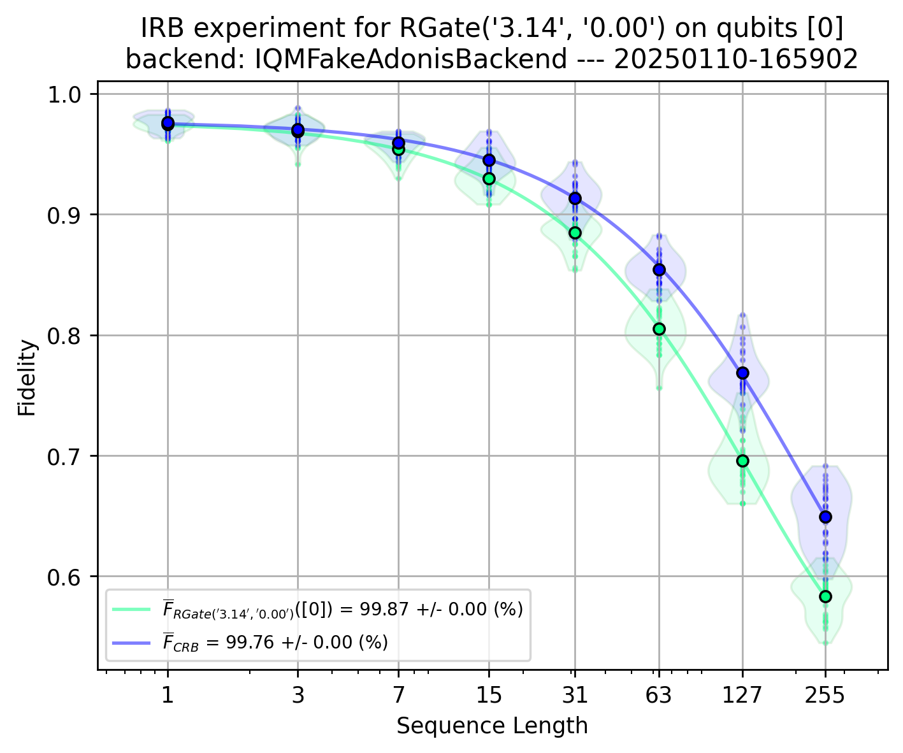
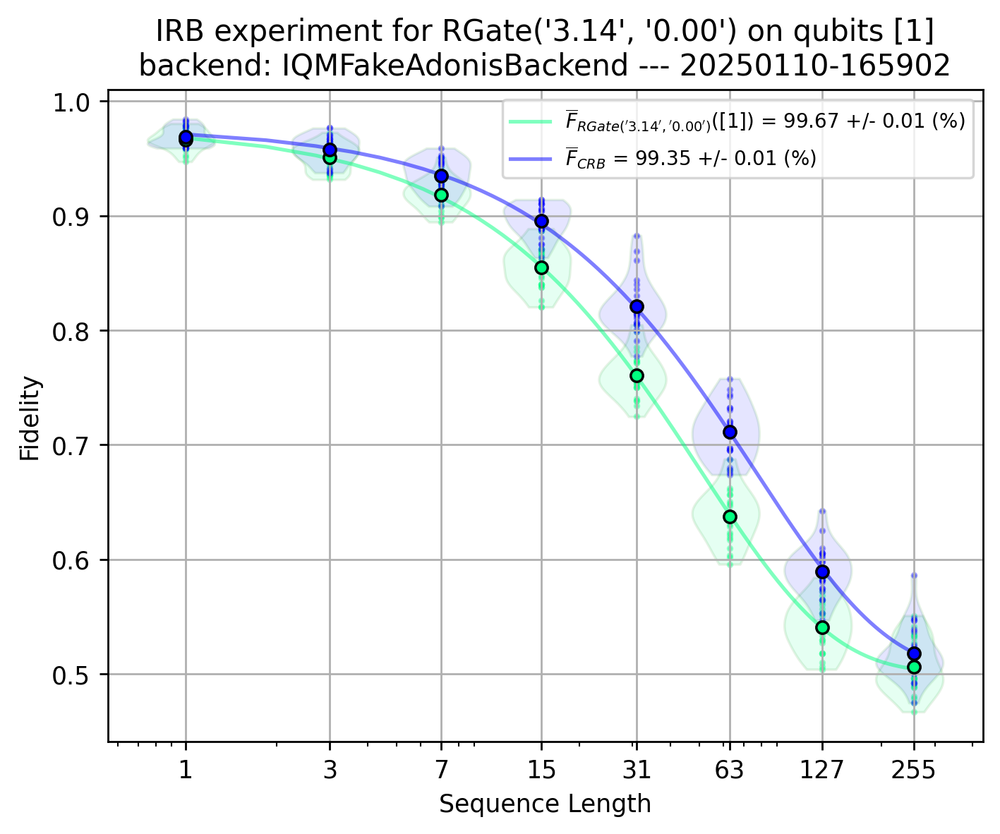
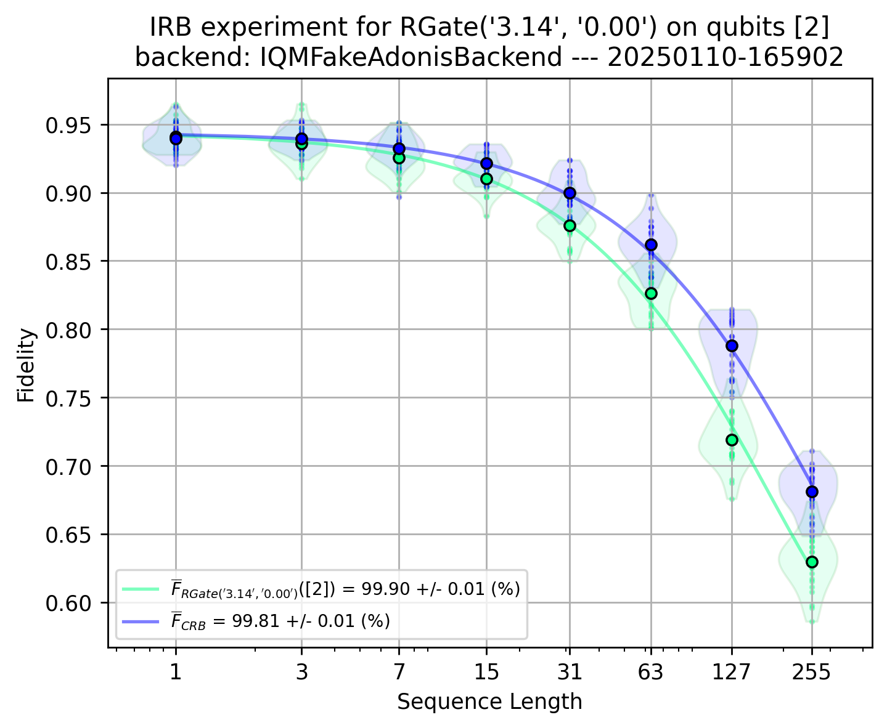
 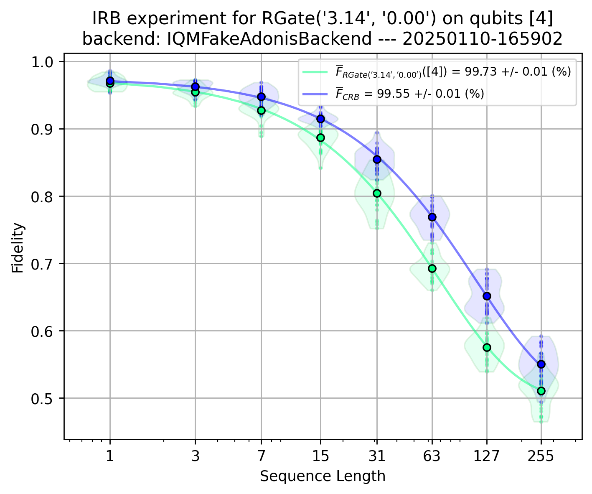
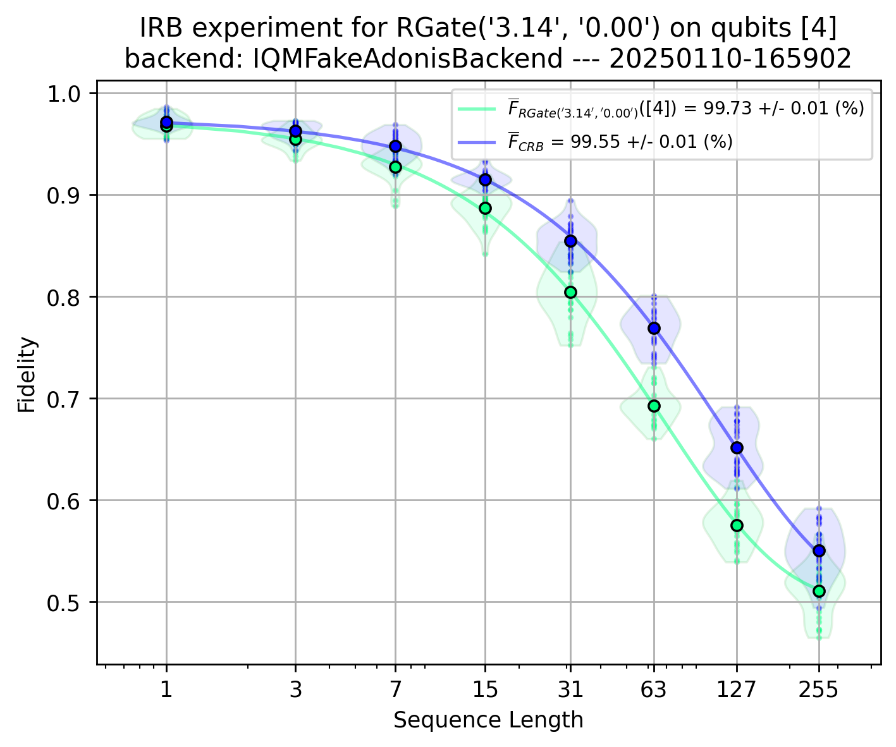
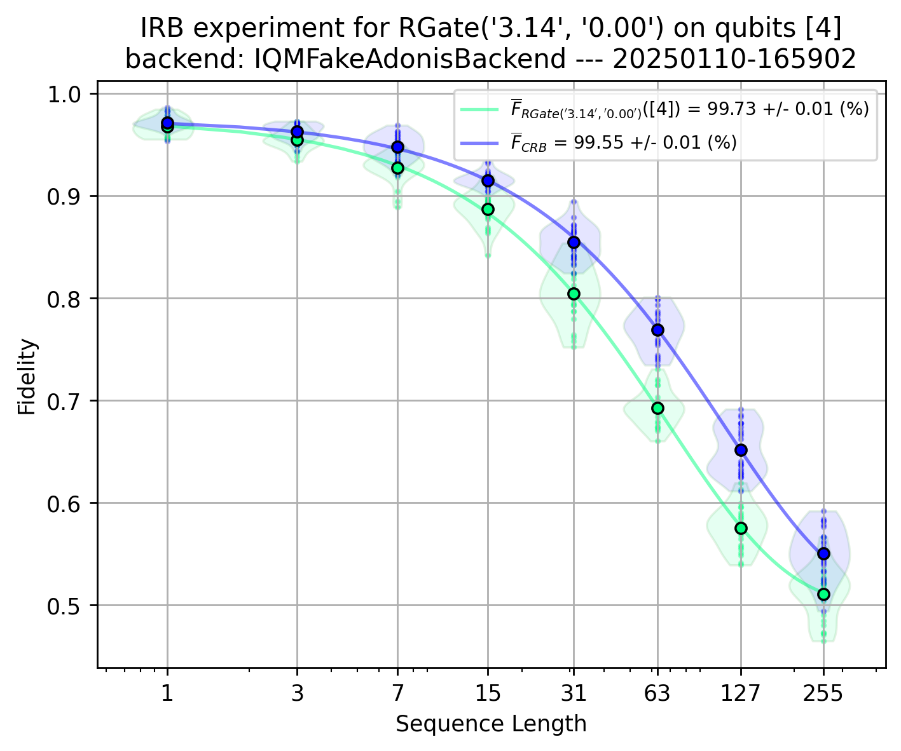
EXAMPLE_IRB_2Q = InterleavedRBConfiguration(
qubits_array=[[0,2],[1,2],[2,3],[2,4]],
sequence_lengths=[2**(m+1)-1 for m in range(7)],
num_circuit_samples=25,
shots=2**8,
calset_id=None,
parallel_execution=False,
interleaved_gate = "CZGate",
interleaved_gate_params = None,
simultaneous_fit = ["amplitude", "offset"],
)
benchmark_irb_2Q = InterleavedRandomizedBenchmarking(backend, EXAMPLE_IRB_2Q)
run_irb_2Q = benchmark_irb_2Q.run()
2025-01-10 17:04:06,918 - iqm.benchmarks.logging_config - INFO - Clifford dictionaries imported successfully !
2025-01-10 17:04:06,921 - iqm.benchmarks.logging_config - INFO - Wxecuting sequential Clifford and Interleaved RB circuits on qubits [0, 2]. Will generate and submit all 25 Clifford RB circuits for each depth [1, 3, 7, 15, 31, 63, 127]
2025-01-10 17:04:06,921 - iqm.benchmarks.logging_config - INFO - Now at sequence length 1
2025-01-10 17:04:07,001 - iqm.benchmarks.logging_config - INFO - Now at sequence length 3
2025-01-10 17:04:07,164 - iqm.benchmarks.logging_config - INFO - Now at sequence length 7
2025-01-10 17:04:07,481 - iqm.benchmarks.logging_config - INFO - Now at sequence length 15
2025-01-10 17:04:08,094 - iqm.benchmarks.logging_config - INFO - Now at sequence length 31
2025-01-10 17:04:09,367 - iqm.benchmarks.logging_config - INFO - Now at sequence length 63
2025-01-10 17:04:11,907 - iqm.benchmarks.logging_config - INFO - Now at sequence length 127
2025-01-10 17:04:16,862 - iqm.benchmarks.logging_config - INFO - Now at sequence length 1
2025-01-10 17:04:16,937 - iqm.benchmarks.logging_config - INFO - Now at sequence length 3
2025-01-10 17:04:17,095 - iqm.benchmarks.logging_config - INFO - Now at sequence length 7
2025-01-10 17:04:17,396 - iqm.benchmarks.logging_config - INFO - Now at sequence length 15
2025-01-10 17:04:18,026 - iqm.benchmarks.logging_config - INFO - Now at sequence length 31
2025-01-10 17:04:46,791 - iqm.benchmarks.logging_config - INFO - Now at sequence length 63
2025-01-10 17:04:49,495 - iqm.benchmarks.logging_config - INFO - Now at sequence length 127
2025-01-10 17:04:54,620 - iqm.benchmarks.logging_config - INFO - Submitting batch with 25 circuits corresponding to qubits [0, 2]
2025-01-10 17:04:54,654 - iqm.benchmarks.logging_config - INFO - Submitting batch with 25 circuits corresponding to qubits [0, 2]
2025-01-10 17:04:54,765 - iqm.benchmarks.logging_config - INFO - Submitting batch with 25 circuits corresponding to qubits [0, 2]
2025-01-10 17:04:54,930 - iqm.benchmarks.logging_config - INFO - Submitting batch with 25 circuits corresponding to qubits [0, 2]
2025-01-10 17:04:55,216 - iqm.benchmarks.logging_config - INFO - Submitting batch with 25 circuits corresponding to qubits [0, 2]
2025-01-10 17:04:55,738 - iqm.benchmarks.logging_config - INFO - Submitting batch with 25 circuits corresponding to qubits [0, 2]
2025-01-10 17:04:56,729 - iqm.benchmarks.logging_config - INFO - Submitting batch with 25 circuits corresponding to qubits [0, 2]
2025-01-10 17:04:58,674 - iqm.benchmarks.logging_config - INFO - Submitting batch with 25 circuits corresponding to qubits [0, 2]
2025-01-10 17:04:58,783 - iqm.benchmarks.logging_config - INFO - Submitting batch with 25 circuits corresponding to qubits [0, 2]
2025-01-10 17:04:58,965 - iqm.benchmarks.logging_config - INFO - Submitting batch with 25 circuits corresponding to qubits [0, 2]
2025-01-10 17:04:59,433 - iqm.benchmarks.logging_config - INFO - Submitting batch with 25 circuits corresponding to qubits [0, 2]
2025-01-10 17:04:59,727 - iqm.benchmarks.logging_config - INFO - Submitting batch with 25 circuits corresponding to qubits [0, 2]
2025-01-10 17:05:00,264 - iqm.benchmarks.logging_config - INFO - Submitting batch with 25 circuits corresponding to qubits [0, 2]
2025-01-10 17:05:01,314 - iqm.benchmarks.logging_config - INFO - Submitting batch with 25 circuits corresponding to qubits [0, 2]
2025-01-10 17:05:03,401 - iqm.benchmarks.logging_config - INFO - All jobs for qubits [0, 2] and sequence lengths [1, 3, 7, 15, 31, 63, 127] submitted successfully!
2025-01-10 17:05:03,470 - iqm.benchmarks.logging_config - INFO - Wxecuting sequential Clifford and Interleaved RB circuits on qubits [1, 2]. Will generate and submit all 25 Clifford RB circuits for each depth [1, 3, 7, 15, 31, 63, 127]
2025-01-10 17:05:03,489 - iqm.benchmarks.logging_config - INFO - Now at sequence length 1
2025-01-10 17:05:03,988 - iqm.benchmarks.logging_config - INFO - Now at sequence length 3
2025-01-10 17:05:04,149 - iqm.benchmarks.logging_config - INFO - Now at sequence length 7
2025-01-10 17:05:04,463 - iqm.benchmarks.logging_config - INFO - Now at sequence length 15
2025-01-10 17:05:05,078 - iqm.benchmarks.logging_config - INFO - Now at sequence length 31
2025-01-10 17:05:06,370 - iqm.benchmarks.logging_config - INFO - Now at sequence length 63
2025-01-10 17:05:44,771 - iqm.benchmarks.logging_config - INFO - Now at sequence length 127
2025-01-10 17:05:49,968 - iqm.benchmarks.logging_config - INFO - Now at sequence length 1
2025-01-10 17:05:50,041 - iqm.benchmarks.logging_config - INFO - Now at sequence length 3
2025-01-10 17:05:50,197 - iqm.benchmarks.logging_config - INFO - Now at sequence length 7
2025-01-10 17:05:50,510 - iqm.benchmarks.logging_config - INFO - Now at sequence length 15
2025-01-10 17:05:51,140 - iqm.benchmarks.logging_config - INFO - Now at sequence length 31
2025-01-10 17:05:52,441 - iqm.benchmarks.logging_config - INFO - Now at sequence length 63
2025-01-10 17:05:54,993 - iqm.benchmarks.logging_config - INFO - Now at sequence length 127
2025-01-10 17:06:00,161 - iqm.benchmarks.logging_config - INFO - Submitting batch with 25 circuits corresponding to qubits [1, 2]
2025-01-10 17:06:00,192 - iqm.benchmarks.logging_config - INFO - Submitting batch with 25 circuits corresponding to qubits [1, 2]
2025-01-10 17:06:00,292 - iqm.benchmarks.logging_config - INFO - Submitting batch with 25 circuits corresponding to qubits [1, 2]
2025-01-10 17:06:00,458 - iqm.benchmarks.logging_config - INFO - Submitting batch with 25 circuits corresponding to qubits [1, 2]
2025-01-10 17:06:00,743 - iqm.benchmarks.logging_config - INFO - Submitting batch with 25 circuits corresponding to qubits [1, 2]
2025-01-10 17:06:01,268 - iqm.benchmarks.logging_config - INFO - Submitting batch with 25 circuits corresponding to qubits [1, 2]
2025-01-10 17:06:02,298 - iqm.benchmarks.logging_config - INFO - Submitting batch with 25 circuits corresponding to qubits [1, 2]
2025-01-10 17:06:04,387 - iqm.benchmarks.logging_config - INFO - Submitting batch with 25 circuits corresponding to qubits [1, 2]
2025-01-10 17:06:04,482 - iqm.benchmarks.logging_config - INFO - Submitting batch with 25 circuits corresponding to qubits [1, 2]
2025-01-10 17:06:04,625 - iqm.benchmarks.logging_config - INFO - Submitting batch with 25 circuits corresponding to qubits [1, 2]
2025-01-10 17:06:05,156 - iqm.benchmarks.logging_config - INFO - Submitting batch with 25 circuits corresponding to qubits [1, 2]
2025-01-10 17:06:05,461 - iqm.benchmarks.logging_config - INFO - Submitting batch with 25 circuits corresponding to qubits [1, 2]
2025-01-10 17:06:06,009 - iqm.benchmarks.logging_config - INFO - Submitting batch with 25 circuits corresponding to qubits [1, 2]
2025-01-10 17:06:07,149 - iqm.benchmarks.logging_config - INFO - Submitting batch with 25 circuits corresponding to qubits [1, 2]
2025-01-10 17:07:02,921 - iqm.benchmarks.logging_config - INFO - All jobs for qubits [1, 2] and sequence lengths [1, 3, 7, 15, 31, 63, 127] submitted successfully!
2025-01-10 17:07:02,991 - iqm.benchmarks.logging_config - INFO - Wxecuting sequential Clifford and Interleaved RB circuits on qubits [2, 3]. Will generate and submit all 25 Clifford RB circuits for each depth [1, 3, 7, 15, 31, 63, 127]
2025-01-10 17:07:03,014 - iqm.benchmarks.logging_config - INFO - Now at sequence length 1
2025-01-10 17:07:03,251 - iqm.benchmarks.logging_config - INFO - Now at sequence length 3
2025-01-10 17:07:03,807 - iqm.benchmarks.logging_config - INFO - Now at sequence length 7
2025-01-10 17:07:04,165 - iqm.benchmarks.logging_config - INFO - Now at sequence length 15
2025-01-10 17:07:04,817 - iqm.benchmarks.logging_config - INFO - Now at sequence length 31
2025-01-10 17:07:06,171 - iqm.benchmarks.logging_config - INFO - Now at sequence length 63
2025-01-10 17:07:08,805 - iqm.benchmarks.logging_config - INFO - Now at sequence length 127
2025-01-10 17:07:14,188 - iqm.benchmarks.logging_config - INFO - Now at sequence length 1
2025-01-10 17:07:14,295 - iqm.benchmarks.logging_config - INFO - Now at sequence length 3
2025-01-10 17:07:14,464 - iqm.benchmarks.logging_config - INFO - Now at sequence length 7
2025-01-10 17:07:14,774 - iqm.benchmarks.logging_config - INFO - Now at sequence length 15
2025-01-10 17:07:15,406 - iqm.benchmarks.logging_config - INFO - Now at sequence length 31
2025-01-10 17:07:16,721 - iqm.benchmarks.logging_config - INFO - Now at sequence length 63
2025-01-10 17:07:19,398 - iqm.benchmarks.logging_config - INFO - Now at sequence length 127
2025-01-10 17:07:24,581 - iqm.benchmarks.logging_config - INFO - Submitting batch with 25 circuits corresponding to qubits [2, 3]
2025-01-10 17:07:24,615 - iqm.benchmarks.logging_config - INFO - Submitting batch with 25 circuits corresponding to qubits [2, 3]
2025-01-10 17:07:24,714 - iqm.benchmarks.logging_config - INFO - Submitting batch with 25 circuits corresponding to qubits [2, 3]
2025-01-10 17:07:24,875 - iqm.benchmarks.logging_config - INFO - Submitting batch with 25 circuits corresponding to qubits [2, 3]
2025-01-10 17:07:25,163 - iqm.benchmarks.logging_config - INFO - Submitting batch with 25 circuits corresponding to qubits [2, 3]
2025-01-10 17:07:25,689 - iqm.benchmarks.logging_config - INFO - Submitting batch with 25 circuits corresponding to qubits [2, 3]
2025-01-10 17:07:26,754 - iqm.benchmarks.logging_config - INFO - Submitting batch with 25 circuits corresponding to qubits [2, 3]
2025-01-10 17:07:28,801 - iqm.benchmarks.logging_config - INFO - Submitting batch with 25 circuits corresponding to qubits [2, 3]
2025-01-10 17:07:28,912 - iqm.benchmarks.logging_config - INFO - Submitting batch with 25 circuits corresponding to qubits [2, 3]
2025-01-10 17:07:29,075 - iqm.benchmarks.logging_config - INFO - Submitting batch with 25 circuits corresponding to qubits [2, 3]
2025-01-10 17:07:29,557 - iqm.benchmarks.logging_config - INFO - Submitting batch with 25 circuits corresponding to qubits [2, 3]
2025-01-10 17:07:29,891 - iqm.benchmarks.logging_config - INFO - Submitting batch with 25 circuits corresponding to qubits [2, 3]
2025-01-10 17:07:30,435 - iqm.benchmarks.logging_config - INFO - Submitting batch with 25 circuits corresponding to qubits [2, 3]
2025-01-10 17:07:31,484 - iqm.benchmarks.logging_config - INFO - Submitting batch with 25 circuits corresponding to qubits [2, 3]
2025-01-10 17:08:40,112 - iqm.benchmarks.logging_config - INFO - All jobs for qubits [2, 3] and sequence lengths [1, 3, 7, 15, 31, 63, 127] submitted successfully!
2025-01-10 17:08:40,181 - iqm.benchmarks.logging_config - INFO - Wxecuting sequential Clifford and Interleaved RB circuits on qubits [2, 4]. Will generate and submit all 25 Clifford RB circuits for each depth [1, 3, 7, 15, 31, 63, 127]
2025-01-10 17:08:40,194 - iqm.benchmarks.logging_config - INFO - Now at sequence length 1
2025-01-10 17:08:40,451 - iqm.benchmarks.logging_config - INFO - Now at sequence length 3
2025-01-10 17:08:40,959 - iqm.benchmarks.logging_config - INFO - Now at sequence length 7
2025-01-10 17:08:41,290 - iqm.benchmarks.logging_config - INFO - Now at sequence length 15
2025-01-10 17:08:41,955 - iqm.benchmarks.logging_config - INFO - Now at sequence length 31
2025-01-10 17:08:43,359 - iqm.benchmarks.logging_config - INFO - Now at sequence length 63
2025-01-10 17:08:46,096 - iqm.benchmarks.logging_config - INFO - Now at sequence length 127
2025-01-10 17:08:51,445 - iqm.benchmarks.logging_config - INFO - Now at sequence length 1
2025-01-10 17:08:51,521 - iqm.benchmarks.logging_config - INFO - Now at sequence length 3
2025-01-10 17:08:51,681 - iqm.benchmarks.logging_config - INFO - Now at sequence length 7
2025-01-10 17:08:51,993 - iqm.benchmarks.logging_config - INFO - Now at sequence length 15
2025-01-10 17:08:52,628 - iqm.benchmarks.logging_config - INFO - Now at sequence length 31
2025-01-10 17:08:53,972 - iqm.benchmarks.logging_config - INFO - Now at sequence length 63
2025-01-10 17:08:56,689 - iqm.benchmarks.logging_config - INFO - Now at sequence length 127
2025-01-10 17:09:02,071 - iqm.benchmarks.logging_config - INFO - Submitting batch with 25 circuits corresponding to qubits [2, 4]
2025-01-10 17:09:02,106 - iqm.benchmarks.logging_config - INFO - Submitting batch with 25 circuits corresponding to qubits [2, 4]
2025-01-10 17:09:02,214 - iqm.benchmarks.logging_config - INFO - Submitting batch with 25 circuits corresponding to qubits [2, 4]
2025-01-10 17:09:02,385 - iqm.benchmarks.logging_config - INFO - Submitting batch with 25 circuits corresponding to qubits [2, 4]
2025-01-10 17:09:02,689 - iqm.benchmarks.logging_config - INFO - Submitting batch with 25 circuits corresponding to qubits [2, 4]
2025-01-10 17:09:03,301 - iqm.benchmarks.logging_config - INFO - Submitting batch with 25 circuits corresponding to qubits [2, 4]
2025-01-10 17:09:04,401 - iqm.benchmarks.logging_config - INFO - Submitting batch with 25 circuits corresponding to qubits [2, 4]
2025-01-10 17:09:06,497 - iqm.benchmarks.logging_config - INFO - Submitting batch with 25 circuits corresponding to qubits [2, 4]
2025-01-10 17:09:06,639 - iqm.benchmarks.logging_config - INFO - Submitting batch with 25 circuits corresponding to qubits [2, 4]
2025-01-10 17:09:06,816 - iqm.benchmarks.logging_config - INFO - Submitting batch with 25 circuits corresponding to qubits [2, 4]
2025-01-10 17:09:07,309 - iqm.benchmarks.logging_config - INFO - Submitting batch with 25 circuits corresponding to qubits [2, 4]
2025-01-10 17:09:07,666 - iqm.benchmarks.logging_config - INFO - Submitting batch with 25 circuits corresponding to qubits [2, 4]
2025-01-10 17:09:08,239 - iqm.benchmarks.logging_config - INFO - Submitting batch with 25 circuits corresponding to qubits [2, 4]
2025-01-10 17:09:09,309 - iqm.benchmarks.logging_config - INFO - Submitting batch with 25 circuits corresponding to qubits [2, 4]
2025-01-10 17:09:11,579 - iqm.benchmarks.logging_config - INFO - All jobs for qubits [2, 4] and sequence lengths [1, 3, 7, 15, 31, 63, 127] submitted successfully!
2025-01-10 17:09:11,652 - iqm.benchmarks.logging_config - INFO - Retrieving all counts for clifford_qubits_[0, 2]_depth_1
2025-01-10 17:09:11,666 - iqm.benchmarks.logging_config - INFO - Adding counts of qubits [0, 2] and depth 1 run to the dataset
2025-01-10 17:09:12,131 - iqm.benchmarks.logging_config - INFO - Retrieving all counts for clifford_qubits_[0, 2]_depth_3
2025-01-10 17:09:12,132 - iqm.benchmarks.logging_config - INFO - Adding counts of qubits [0, 2] and depth 3 run to the dataset
2025-01-10 17:09:12,168 - iqm.benchmarks.logging_config - INFO - Retrieving all counts for clifford_qubits_[0, 2]_depth_7
2025-01-10 17:09:12,169 - iqm.benchmarks.logging_config - INFO - Adding counts of qubits [0, 2] and depth 7 run to the dataset
2025-01-10 17:09:12,207 - iqm.benchmarks.logging_config - INFO - Retrieving all counts for clifford_qubits_[0, 2]_depth_15
2025-01-10 17:09:12,208 - iqm.benchmarks.logging_config - INFO - Adding counts of qubits [0, 2] and depth 15 run to the dataset
2025-01-10 17:09:12,252 - iqm.benchmarks.logging_config - INFO - Retrieving all counts for clifford_qubits_[0, 2]_depth_31
2025-01-10 17:09:12,253 - iqm.benchmarks.logging_config - INFO - Adding counts of qubits [0, 2] and depth 31 run to the dataset
2025-01-10 17:09:12,298 - iqm.benchmarks.logging_config - INFO - Retrieving all counts for clifford_qubits_[0, 2]_depth_63
2025-01-10 17:09:12,298 - iqm.benchmarks.logging_config - INFO - Adding counts of qubits [0, 2] and depth 63 run to the dataset
2025-01-10 17:09:12,345 - iqm.benchmarks.logging_config - INFO - Retrieving all counts for clifford_qubits_[0, 2]_depth_127
2025-01-10 17:09:12,346 - iqm.benchmarks.logging_config - INFO - Adding counts of qubits [0, 2] and depth 127 run to the dataset
2025-01-10 17:09:12,398 - iqm.benchmarks.logging_config - INFO - Retrieving all counts for clifford_qubits_[1, 2]_depth_1
2025-01-10 17:09:12,399 - iqm.benchmarks.logging_config - INFO - Adding counts of qubits [1, 2] and depth 1 run to the dataset
2025-01-10 17:09:12,457 - iqm.benchmarks.logging_config - INFO - Retrieving all counts for clifford_qubits_[1, 2]_depth_3
2025-01-10 17:09:12,458 - iqm.benchmarks.logging_config - INFO - Adding counts of qubits [1, 2] and depth 3 run to the dataset
2025-01-10 17:09:12,523 - iqm.benchmarks.logging_config - INFO - Retrieving all counts for clifford_qubits_[1, 2]_depth_7
2025-01-10 17:09:12,523 - iqm.benchmarks.logging_config - INFO - Adding counts of qubits [1, 2] and depth 7 run to the dataset
2025-01-10 17:09:12,595 - iqm.benchmarks.logging_config - INFO - Retrieving all counts for clifford_qubits_[1, 2]_depth_15
2025-01-10 17:09:12,596 - iqm.benchmarks.logging_config - INFO - Adding counts of qubits [1, 2] and depth 15 run to the dataset
2025-01-10 17:09:12,676 - iqm.benchmarks.logging_config - INFO - Retrieving all counts for clifford_qubits_[1, 2]_depth_31
2025-01-10 17:09:12,676 - iqm.benchmarks.logging_config - INFO - Adding counts of qubits [1, 2] and depth 31 run to the dataset
2025-01-10 17:09:12,764 - iqm.benchmarks.logging_config - INFO - Retrieving all counts for clifford_qubits_[1, 2]_depth_63
2025-01-10 17:09:12,764 - iqm.benchmarks.logging_config - INFO - Adding counts of qubits [1, 2] and depth 63 run to the dataset
2025-01-10 17:09:12,862 - iqm.benchmarks.logging_config - INFO - Retrieving all counts for clifford_qubits_[1, 2]_depth_127
2025-01-10 17:09:12,863 - iqm.benchmarks.logging_config - INFO - Adding counts of qubits [1, 2] and depth 127 run to the dataset
2025-01-10 17:09:12,969 - iqm.benchmarks.logging_config - INFO - Retrieving all counts for clifford_qubits_[2, 3]_depth_1
2025-01-10 17:09:12,969 - iqm.benchmarks.logging_config - INFO - Adding counts of qubits [2, 3] and depth 1 run to the dataset
2025-01-10 17:09:13,088 - iqm.benchmarks.logging_config - INFO - Retrieving all counts for clifford_qubits_[2, 3]_depth_3
2025-01-10 17:09:13,089 - iqm.benchmarks.logging_config - INFO - Adding counts of qubits [2, 3] and depth 3 run to the dataset
2025-01-10 17:09:13,218 - iqm.benchmarks.logging_config - INFO - Retrieving all counts for clifford_qubits_[2, 3]_depth_7
2025-01-10 17:09:13,218 - iqm.benchmarks.logging_config - INFO - Adding counts of qubits [2, 3] and depth 7 run to the dataset
2025-01-10 17:09:13,359 - iqm.benchmarks.logging_config - INFO - Retrieving all counts for clifford_qubits_[2, 3]_depth_15
2025-01-10 17:09:13,360 - iqm.benchmarks.logging_config - INFO - Adding counts of qubits [2, 3] and depth 15 run to the dataset
2025-01-10 17:09:13,514 - iqm.benchmarks.logging_config - INFO - Retrieving all counts for clifford_qubits_[2, 3]_depth_31
2025-01-10 17:09:13,514 - iqm.benchmarks.logging_config - INFO - Adding counts of qubits [2, 3] and depth 31 run to the dataset
2025-01-10 17:09:13,681 - iqm.benchmarks.logging_config - INFO - Retrieving all counts for clifford_qubits_[2, 3]_depth_63
2025-01-10 17:09:13,682 - iqm.benchmarks.logging_config - INFO - Adding counts of qubits [2, 3] and depth 63 run to the dataset
2025-01-10 17:09:13,862 - iqm.benchmarks.logging_config - INFO - Retrieving all counts for clifford_qubits_[2, 3]_depth_127
2025-01-10 17:09:13,862 - iqm.benchmarks.logging_config - INFO - Adding counts of qubits [2, 3] and depth 127 run to the dataset
2025-01-10 17:09:14,063 - iqm.benchmarks.logging_config - INFO - Retrieving all counts for clifford_qubits_[2, 4]_depth_1
2025-01-10 17:09:14,063 - iqm.benchmarks.logging_config - INFO - Adding counts of qubits [2, 4] and depth 1 run to the dataset
2025-01-10 17:09:14,283 - iqm.benchmarks.logging_config - INFO - Retrieving all counts for clifford_qubits_[2, 4]_depth_3
2025-01-10 17:09:14,284 - iqm.benchmarks.logging_config - INFO - Adding counts of qubits [2, 4] and depth 3 run to the dataset
2025-01-10 17:09:14,511 - iqm.benchmarks.logging_config - INFO - Retrieving all counts for clifford_qubits_[2, 4]_depth_7
2025-01-10 17:09:14,511 - iqm.benchmarks.logging_config - INFO - Adding counts of qubits [2, 4] and depth 7 run to the dataset
2025-01-10 17:09:14,765 - iqm.benchmarks.logging_config - INFO - Retrieving all counts for clifford_qubits_[2, 4]_depth_15
2025-01-10 17:09:14,766 - iqm.benchmarks.logging_config - INFO - Adding counts of qubits [2, 4] and depth 15 run to the dataset
2025-01-10 17:09:15,034 - iqm.benchmarks.logging_config - INFO - Retrieving all counts for clifford_qubits_[2, 4]_depth_31
2025-01-10 17:09:15,035 - iqm.benchmarks.logging_config - INFO - Adding counts of qubits [2, 4] and depth 31 run to the dataset
2025-01-10 17:09:15,313 - iqm.benchmarks.logging_config - INFO - Retrieving all counts for clifford_qubits_[2, 4]_depth_63
2025-01-10 17:09:15,314 - iqm.benchmarks.logging_config - INFO - Adding counts of qubits [2, 4] and depth 63 run to the dataset
2025-01-10 17:09:15,611 - iqm.benchmarks.logging_config - INFO - Retrieving all counts for clifford_qubits_[2, 4]_depth_127
2025-01-10 17:09:15,612 - iqm.benchmarks.logging_config - INFO - Adding counts of qubits [2, 4] and depth 127 run to the dataset
2025-01-10 17:09:15,929 - iqm.benchmarks.logging_config - INFO - Retrieving all counts for interleaved_qubits_[0, 2]_depth_1
2025-01-10 17:09:15,930 - iqm.benchmarks.logging_config - INFO - Adding counts of qubits [0, 2] and depth 1 run to the dataset
2025-01-10 17:09:16,272 - iqm.benchmarks.logging_config - INFO - Retrieving all counts for interleaved_qubits_[0, 2]_depth_3
2025-01-10 17:09:16,272 - iqm.benchmarks.logging_config - INFO - Adding counts of qubits [0, 2] and depth 3 run to the dataset
2025-01-10 17:09:16,636 - iqm.benchmarks.logging_config - INFO - Retrieving all counts for interleaved_qubits_[0, 2]_depth_7
2025-01-10 17:09:16,637 - iqm.benchmarks.logging_config - INFO - Adding counts of qubits [0, 2] and depth 7 run to the dataset
2025-01-10 17:09:17,036 - iqm.benchmarks.logging_config - INFO - Retrieving all counts for interleaved_qubits_[0, 2]_depth_15
2025-01-10 17:09:17,036 - iqm.benchmarks.logging_config - INFO - Adding counts of qubits [0, 2] and depth 15 run to the dataset
2025-01-10 17:09:17,445 - iqm.benchmarks.logging_config - INFO - Retrieving all counts for interleaved_qubits_[0, 2]_depth_31
2025-01-10 17:09:17,446 - iqm.benchmarks.logging_config - INFO - Adding counts of qubits [0, 2] and depth 31 run to the dataset
2025-01-10 17:09:17,876 - iqm.benchmarks.logging_config - INFO - Retrieving all counts for interleaved_qubits_[0, 2]_depth_63
2025-01-10 17:09:17,877 - iqm.benchmarks.logging_config - INFO - Adding counts of qubits [0, 2] and depth 63 run to the dataset
2025-01-10 17:09:18,350 - iqm.benchmarks.logging_config - INFO - Retrieving all counts for interleaved_qubits_[0, 2]_depth_127
2025-01-10 17:09:18,351 - iqm.benchmarks.logging_config - INFO - Adding counts of qubits [0, 2] and depth 127 run to the dataset
2025-01-10 17:09:18,861 - iqm.benchmarks.logging_config - INFO - Retrieving all counts for interleaved_qubits_[1, 2]_depth_1
2025-01-10 17:09:18,862 - iqm.benchmarks.logging_config - INFO - Adding counts of qubits [1, 2] and depth 1 run to the dataset
2025-01-10 17:09:19,365 - iqm.benchmarks.logging_config - INFO - Retrieving all counts for interleaved_qubits_[1, 2]_depth_3
2025-01-10 17:09:19,366 - iqm.benchmarks.logging_config - INFO - Adding counts of qubits [1, 2] and depth 3 run to the dataset
2025-01-10 17:09:19,897 - iqm.benchmarks.logging_config - INFO - Retrieving all counts for interleaved_qubits_[1, 2]_depth_7
2025-01-10 17:09:19,897 - iqm.benchmarks.logging_config - INFO - Adding counts of qubits [1, 2] and depth 7 run to the dataset
2025-01-10 17:09:20,468 - iqm.benchmarks.logging_config - INFO - Retrieving all counts for interleaved_qubits_[1, 2]_depth_15
2025-01-10 17:09:20,469 - iqm.benchmarks.logging_config - INFO - Adding counts of qubits [1, 2] and depth 15 run to the dataset
2025-01-10 17:09:21,050 - iqm.benchmarks.logging_config - INFO - Retrieving all counts for interleaved_qubits_[1, 2]_depth_31
2025-01-10 17:09:21,051 - iqm.benchmarks.logging_config - INFO - Adding counts of qubits [1, 2] and depth 31 run to the dataset
2025-01-10 17:09:21,661 - iqm.benchmarks.logging_config - INFO - Retrieving all counts for interleaved_qubits_[1, 2]_depth_63
2025-01-10 17:09:21,662 - iqm.benchmarks.logging_config - INFO - Adding counts of qubits [1, 2] and depth 63 run to the dataset
2025-01-10 17:09:22,300 - iqm.benchmarks.logging_config - INFO - Retrieving all counts for interleaved_qubits_[1, 2]_depth_127
2025-01-10 17:09:22,301 - iqm.benchmarks.logging_config - INFO - Adding counts of qubits [1, 2] and depth 127 run to the dataset
2025-01-10 17:09:23,028 - iqm.benchmarks.logging_config - INFO - Retrieving all counts for interleaved_qubits_[2, 3]_depth_1
2025-01-10 17:09:23,028 - iqm.benchmarks.logging_config - INFO - Adding counts of qubits [2, 3] and depth 1 run to the dataset
2025-01-10 17:09:23,739 - iqm.benchmarks.logging_config - INFO - Retrieving all counts for interleaved_qubits_[2, 3]_depth_3
2025-01-10 17:09:23,740 - iqm.benchmarks.logging_config - INFO - Adding counts of qubits [2, 3] and depth 3 run to the dataset
2025-01-10 17:09:24,475 - iqm.benchmarks.logging_config - INFO - Retrieving all counts for interleaved_qubits_[2, 3]_depth_7
2025-01-10 17:09:24,475 - iqm.benchmarks.logging_config - INFO - Adding counts of qubits [2, 3] and depth 7 run to the dataset
2025-01-10 17:09:25,240 - iqm.benchmarks.logging_config - INFO - Retrieving all counts for interleaved_qubits_[2, 3]_depth_15
2025-01-10 17:09:25,241 - iqm.benchmarks.logging_config - INFO - Adding counts of qubits [2, 3] and depth 15 run to the dataset
2025-01-10 17:09:26,041 - iqm.benchmarks.logging_config - INFO - Retrieving all counts for interleaved_qubits_[2, 3]_depth_31
2025-01-10 17:09:26,042 - iqm.benchmarks.logging_config - INFO - Adding counts of qubits [2, 3] and depth 31 run to the dataset
2025-01-10 17:09:26,877 - iqm.benchmarks.logging_config - INFO - Retrieving all counts for interleaved_qubits_[2, 3]_depth_63
2025-01-10 17:09:26,877 - iqm.benchmarks.logging_config - INFO - Adding counts of qubits [2, 3] and depth 63 run to the dataset
2025-01-10 17:09:27,764 - iqm.benchmarks.logging_config - INFO - Retrieving all counts for interleaved_qubits_[2, 3]_depth_127
2025-01-10 17:09:27,765 - iqm.benchmarks.logging_config - INFO - Adding counts of qubits [2, 3] and depth 127 run to the dataset
2025-01-10 17:09:28,673 - iqm.benchmarks.logging_config - INFO - Retrieving all counts for interleaved_qubits_[2, 4]_depth_1
2025-01-10 17:09:28,674 - iqm.benchmarks.logging_config - INFO - Adding counts of qubits [2, 4] and depth 1 run to the dataset
2025-01-10 17:09:29,661 - iqm.benchmarks.logging_config - INFO - Retrieving all counts for interleaved_qubits_[2, 4]_depth_3
2025-01-10 17:09:29,662 - iqm.benchmarks.logging_config - INFO - Adding counts of qubits [2, 4] and depth 3 run to the dataset
2025-01-10 17:09:30,641 - iqm.benchmarks.logging_config - INFO - Retrieving all counts for interleaved_qubits_[2, 4]_depth_7
2025-01-10 17:09:30,642 - iqm.benchmarks.logging_config - INFO - Adding counts of qubits [2, 4] and depth 7 run to the dataset
2025-01-10 17:09:31,757 - iqm.benchmarks.logging_config - INFO - Retrieving all counts for interleaved_qubits_[2, 4]_depth_15
2025-01-10 17:09:31,757 - iqm.benchmarks.logging_config - INFO - Adding counts of qubits [2, 4] and depth 15 run to the dataset
2025-01-10 17:09:32,866 - iqm.benchmarks.logging_config - INFO - Retrieving all counts for interleaved_qubits_[2, 4]_depth_31
2025-01-10 17:09:32,866 - iqm.benchmarks.logging_config - INFO - Adding counts of qubits [2, 4] and depth 31 run to the dataset
2025-01-10 17:09:34,005 - iqm.benchmarks.logging_config - INFO - Retrieving all counts for interleaved_qubits_[2, 4]_depth_63
2025-01-10 17:09:34,005 - iqm.benchmarks.logging_config - INFO - Adding counts of qubits [2, 4] and depth 63 run to the dataset
2025-01-10 17:09:35,177 - iqm.benchmarks.logging_config - INFO - Retrieving all counts for interleaved_qubits_[2, 4]_depth_127
2025-01-10 17:09:35,178 - iqm.benchmarks.logging_config - INFO - Adding counts of qubits [2, 4] and depth 127 run to the dataset
2025-01-10 17:09:36,431 - iqm.benchmarks.logging_config - INFO - Interleaved RB experiment concluded !
result_irb_2Q = benchmark_irb_2Q.analyze()
2025-01-10 17:09:36,611 - iqm.benchmarks.logging_config - INFO - Post-processing sequential Interleaved RB for qubits [[0, 2], [1, 2], [2, 3], [2, 4]]
2025-01-10 17:09:36,642 - iqm.benchmarks.logging_config - INFO - Now on Clifford RB with qubits [0, 2] and depth 1
2025-01-10 17:09:36,673 - iqm.benchmarks.logging_config - INFO - Now on Clifford RB with qubits [0, 2] and depth 3
2025-01-10 17:09:36,704 - iqm.benchmarks.logging_config - INFO - Now on Clifford RB with qubits [0, 2] and depth 7
2025-01-10 17:09:36,734 - iqm.benchmarks.logging_config - INFO - Now on Clifford RB with qubits [0, 2] and depth 15
2025-01-10 17:09:36,765 - iqm.benchmarks.logging_config - INFO - Now on Clifford RB with qubits [0, 2] and depth 31
2025-01-10 17:09:36,795 - iqm.benchmarks.logging_config - INFO - Now on Clifford RB with qubits [0, 2] and depth 63
2025-01-10 17:09:36,826 - iqm.benchmarks.logging_config - INFO - Now on Clifford RB with qubits [0, 2] and depth 127
2025-01-10 17:09:36,858 - iqm.benchmarks.logging_config - INFO - Now on Interleaved RB with qubits [0, 2] and depth 1
2025-01-10 17:09:36,888 - iqm.benchmarks.logging_config - INFO - Now on Interleaved RB with qubits [0, 2] and depth 3
2025-01-10 17:09:36,918 - iqm.benchmarks.logging_config - INFO - Now on Interleaved RB with qubits [0, 2] and depth 7
2025-01-10 17:09:36,949 - iqm.benchmarks.logging_config - INFO - Now on Interleaved RB with qubits [0, 2] and depth 15
2025-01-10 17:09:36,979 - iqm.benchmarks.logging_config - INFO - Now on Interleaved RB with qubits [0, 2] and depth 31
2025-01-10 17:09:37,009 - iqm.benchmarks.logging_config - INFO - Now on Interleaved RB with qubits [0, 2] and depth 63
2025-01-10 17:09:37,040 - iqm.benchmarks.logging_config - INFO - Now on Interleaved RB with qubits [0, 2] and depth 127
2025-01-10 17:09:37,070 - iqm.benchmarks.logging_config - INFO - Now on Clifford RB with qubits [1, 2] and depth 1
2025-01-10 17:09:37,101 - iqm.benchmarks.logging_config - INFO - Now on Clifford RB with qubits [1, 2] and depth 3
2025-01-10 17:09:37,131 - iqm.benchmarks.logging_config - INFO - Now on Clifford RB with qubits [1, 2] and depth 7
2025-01-10 17:09:37,161 - iqm.benchmarks.logging_config - INFO - Now on Clifford RB with qubits [1, 2] and depth 15
2025-01-10 17:09:37,192 - iqm.benchmarks.logging_config - INFO - Now on Clifford RB with qubits [1, 2] and depth 31
2025-01-10 17:09:37,223 - iqm.benchmarks.logging_config - INFO - Now on Clifford RB with qubits [1, 2] and depth 63
2025-01-10 17:09:37,253 - iqm.benchmarks.logging_config - INFO - Now on Clifford RB with qubits [1, 2] and depth 127
2025-01-10 17:09:37,283 - iqm.benchmarks.logging_config - INFO - Now on Interleaved RB with qubits [1, 2] and depth 1
2025-01-10 17:09:37,314 - iqm.benchmarks.logging_config - INFO - Now on Interleaved RB with qubits [1, 2] and depth 3
2025-01-10 17:09:37,344 - iqm.benchmarks.logging_config - INFO - Now on Interleaved RB with qubits [1, 2] and depth 7
2025-01-10 17:09:37,374 - iqm.benchmarks.logging_config - INFO - Now on Interleaved RB with qubits [1, 2] and depth 15
2025-01-10 17:09:37,404 - iqm.benchmarks.logging_config - INFO - Now on Interleaved RB with qubits [1, 2] and depth 31
2025-01-10 17:09:37,435 - iqm.benchmarks.logging_config - INFO - Now on Interleaved RB with qubits [1, 2] and depth 63
2025-01-10 17:09:37,465 - iqm.benchmarks.logging_config - INFO - Now on Interleaved RB with qubits [1, 2] and depth 127
2025-01-10 17:09:37,495 - iqm.benchmarks.logging_config - INFO - Now on Clifford RB with qubits [2, 3] and depth 1
2025-01-10 17:09:37,526 - iqm.benchmarks.logging_config - INFO - Now on Clifford RB with qubits [2, 3] and depth 3
2025-01-10 17:09:37,556 - iqm.benchmarks.logging_config - INFO - Now on Clifford RB with qubits [2, 3] and depth 7
2025-01-10 17:09:37,586 - iqm.benchmarks.logging_config - INFO - Now on Clifford RB with qubits [2, 3] and depth 15
2025-01-10 17:09:37,616 - iqm.benchmarks.logging_config - INFO - Now on Clifford RB with qubits [2, 3] and depth 31
2025-01-10 17:09:37,647 - iqm.benchmarks.logging_config - INFO - Now on Clifford RB with qubits [2, 3] and depth 63
2025-01-10 17:09:37,677 - iqm.benchmarks.logging_config - INFO - Now on Clifford RB with qubits [2, 3] and depth 127
2025-01-10 17:09:37,707 - iqm.benchmarks.logging_config - INFO - Now on Interleaved RB with qubits [2, 3] and depth 1
2025-01-10 17:09:37,738 - iqm.benchmarks.logging_config - INFO - Now on Interleaved RB with qubits [2, 3] and depth 3
2025-01-10 17:09:37,768 - iqm.benchmarks.logging_config - INFO - Now on Interleaved RB with qubits [2, 3] and depth 7
2025-01-10 17:09:37,798 - iqm.benchmarks.logging_config - INFO - Now on Interleaved RB with qubits [2, 3] and depth 15
2025-01-10 17:09:37,829 - iqm.benchmarks.logging_config - INFO - Now on Interleaved RB with qubits [2, 3] and depth 31
2025-01-10 17:09:37,859 - iqm.benchmarks.logging_config - INFO - Now on Interleaved RB with qubits [2, 3] and depth 63
2025-01-10 17:09:37,890 - iqm.benchmarks.logging_config - INFO - Now on Interleaved RB with qubits [2, 3] and depth 127
2025-01-10 17:09:37,920 - iqm.benchmarks.logging_config - INFO - Now on Clifford RB with qubits [2, 4] and depth 1
2025-01-10 17:09:37,950 - iqm.benchmarks.logging_config - INFO - Now on Clifford RB with qubits [2, 4] and depth 3
2025-01-10 17:09:37,981 - iqm.benchmarks.logging_config - INFO - Now on Clifford RB with qubits [2, 4] and depth 7
2025-01-10 17:09:38,011 - iqm.benchmarks.logging_config - INFO - Now on Clifford RB with qubits [2, 4] and depth 15
2025-01-10 17:09:38,041 - iqm.benchmarks.logging_config - INFO - Now on Clifford RB with qubits [2, 4] and depth 31
2025-01-10 17:09:38,071 - iqm.benchmarks.logging_config - INFO - Now on Clifford RB with qubits [2, 4] and depth 63
2025-01-10 17:09:38,101 - iqm.benchmarks.logging_config - INFO - Now on Clifford RB with qubits [2, 4] and depth 127
2025-01-10 17:09:38,131 - iqm.benchmarks.logging_config - INFO - Now on Interleaved RB with qubits [2, 4] and depth 1
2025-01-10 17:09:38,162 - iqm.benchmarks.logging_config - INFO - Now on Interleaved RB with qubits [2, 4] and depth 3
2025-01-10 17:09:38,192 - iqm.benchmarks.logging_config - INFO - Now on Interleaved RB with qubits [2, 4] and depth 7
2025-01-10 17:09:38,223 - iqm.benchmarks.logging_config - INFO - Now on Interleaved RB with qubits [2, 4] and depth 15
2025-01-10 17:09:38,253 - iqm.benchmarks.logging_config - INFO - Now on Interleaved RB with qubits [2, 4] and depth 31
2025-01-10 17:09:38,284 - iqm.benchmarks.logging_config - INFO - Now on Interleaved RB with qubits [2, 4] and depth 63
2025-01-10 17:09:38,314 - iqm.benchmarks.logging_config - INFO - Now on Interleaved RB with qubits [2, 4] and depth 127
{'interleaved': {'[0, 2]': 0.9742310809885095}, 'clifford': {'[0, 2]': 0.9459834045099638}}
[0, 2]
clifford
{'interleaved': {'[1, 2]': 0.9702389918426017}, 'clifford': {'[1, 2]': 0.9373183372682623}}
[1, 2]
clifford
{'interleaved': {'[2, 3]': 0.9829862612568532}, 'clifford': {'[2, 3]': 0.9651704260970525}}
[2, 3]
clifford
{'interleaved': {'[2, 4]': 0.9600628980342876}, 'clifford': {'[2, 4]': 0.9331175707494691}}
[2, 4]
clifford
for plot in result_irb_2Q.plots.values():
display(plot)
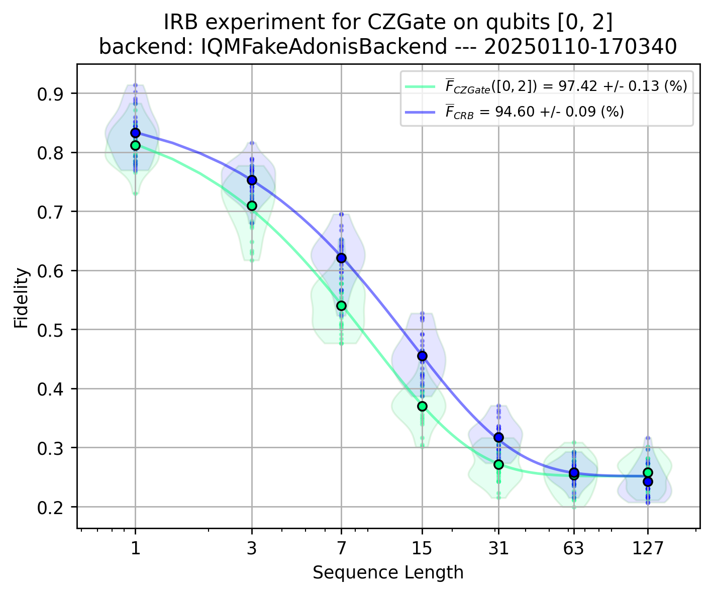
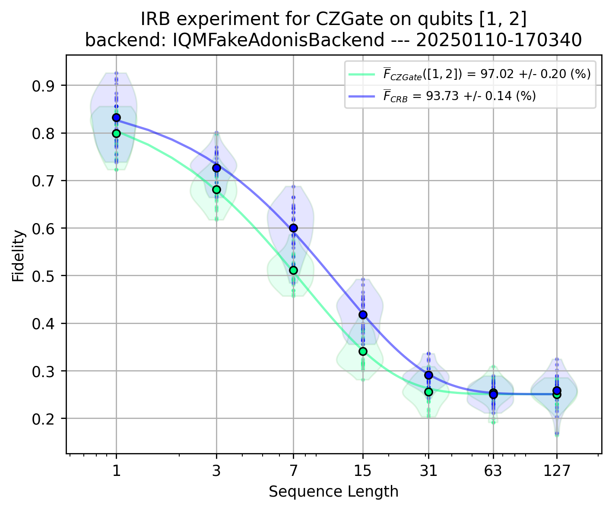
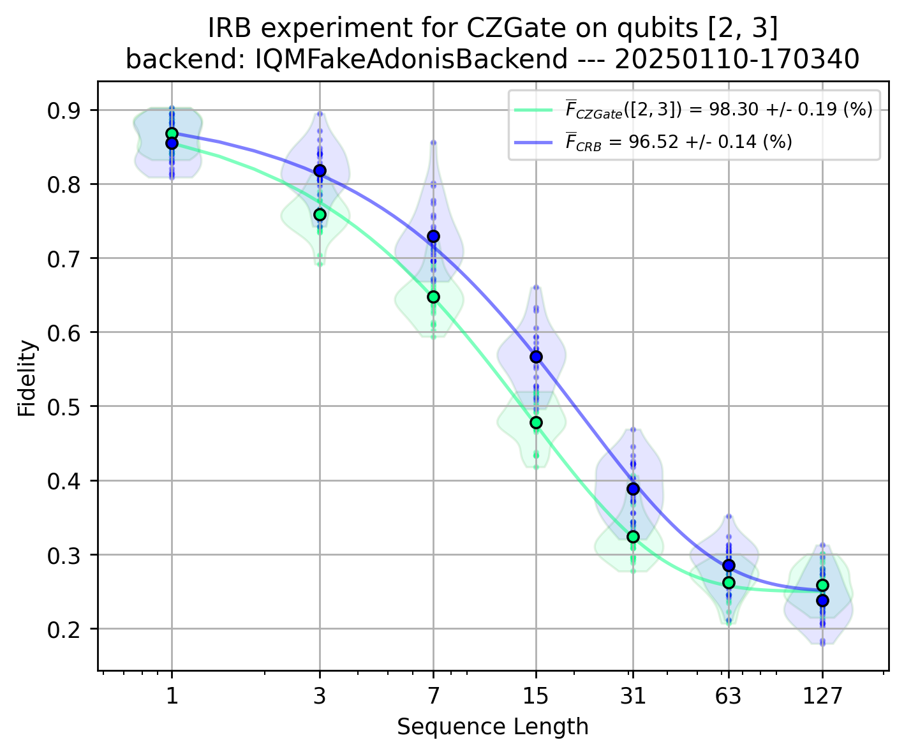
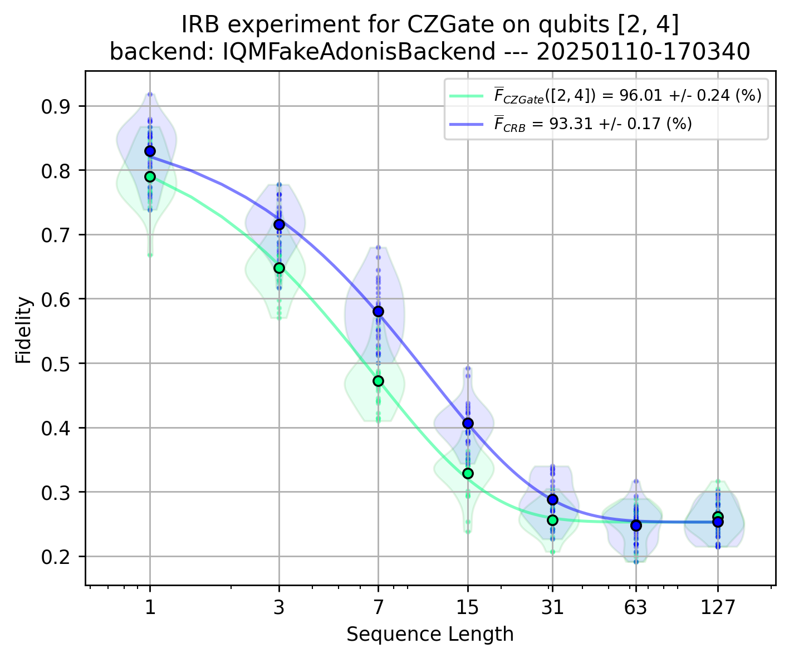
EXAMPLE_IRB_iswap = InterleavedRBConfiguration(
qubits_array=[[0,2],[1,2]],
sequence_lengths=[2**(m+1)-1 for m in range(7)],
num_circuit_samples=30,
shots=2**10,
calset_id=None,
parallel_execution=False,
interleaved_gate = "iSwapGate",
interleaved_gate_params = None,
simultaneous_fit = ["amplitude", "offset"],
)
benchmark_irb_iswap = InterleavedRandomizedBenchmarking(backend, EXAMPLE_IRB_iswap)
run_irb_iswap = benchmark_irb_iswap.run()
2025-01-10 17:11:22,446 - iqm.benchmarks.logging_config - INFO - Clifford dictionaries imported successfully !
2025-01-10 17:11:22,465 - iqm.benchmarks.logging_config - INFO - Wxecuting sequential Clifford and Interleaved RB circuits on qubits [0, 2]. Will generate and submit all 30 Clifford RB circuits for each depth [1, 3, 7, 15, 31, 63, 127]
2025-01-10 17:11:22,466 - iqm.benchmarks.logging_config - INFO - Now at sequence length 1
2025-01-10 17:11:22,567 - iqm.benchmarks.logging_config - INFO - Now at sequence length 3
2025-01-10 17:11:22,751 - iqm.benchmarks.logging_config - INFO - Now at sequence length 7
2025-01-10 17:11:23,122 - iqm.benchmarks.logging_config - INFO - Now at sequence length 15
2025-01-10 17:11:23,904 - iqm.benchmarks.logging_config - INFO - Now at sequence length 31
2025-01-10 17:11:25,470 - iqm.benchmarks.logging_config - INFO - Now at sequence length 63
2025-01-10 17:11:28,573 - iqm.benchmarks.logging_config - INFO - Now at sequence length 127
2025-01-10 17:11:34,742 - iqm.benchmarks.logging_config - INFO - Now at sequence length 1
2025-01-10 17:11:34,879 - iqm.benchmarks.logging_config - INFO - Now at sequence length 3
2025-01-10 17:11:35,162 - iqm.benchmarks.logging_config - INFO - Now at sequence length 7
2025-01-10 17:11:35,782 - iqm.benchmarks.logging_config - INFO - Now at sequence length 15
2025-01-10 17:11:37,079 - iqm.benchmarks.logging_config - INFO - Now at sequence length 31
2025-01-10 17:11:39,808 - iqm.benchmarks.logging_config - INFO - Now at sequence length 63
2025-01-10 17:11:45,264 - iqm.benchmarks.logging_config - INFO - Now at sequence length 127
2025-01-10 17:13:25,954 - iqm.benchmarks.logging_config - INFO - Submitting batch with 30 circuits corresponding to qubits [0, 2]
2025-01-10 17:13:26,001 - iqm.benchmarks.logging_config - INFO - Submitting batch with 30 circuits corresponding to qubits [0, 2]
2025-01-10 17:13:26,145 - iqm.benchmarks.logging_config - INFO - Submitting batch with 30 circuits corresponding to qubits [0, 2]
2025-01-10 17:13:26,378 - iqm.benchmarks.logging_config - INFO - Submitting batch with 30 circuits corresponding to qubits [0, 2]
2025-01-10 17:13:26,781 - iqm.benchmarks.logging_config - INFO - Submitting batch with 30 circuits corresponding to qubits [0, 2]
2025-01-10 17:13:27,458 - iqm.benchmarks.logging_config - INFO - Submitting batch with 30 circuits corresponding to qubits [0, 2]
2025-01-10 17:13:28,811 - iqm.benchmarks.logging_config - INFO - Submitting batch with 30 circuits corresponding to qubits [0, 2]
2025-01-10 17:13:31,328 - iqm.benchmarks.logging_config - INFO - Submitting batch with 30 circuits corresponding to qubits [0, 2]
2025-01-10 17:13:31,496 - iqm.benchmarks.logging_config - INFO - Submitting batch with 30 circuits corresponding to qubits [0, 2]
2025-01-10 17:13:31,725 - iqm.benchmarks.logging_config - INFO - Submitting batch with 30 circuits corresponding to qubits [0, 2]
2025-01-10 17:13:32,408 - iqm.benchmarks.logging_config - INFO - Submitting batch with 30 circuits corresponding to qubits [0, 2]
2025-01-10 17:13:32,895 - iqm.benchmarks.logging_config - INFO - Submitting batch with 30 circuits corresponding to qubits [0, 2]
2025-01-10 17:13:33,788 - iqm.benchmarks.logging_config - INFO - Submitting batch with 30 circuits corresponding to qubits [0, 2]
2025-01-10 17:13:35,513 - iqm.benchmarks.logging_config - INFO - Submitting batch with 30 circuits corresponding to qubits [0, 2]
2025-01-10 17:13:39,094 - iqm.benchmarks.logging_config - INFO - All jobs for qubits [0, 2] and sequence lengths [1, 3, 7, 15, 31, 63, 127] submitted successfully!
2025-01-10 17:13:39,163 - iqm.benchmarks.logging_config - INFO - Wxecuting sequential Clifford and Interleaved RB circuits on qubits [1, 2]. Will generate and submit all 30 Clifford RB circuits for each depth [1, 3, 7, 15, 31, 63, 127]
2025-01-10 17:13:39,176 - iqm.benchmarks.logging_config - INFO - Now at sequence length 1
2025-01-10 17:13:39,517 - iqm.benchmarks.logging_config - INFO - Now at sequence length 3
2025-01-10 17:13:40,087 - iqm.benchmarks.logging_config - INFO - Now at sequence length 7
2025-01-10 17:13:41,270 - iqm.benchmarks.logging_config - INFO - Now at sequence length 15
2025-01-10 17:13:42,050 - iqm.benchmarks.logging_config - INFO - Now at sequence length 31
2025-01-10 17:13:43,773 - iqm.benchmarks.logging_config - INFO - Now at sequence length 63
2025-01-10 17:13:47,270 - iqm.benchmarks.logging_config - INFO - Now at sequence length 127
2025-01-10 17:13:53,558 - iqm.benchmarks.logging_config - INFO - Now at sequence length 1
2025-01-10 17:13:53,684 - iqm.benchmarks.logging_config - INFO - Now at sequence length 3
2025-01-10 17:13:53,986 - iqm.benchmarks.logging_config - INFO - Now at sequence length 7
2025-01-10 17:13:54,638 - iqm.benchmarks.logging_config - INFO - Now at sequence length 15
2025-01-10 17:13:56,041 - iqm.benchmarks.logging_config - INFO - Now at sequence length 31
2025-01-10 17:13:58,691 - iqm.benchmarks.logging_config - INFO - Now at sequence length 63
2025-01-10 17:15:39,488 - iqm.benchmarks.logging_config - INFO - Now at sequence length 127
2025-01-10 17:15:50,162 - iqm.benchmarks.logging_config - INFO - Submitting batch with 30 circuits corresponding to qubits [1, 2]
2025-01-10 17:15:50,204 - iqm.benchmarks.logging_config - INFO - Submitting batch with 30 circuits corresponding to qubits [1, 2]
2025-01-10 17:15:50,339 - iqm.benchmarks.logging_config - INFO - Submitting batch with 30 circuits corresponding to qubits [1, 2]
2025-01-10 17:15:50,580 - iqm.benchmarks.logging_config - INFO - Submitting batch with 30 circuits corresponding to qubits [1, 2]
2025-01-10 17:15:50,947 - iqm.benchmarks.logging_config - INFO - Submitting batch with 30 circuits corresponding to qubits [1, 2]
2025-01-10 17:15:51,608 - iqm.benchmarks.logging_config - INFO - Submitting batch with 30 circuits corresponding to qubits [1, 2]
2025-01-10 17:15:52,918 - iqm.benchmarks.logging_config - INFO - Submitting batch with 30 circuits corresponding to qubits [1, 2]
2025-01-10 17:15:55,387 - iqm.benchmarks.logging_config - INFO - Submitting batch with 30 circuits corresponding to qubits [1, 2]
2025-01-10 17:15:55,510 - iqm.benchmarks.logging_config - INFO - Submitting batch with 30 circuits corresponding to qubits [1, 2]
2025-01-10 17:15:55,758 - iqm.benchmarks.logging_config - INFO - Submitting batch with 30 circuits corresponding to qubits [1, 2]
2025-01-10 17:15:56,396 - iqm.benchmarks.logging_config - INFO - Submitting batch with 30 circuits corresponding to qubits [1, 2]
2025-01-10 17:15:56,829 - iqm.benchmarks.logging_config - INFO - Submitting batch with 30 circuits corresponding to qubits [1, 2]
2025-01-10 17:15:57,609 - iqm.benchmarks.logging_config - INFO - Submitting batch with 30 circuits corresponding to qubits [1, 2]
2025-01-10 17:15:59,191 - iqm.benchmarks.logging_config - INFO - Submitting batch with 30 circuits corresponding to qubits [1, 2]
2025-01-10 17:16:02,269 - iqm.benchmarks.logging_config - INFO - All jobs for qubits [1, 2] and sequence lengths [1, 3, 7, 15, 31, 63, 127] submitted successfully!
2025-01-10 17:16:02,336 - iqm.benchmarks.logging_config - INFO - Retrieving all counts for clifford_qubits_[0, 2]_depth_1
2025-01-10 17:16:02,350 - iqm.benchmarks.logging_config - INFO - Adding counts of qubits [0, 2] and depth 1 run to the dataset
2025-01-10 17:16:03,508 - iqm.benchmarks.logging_config - INFO - Retrieving all counts for clifford_qubits_[0, 2]_depth_3
2025-01-10 17:16:03,510 - iqm.benchmarks.logging_config - INFO - Adding counts of qubits [0, 2] and depth 3 run to the dataset
2025-01-10 17:16:03,560 - iqm.benchmarks.logging_config - INFO - Retrieving all counts for clifford_qubits_[0, 2]_depth_7
2025-01-10 17:16:03,561 - iqm.benchmarks.logging_config - INFO - Adding counts of qubits [0, 2] and depth 7 run to the dataset
2025-01-10 17:16:03,606 - iqm.benchmarks.logging_config - INFO - Retrieving all counts for clifford_qubits_[0, 2]_depth_15
2025-01-10 17:16:03,607 - iqm.benchmarks.logging_config - INFO - Adding counts of qubits [0, 2] and depth 15 run to the dataset
2025-01-10 17:16:03,655 - iqm.benchmarks.logging_config - INFO - Retrieving all counts for clifford_qubits_[0, 2]_depth_31
2025-01-10 17:16:03,655 - iqm.benchmarks.logging_config - INFO - Adding counts of qubits [0, 2] and depth 31 run to the dataset
2025-01-10 17:16:03,708 - iqm.benchmarks.logging_config - INFO - Retrieving all counts for clifford_qubits_[0, 2]_depth_63
2025-01-10 17:16:03,708 - iqm.benchmarks.logging_config - INFO - Adding counts of qubits [0, 2] and depth 63 run to the dataset
2025-01-10 17:16:03,767 - iqm.benchmarks.logging_config - INFO - Retrieving all counts for clifford_qubits_[0, 2]_depth_127
2025-01-10 17:16:03,768 - iqm.benchmarks.logging_config - INFO - Adding counts of qubits [0, 2] and depth 127 run to the dataset
2025-01-10 17:16:03,833 - iqm.benchmarks.logging_config - INFO - Retrieving all counts for clifford_qubits_[1, 2]_depth_1
2025-01-10 17:16:03,834 - iqm.benchmarks.logging_config - INFO - Adding counts of qubits [1, 2] and depth 1 run to the dataset
2025-01-10 17:16:03,907 - iqm.benchmarks.logging_config - INFO - Retrieving all counts for clifford_qubits_[1, 2]_depth_3
2025-01-10 17:16:03,908 - iqm.benchmarks.logging_config - INFO - Adding counts of qubits [1, 2] and depth 3 run to the dataset
2025-01-10 17:16:03,990 - iqm.benchmarks.logging_config - INFO - Retrieving all counts for clifford_qubits_[1, 2]_depth_7
2025-01-10 17:16:03,991 - iqm.benchmarks.logging_config - INFO - Adding counts of qubits [1, 2] and depth 7 run to the dataset
2025-01-10 17:16:04,083 - iqm.benchmarks.logging_config - INFO - Retrieving all counts for clifford_qubits_[1, 2]_depth_15
2025-01-10 17:16:04,084 - iqm.benchmarks.logging_config - INFO - Adding counts of qubits [1, 2] and depth 15 run to the dataset
2025-01-10 17:16:04,187 - iqm.benchmarks.logging_config - INFO - Retrieving all counts for clifford_qubits_[1, 2]_depth_31
2025-01-10 17:16:04,188 - iqm.benchmarks.logging_config - INFO - Adding counts of qubits [1, 2] and depth 31 run to the dataset
2025-01-10 17:16:04,303 - iqm.benchmarks.logging_config - INFO - Retrieving all counts for clifford_qubits_[1, 2]_depth_63
2025-01-10 17:16:04,303 - iqm.benchmarks.logging_config - INFO - Adding counts of qubits [1, 2] and depth 63 run to the dataset
2025-01-10 17:16:04,433 - iqm.benchmarks.logging_config - INFO - Retrieving all counts for clifford_qubits_[1, 2]_depth_127
2025-01-10 17:16:04,433 - iqm.benchmarks.logging_config - INFO - Adding counts of qubits [1, 2] and depth 127 run to the dataset
2025-01-10 17:16:04,576 - iqm.benchmarks.logging_config - INFO - Retrieving all counts for interleaved_qubits_[0, 2]_depth_1
2025-01-10 17:16:04,576 - iqm.benchmarks.logging_config - INFO - Adding counts of qubits [0, 2] and depth 1 run to the dataset
2025-01-10 17:16:04,733 - iqm.benchmarks.logging_config - INFO - Retrieving all counts for interleaved_qubits_[0, 2]_depth_3
2025-01-10 17:16:04,734 - iqm.benchmarks.logging_config - INFO - Adding counts of qubits [0, 2] and depth 3 run to the dataset
2025-01-10 17:16:04,907 - iqm.benchmarks.logging_config - INFO - Retrieving all counts for interleaved_qubits_[0, 2]_depth_7
2025-01-10 17:16:04,908 - iqm.benchmarks.logging_config - INFO - Adding counts of qubits [0, 2] and depth 7 run to the dataset
2025-01-10 17:16:05,096 - iqm.benchmarks.logging_config - INFO - Retrieving all counts for interleaved_qubits_[0, 2]_depth_15
2025-01-10 17:16:05,097 - iqm.benchmarks.logging_config - INFO - Adding counts of qubits [0, 2] and depth 15 run to the dataset
2025-01-10 17:16:05,304 - iqm.benchmarks.logging_config - INFO - Retrieving all counts for interleaved_qubits_[0, 2]_depth_31
2025-01-10 17:16:05,304 - iqm.benchmarks.logging_config - INFO - Adding counts of qubits [0, 2] and depth 31 run to the dataset
2025-01-10 17:16:05,530 - iqm.benchmarks.logging_config - INFO - Retrieving all counts for interleaved_qubits_[0, 2]_depth_63
2025-01-10 17:16:05,531 - iqm.benchmarks.logging_config - INFO - Adding counts of qubits [0, 2] and depth 63 run to the dataset
2025-01-10 17:16:05,776 - iqm.benchmarks.logging_config - INFO - Retrieving all counts for interleaved_qubits_[0, 2]_depth_127
2025-01-10 17:16:05,777 - iqm.benchmarks.logging_config - INFO - Adding counts of qubits [0, 2] and depth 127 run to the dataset
2025-01-10 17:16:06,044 - iqm.benchmarks.logging_config - INFO - Retrieving all counts for interleaved_qubits_[1, 2]_depth_1
2025-01-10 17:16:06,045 - iqm.benchmarks.logging_config - INFO - Adding counts of qubits [1, 2] and depth 1 run to the dataset
2025-01-10 17:16:06,332 - iqm.benchmarks.logging_config - INFO - Retrieving all counts for interleaved_qubits_[1, 2]_depth_3
2025-01-10 17:16:06,333 - iqm.benchmarks.logging_config - INFO - Adding counts of qubits [1, 2] and depth 3 run to the dataset
2025-01-10 17:16:06,643 - iqm.benchmarks.logging_config - INFO - Retrieving all counts for interleaved_qubits_[1, 2]_depth_7
2025-01-10 17:16:06,643 - iqm.benchmarks.logging_config - INFO - Adding counts of qubits [1, 2] and depth 7 run to the dataset
2025-01-10 17:16:06,984 - iqm.benchmarks.logging_config - INFO - Retrieving all counts for interleaved_qubits_[1, 2]_depth_15
2025-01-10 17:16:06,985 - iqm.benchmarks.logging_config - INFO - Adding counts of qubits [1, 2] and depth 15 run to the dataset
2025-01-10 17:16:07,351 - iqm.benchmarks.logging_config - INFO - Retrieving all counts for interleaved_qubits_[1, 2]_depth_31
2025-01-10 17:16:07,352 - iqm.benchmarks.logging_config - INFO - Adding counts of qubits [1, 2] and depth 31 run to the dataset
2025-01-10 17:16:07,742 - iqm.benchmarks.logging_config - INFO - Retrieving all counts for interleaved_qubits_[1, 2]_depth_63
2025-01-10 17:16:07,742 - iqm.benchmarks.logging_config - INFO - Adding counts of qubits [1, 2] and depth 63 run to the dataset
2025-01-10 17:16:08,161 - iqm.benchmarks.logging_config - INFO - Retrieving all counts for interleaved_qubits_[1, 2]_depth_127
2025-01-10 17:16:08,161 - iqm.benchmarks.logging_config - INFO - Adding counts of qubits [1, 2] and depth 127 run to the dataset
2025-01-10 17:16:08,606 - iqm.benchmarks.logging_config - INFO - Interleaved RB experiment concluded !
result_irb_iswap = benchmark_irb_iswap.analyze()
2025-01-10 17:16:08,774 - iqm.benchmarks.logging_config - INFO - Post-processing sequential Interleaved RB for qubits [[0, 2], [1, 2]]
2025-01-10 17:16:08,796 - iqm.benchmarks.logging_config - INFO - Now on Clifford RB with qubits [0, 2] and depth 1
2025-01-10 17:16:08,817 - iqm.benchmarks.logging_config - INFO - Now on Clifford RB with qubits [0, 2] and depth 3
2025-01-10 17:16:08,838 - iqm.benchmarks.logging_config - INFO - Now on Clifford RB with qubits [0, 2] and depth 7
2025-01-10 17:16:08,860 - iqm.benchmarks.logging_config - INFO - Now on Clifford RB with qubits [0, 2] and depth 15
2025-01-10 17:16:08,881 - iqm.benchmarks.logging_config - INFO - Now on Clifford RB with qubits [0, 2] and depth 31
2025-01-10 17:16:08,902 - iqm.benchmarks.logging_config - INFO - Now on Clifford RB with qubits [0, 2] and depth 63
2025-01-10 17:16:08,924 - iqm.benchmarks.logging_config - INFO - Now on Clifford RB with qubits [0, 2] and depth 127
2025-01-10 17:16:08,945 - iqm.benchmarks.logging_config - INFO - Now on Interleaved RB with qubits [0, 2] and depth 1
2025-01-10 17:16:08,966 - iqm.benchmarks.logging_config - INFO - Now on Interleaved RB with qubits [0, 2] and depth 3
2025-01-10 17:16:08,987 - iqm.benchmarks.logging_config - INFO - Now on Interleaved RB with qubits [0, 2] and depth 7
2025-01-10 17:16:09,008 - iqm.benchmarks.logging_config - INFO - Now on Interleaved RB with qubits [0, 2] and depth 15
2025-01-10 17:16:09,030 - iqm.benchmarks.logging_config - INFO - Now on Interleaved RB with qubits [0, 2] and depth 31
2025-01-10 17:16:09,051 - iqm.benchmarks.logging_config - INFO - Now on Interleaved RB with qubits [0, 2] and depth 63
2025-01-10 17:16:09,073 - iqm.benchmarks.logging_config - INFO - Now on Interleaved RB with qubits [0, 2] and depth 127
2025-01-10 17:16:09,094 - iqm.benchmarks.logging_config - INFO - Now on Clifford RB with qubits [1, 2] and depth 1
2025-01-10 17:16:09,115 - iqm.benchmarks.logging_config - INFO - Now on Clifford RB with qubits [1, 2] and depth 3
2025-01-10 17:16:09,136 - iqm.benchmarks.logging_config - INFO - Now on Clifford RB with qubits [1, 2] and depth 7
2025-01-10 17:16:09,157 - iqm.benchmarks.logging_config - INFO - Now on Clifford RB with qubits [1, 2] and depth 15
2025-01-10 17:16:09,179 - iqm.benchmarks.logging_config - INFO - Now on Clifford RB with qubits [1, 2] and depth 31
2025-01-10 17:16:09,200 - iqm.benchmarks.logging_config - INFO - Now on Clifford RB with qubits [1, 2] and depth 63
2025-01-10 17:16:09,221 - iqm.benchmarks.logging_config - INFO - Now on Clifford RB with qubits [1, 2] and depth 127
2025-01-10 17:16:09,256 - iqm.benchmarks.logging_config - INFO - Now on Interleaved RB with qubits [1, 2] and depth 1
2025-01-10 17:16:09,296 - iqm.benchmarks.logging_config - INFO - Now on Interleaved RB with qubits [1, 2] and depth 3
2025-01-10 17:16:09,325 - iqm.benchmarks.logging_config - INFO - Now on Interleaved RB with qubits [1, 2] and depth 7
2025-01-10 17:16:09,357 - iqm.benchmarks.logging_config - INFO - Now on Interleaved RB with qubits [1, 2] and depth 15
2025-01-10 17:16:09,388 - iqm.benchmarks.logging_config - INFO - Now on Interleaved RB with qubits [1, 2] and depth 31
2025-01-10 17:16:09,418 - iqm.benchmarks.logging_config - INFO - Now on Interleaved RB with qubits [1, 2] and depth 63
2025-01-10 17:16:09,477 - iqm.benchmarks.logging_config - INFO - Now on Interleaved RB with qubits [1, 2] and depth 127
{'interleaved': {'[0, 2]': 0.9296485294294863}, 'clifford': {'[0, 2]': 0.9468865104887559}}
[0, 2]
clifford
{'interleaved': {'[1, 2]': 0.9168663709049512}, 'clifford': {'[1, 2]': 0.9389212110918619}}
[1, 2]
clifford
for plot in result_irb_iswap.plots.values():
display(plot)
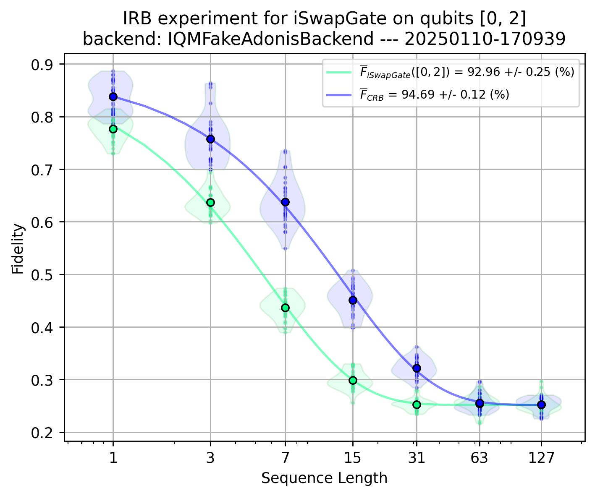
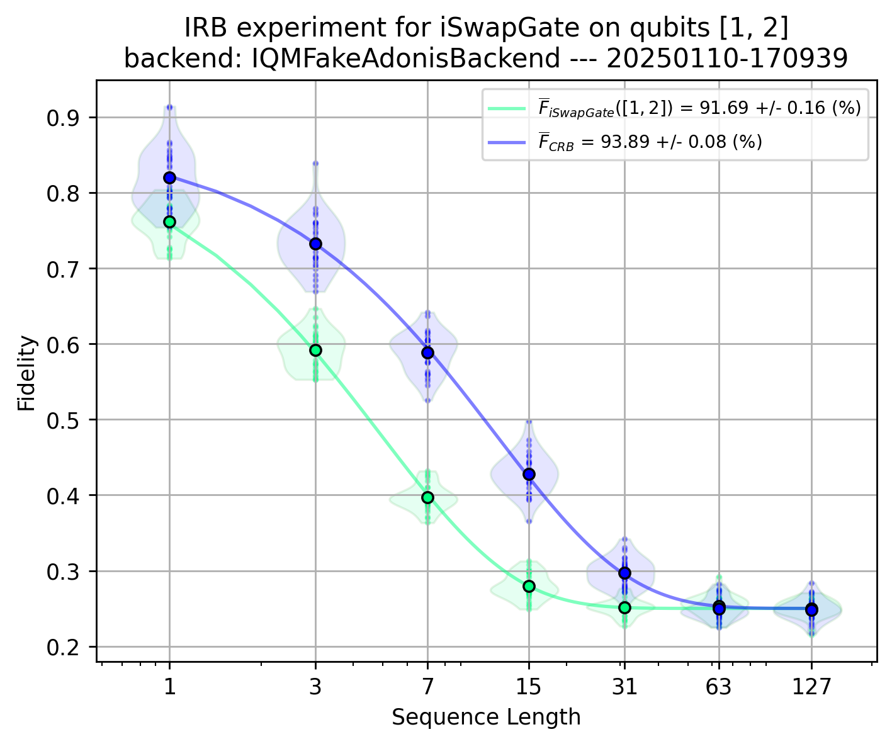
Mirror Randomized Benchmarking#
from iqm.benchmarks.randomized_benchmarking.mirror_rb.mirror_rb import *
EXAMPLE_MRB = MirrorRBConfiguration(
qubits_array=[[0,2],
[0,1,2]],
# [0,1,2,3],
# [0,1,2,3,4]],
#[0,1,3,4,8,9,13,14]],
# [0,1,3,4,8,9,13,14,17,18],
# [0,1,3,4,8,9,13,14,17,18,2,7],
# [0,1,3,4,8,9,13,14,17,18,2,7,5,10],
# [0,1,3,4,8,9,13,14,17,18,2,7,5,10,6,11]],
# [0,1,3,4,8,9,13,14,17,18,2,7,5,10,6,11,15,16],
# [0,1,3,4,8,9,13,14,17,18,2,7,5,10,6,11,15,16,12,19]],
depths_array=[[2**m for m in range(9)],
[2**m for m in range(8)]],
# [2**m for m in range(7)],
# [2**m for m in range(6)]],
# [2**(m+1)-1 for m in range(6)],
# [2**(m+1)-1 for m in range(6)],
# [2**(m+1)-1 for m in range(5)],
# [2**(m+1)-1 for m in range(5)],
# [2**(m+1)-1 for m in range(4)],
# [2**(m+1)-1 for m in range(4)]],
num_circuit_samples=10,
num_pauli_samples=5,
shots=2**8,
qiskit_optim_level=1,
routing_method="sabre",
two_qubit_gate_ensemble={"CZGate": 0.8, "iSwapGate": 0.2},
density_2q_gates=0.25,
calset_id=None,
)
benchmark_mrb = MirrorRandomizedBenchmarking(backend, EXAMPLE_MRB)
run_mrb = benchmark_mrb.run()
2025-01-10 17:16:09,984 - iqm.benchmarks.logging_config - INFO - Executing MRB on qubits [0, 2]. Will generate and submit all 10x5 MRB circuits for each depth [2, 4, 8, 16, 32, 64, 128, 256, 512]
2025-01-10 17:16:09,984 - iqm.benchmarks.logging_config - INFO - Depth 2 - Generating all circuits
2025-01-10 17:16:14,481 - iqm.benchmarks.logging_config - INFO - Submitting batch with 50 circuits corresponding to qubits [0, 2]
2025-01-10 17:16:14,496 - iqm.benchmarks.logging_config - INFO - Job for layout [0, 2] & depth 2 submitted successfully!
2025-01-10 17:16:14,547 - iqm.benchmarks.logging_config - INFO - Depth 4 - Generating all circuits
2025-01-10 17:16:19,090 - iqm.benchmarks.logging_config - INFO - Submitting batch with 50 circuits corresponding to qubits [0, 2]
2025-01-10 17:16:19,109 - iqm.benchmarks.logging_config - INFO - Job for layout [0, 2] & depth 4 submitted successfully!
2025-01-10 17:16:19,165 - iqm.benchmarks.logging_config - INFO - Depth 8 - Generating all circuits
2025-01-10 17:16:23,775 - iqm.benchmarks.logging_config - INFO - Submitting batch with 50 circuits corresponding to qubits [0, 2]
2025-01-10 17:16:23,802 - iqm.benchmarks.logging_config - INFO - Job for layout [0, 2] & depth 8 submitted successfully!
2025-01-10 17:16:23,881 - iqm.benchmarks.logging_config - INFO - Depth 16 - Generating all circuits
2025-01-10 17:16:28,733 - iqm.benchmarks.logging_config - INFO - Submitting batch with 50 circuits corresponding to qubits [0, 2]
2025-01-10 17:16:28,779 - iqm.benchmarks.logging_config - INFO - Job for layout [0, 2] & depth 16 submitted successfully!
2025-01-10 17:16:28,817 - iqm.benchmarks.logging_config - INFO - Depth 32 - Generating all circuits
2025-01-10 17:33:23,387 - iqm.benchmarks.logging_config - INFO - Submitting batch with 50 circuits corresponding to qubits [0, 2]
2025-01-10 17:33:23,464 - iqm.benchmarks.logging_config - INFO - Job for layout [0, 2] & depth 32 submitted successfully!
2025-01-10 17:33:23,533 - iqm.benchmarks.logging_config - INFO - Depth 64 - Generating all circuits
2025-01-10 17:33:30,246 - iqm.benchmarks.logging_config - INFO - Submitting batch with 50 circuits corresponding to qubits [0, 2]
2025-01-10 17:33:30,400 - iqm.benchmarks.logging_config - INFO - Job for layout [0, 2] & depth 64 submitted successfully!
2025-01-10 17:33:30,469 - iqm.benchmarks.logging_config - INFO - Depth 128 - Generating all circuits
2025-01-10 17:33:39,442 - iqm.benchmarks.logging_config - INFO - Submitting batch with 50 circuits corresponding to qubits [0, 2]
2025-01-10 17:33:39,729 - iqm.benchmarks.logging_config - INFO - Job for layout [0, 2] & depth 128 submitted successfully!
2025-01-10 17:33:39,798 - iqm.benchmarks.logging_config - INFO - Depth 256 - Generating all circuits
2025-01-10 17:33:53,114 - iqm.benchmarks.logging_config - INFO - Submitting batch with 50 circuits corresponding to qubits [0, 2]
2025-01-10 17:33:53,647 - iqm.benchmarks.logging_config - INFO - Job for layout [0, 2] & depth 256 submitted successfully!
2025-01-10 17:33:53,673 - iqm.benchmarks.logging_config - INFO - Depth 512 - Generating all circuits
2025-01-10 18:01:55,369 - iqm.benchmarks.logging_config - INFO - Submitting batch with 50 circuits corresponding to qubits [0, 2]
2025-01-10 18:01:56,439 - iqm.benchmarks.logging_config - INFO - Job for layout [0, 2] & depth 512 submitted successfully!
2025-01-10 18:01:56,491 - iqm.benchmarks.logging_config - INFO - Executing MRB on qubits [0, 1, 2]. Will generate and submit all 10x5 MRB circuits for each depth [2, 4, 8, 16, 32, 64, 128, 256]
2025-01-10 18:01:56,542 - iqm.benchmarks.logging_config - INFO - Depth 2 - Generating all circuits
2025-01-10 18:02:03,983 - iqm.benchmarks.logging_config - INFO - Submitting batch with 50 circuits corresponding to qubits [0, 1, 2]
2025-01-10 18:02:04,003 - iqm.benchmarks.logging_config - INFO - Job for layout [0, 1, 2] & depth 2 submitted successfully!
2025-01-10 18:02:04,029 - iqm.benchmarks.logging_config - INFO - Depth 4 - Generating all circuits
2025-01-10 18:02:10,066 - iqm.benchmarks.logging_config - INFO - Submitting batch with 50 circuits corresponding to qubits [0, 1, 2]
2025-01-10 18:02:10,092 - iqm.benchmarks.logging_config - INFO - Job for layout [0, 1, 2] & depth 4 submitted successfully!
2025-01-10 18:02:10,181 - iqm.benchmarks.logging_config - INFO - Depth 8 - Generating all circuits
2025-01-10 18:02:15,579 - iqm.benchmarks.logging_config - INFO - Submitting batch with 50 circuits corresponding to qubits [0, 1, 2]
2025-01-10 18:02:15,613 - iqm.benchmarks.logging_config - INFO - Job for layout [0, 1, 2] & depth 8 submitted successfully!
2025-01-10 18:02:15,651 - iqm.benchmarks.logging_config - INFO - Depth 16 - Generating all circuits
2025-01-10 18:02:21,631 - iqm.benchmarks.logging_config - INFO - Submitting batch with 50 circuits corresponding to qubits [0, 1, 2]
2025-01-10 18:02:21,692 - iqm.benchmarks.logging_config - INFO - Job for layout [0, 1, 2] & depth 16 submitted successfully!
2025-01-10 18:02:21,704 - iqm.benchmarks.logging_config - INFO - Depth 32 - Generating all circuits
2025-01-10 18:02:28,200 - iqm.benchmarks.logging_config - INFO - Submitting batch with 50 circuits corresponding to qubits [0, 1, 2]
2025-01-10 18:02:28,305 - iqm.benchmarks.logging_config - INFO - Job for layout [0, 1, 2] & depth 32 submitted successfully!
2025-01-10 18:02:28,375 - iqm.benchmarks.logging_config - INFO - Depth 64 - Generating all circuits
2025-01-10 18:02:36,457 - iqm.benchmarks.logging_config - INFO - Submitting batch with 50 circuits corresponding to qubits [0, 1, 2]
2025-01-10 18:02:36,661 - iqm.benchmarks.logging_config - INFO - Job for layout [0, 1, 2] & depth 64 submitted successfully!
2025-01-10 18:02:36,723 - iqm.benchmarks.logging_config - INFO - Depth 128 - Generating all circuits
2025-01-10 18:04:26,878 - iqm.benchmarks.logging_config - INFO - Submitting batch with 50 circuits corresponding to qubits [0, 1, 2]
2025-01-10 18:04:27,266 - iqm.benchmarks.logging_config - INFO - Job for layout [0, 1, 2] & depth 128 submitted successfully!
2025-01-10 18:04:27,292 - iqm.benchmarks.logging_config - INFO - Depth 256 - Generating all circuits
2025-01-10 18:04:45,123 - iqm.benchmarks.logging_config - INFO - Submitting batch with 50 circuits corresponding to qubits [0, 1, 2]
2025-01-10 18:04:45,891 - iqm.benchmarks.logging_config - INFO - Job for layout [0, 1, 2] & depth 256 submitted successfully!
2025-01-10 18:04:45,929 - iqm.benchmarks.logging_config - INFO - Retrieving all counts for qubits_[0, 2]_depth_2
2025-01-10 18:04:45,991 - iqm.benchmarks.logging_config - INFO - Adding counts of qubits [0, 2] and depth 2 run to the dataset
2025-01-10 18:04:47,567 - iqm.benchmarks.logging_config - INFO - Retrieving all counts for qubits_[0, 2]_depth_4
2025-01-10 18:04:47,567 - iqm.benchmarks.logging_config - INFO - Adding counts of qubits [0, 2] and depth 4 run to the dataset
2025-01-10 18:04:47,651 - iqm.benchmarks.logging_config - INFO - Retrieving all counts for qubits_[0, 2]_depth_8
2025-01-10 18:04:47,652 - iqm.benchmarks.logging_config - INFO - Adding counts of qubits [0, 2] and depth 8 run to the dataset
2025-01-10 18:04:47,733 - iqm.benchmarks.logging_config - INFO - Retrieving all counts for qubits_[0, 2]_depth_16
2025-01-10 18:04:47,733 - iqm.benchmarks.logging_config - INFO - Adding counts of qubits [0, 2] and depth 16 run to the dataset
2025-01-10 18:04:47,821 - iqm.benchmarks.logging_config - INFO - Retrieving all counts for qubits_[0, 2]_depth_32
2025-01-10 18:04:47,822 - iqm.benchmarks.logging_config - INFO - Adding counts of qubits [0, 2] and depth 32 run to the dataset
2025-01-10 18:04:47,923 - iqm.benchmarks.logging_config - INFO - Retrieving all counts for qubits_[0, 2]_depth_64
2025-01-10 18:04:47,924 - iqm.benchmarks.logging_config - INFO - Adding counts of qubits [0, 2] and depth 64 run to the dataset
2025-01-10 18:04:48,040 - iqm.benchmarks.logging_config - INFO - Retrieving all counts for qubits_[0, 2]_depth_128
2025-01-10 18:04:48,040 - iqm.benchmarks.logging_config - INFO - Adding counts of qubits [0, 2] and depth 128 run to the dataset
2025-01-10 18:04:48,174 - iqm.benchmarks.logging_config - INFO - Retrieving all counts for qubits_[0, 2]_depth_256
2025-01-10 18:04:48,175 - iqm.benchmarks.logging_config - INFO - Adding counts of qubits [0, 2] and depth 256 run to the dataset
2025-01-10 18:04:48,330 - iqm.benchmarks.logging_config - INFO - Retrieving all counts for qubits_[0, 2]_depth_512
2025-01-10 18:04:48,331 - iqm.benchmarks.logging_config - INFO - Adding counts of qubits [0, 2] and depth 512 run to the dataset
2025-01-10 18:04:48,514 - iqm.benchmarks.logging_config - INFO - Retrieving all counts for qubits_[0, 1, 2]_depth_2
2025-01-10 18:04:48,515 - iqm.benchmarks.logging_config - INFO - Adding counts of qubits [0, 1, 2] and depth 2 run to the dataset
2025-01-10 18:04:48,720 - iqm.benchmarks.logging_config - INFO - Retrieving all counts for qubits_[0, 1, 2]_depth_4
2025-01-10 18:04:48,721 - iqm.benchmarks.logging_config - INFO - Adding counts of qubits [0, 1, 2] and depth 4 run to the dataset
2025-01-10 18:04:48,953 - iqm.benchmarks.logging_config - INFO - Retrieving all counts for qubits_[0, 1, 2]_depth_8
2025-01-10 18:04:48,953 - iqm.benchmarks.logging_config - INFO - Adding counts of qubits [0, 1, 2] and depth 8 run to the dataset
2025-01-10 18:04:49,218 - iqm.benchmarks.logging_config - INFO - Retrieving all counts for qubits_[0, 1, 2]_depth_16
2025-01-10 18:04:49,219 - iqm.benchmarks.logging_config - INFO - Adding counts of qubits [0, 1, 2] and depth 16 run to the dataset
2025-01-10 18:04:49,520 - iqm.benchmarks.logging_config - INFO - Retrieving all counts for qubits_[0, 1, 2]_depth_32
2025-01-10 18:04:49,521 - iqm.benchmarks.logging_config - INFO - Adding counts of qubits [0, 1, 2] and depth 32 run to the dataset
2025-01-10 18:04:49,857 - iqm.benchmarks.logging_config - INFO - Retrieving all counts for qubits_[0, 1, 2]_depth_64
2025-01-10 18:04:49,858 - iqm.benchmarks.logging_config - INFO - Adding counts of qubits [0, 1, 2] and depth 64 run to the dataset
2025-01-10 18:04:50,242 - iqm.benchmarks.logging_config - INFO - Retrieving all counts for qubits_[0, 1, 2]_depth_128
2025-01-10 18:04:50,243 - iqm.benchmarks.logging_config - INFO - Adding counts of qubits [0, 1, 2] and depth 128 run to the dataset
2025-01-10 18:04:50,670 - iqm.benchmarks.logging_config - INFO - Retrieving all counts for qubits_[0, 1, 2]_depth_256
2025-01-10 18:04:50,671 - iqm.benchmarks.logging_config - INFO - Adding counts of qubits [0, 1, 2] and depth 256 run to the dataset
2025-01-10 18:04:51,147 - iqm.benchmarks.logging_config - INFO - MRB experiment execution concluded !
result_mrb = benchmark_mrb.analyze()
2025-01-10 18:04:51,246 - iqm.benchmarks.logging_config - INFO - Post-processing MRB for qubits [0, 2]
2025-01-10 18:04:51,283 - iqm.benchmarks.logging_config - INFO - Depth 2
2025-01-10 18:04:51,283 - iqm.benchmarks.logging_config - INFO - Getting simulation counts
2025-01-10 18:04:51,374 - iqm.benchmarks.logging_config - INFO - Depth 4
2025-01-10 18:04:51,374 - iqm.benchmarks.logging_config - INFO - Getting simulation counts
2025-01-10 18:04:51,460 - iqm.benchmarks.logging_config - INFO - Depth 8
2025-01-10 18:04:51,460 - iqm.benchmarks.logging_config - INFO - Getting simulation counts
2025-01-10 18:04:51,542 - iqm.benchmarks.logging_config - INFO - Depth 16
2025-01-10 18:04:51,542 - iqm.benchmarks.logging_config - INFO - Getting simulation counts
2025-01-10 18:04:51,626 - iqm.benchmarks.logging_config - INFO - Depth 32
2025-01-10 18:04:51,626 - iqm.benchmarks.logging_config - INFO - Getting simulation counts
2025-01-10 18:04:51,706 - iqm.benchmarks.logging_config - INFO - Depth 64
2025-01-10 18:04:51,706 - iqm.benchmarks.logging_config - INFO - Getting simulation counts
2025-01-10 18:04:51,788 - iqm.benchmarks.logging_config - INFO - Depth 128
2025-01-10 18:04:51,789 - iqm.benchmarks.logging_config - INFO - Getting simulation counts
2025-01-10 18:04:51,882 - iqm.benchmarks.logging_config - INFO - Depth 256
2025-01-10 18:04:51,882 - iqm.benchmarks.logging_config - INFO - Getting simulation counts
2025-01-10 18:04:51,962 - iqm.benchmarks.logging_config - INFO - Depth 512
2025-01-10 18:04:51,962 - iqm.benchmarks.logging_config - INFO - Getting simulation counts
2025-01-10 18:04:52,026 - iqm.benchmarks.logging_config - INFO - Post-processing MRB for qubits [0, 1, 2]
2025-01-10 18:04:52,067 - iqm.benchmarks.logging_config - INFO - Depth 2
2025-01-10 18:04:52,067 - iqm.benchmarks.logging_config - INFO - Getting simulation counts
2025-01-10 18:04:52,163 - iqm.benchmarks.logging_config - INFO - Depth 4
2025-01-10 18:04:52,164 - iqm.benchmarks.logging_config - INFO - Getting simulation counts
2025-01-10 18:04:52,259 - iqm.benchmarks.logging_config - INFO - Depth 8
2025-01-10 18:04:52,260 - iqm.benchmarks.logging_config - INFO - Getting simulation counts
2025-01-10 18:04:52,356 - iqm.benchmarks.logging_config - INFO - Depth 16
2025-01-10 18:04:52,356 - iqm.benchmarks.logging_config - INFO - Getting simulation counts
2025-01-10 18:04:52,458 - iqm.benchmarks.logging_config - INFO - Depth 32
2025-01-10 18:04:52,458 - iqm.benchmarks.logging_config - INFO - Getting simulation counts
2025-01-10 18:04:52,557 - iqm.benchmarks.logging_config - INFO - Depth 64
2025-01-10 18:04:52,557 - iqm.benchmarks.logging_config - INFO - Getting simulation counts
2025-01-10 18:04:52,658 - iqm.benchmarks.logging_config - INFO - Depth 128
2025-01-10 18:04:52,658 - iqm.benchmarks.logging_config - INFO - Getting simulation counts
2025-01-10 18:04:52,756 - iqm.benchmarks.logging_config - INFO - Depth 256
2025-01-10 18:04:52,756 - iqm.benchmarks.logging_config - INFO - Getting simulation counts
result_mrb.plots
{'[0, 2]': <Figure size 1600x1200 with 1 Axes>,
'[0, 1, 2]': <Figure size 1600x1200 with 1 Axes>,
'all_qubit_layouts': <Figure size 1600x1200 with 1 Axes>}
key_mrb_plot = "all_qubit_layouts"
result_mrb.plot(key_mrb_plot)
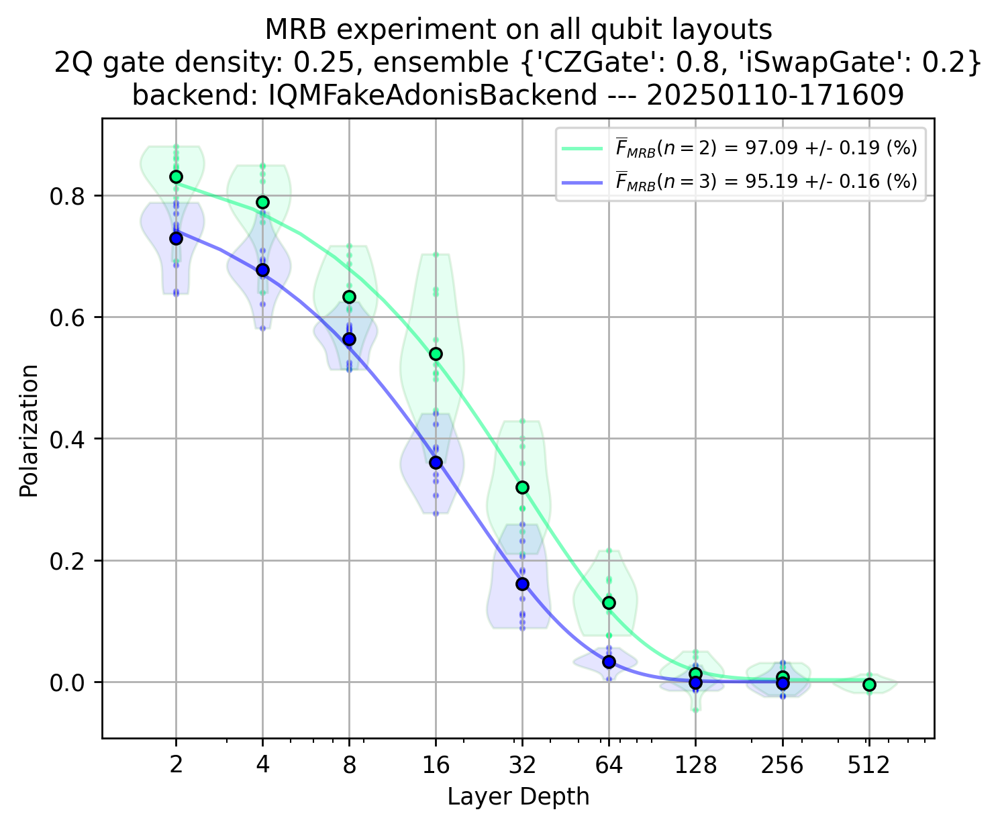
Quantum Volume#
from iqm.benchmarks.quantum_volume.quantum_volume import *
EXAMPLE_QV = QuantumVolumeConfiguration(
num_circuits=500,
shots=2**8,
calset_id=None,
num_sigmas=2,
choose_qubits_routine="custom",
custom_qubits_array=[[0,1,2,3], [0,1,2,3,4]],#, [0,1,3,4,5]],
qiskit_optim_level=3,
optimize_sqg=True,
max_gates_per_batch=60_000,
rem=True,
mit_shots=1_000,
)
benchmark_qv = QuantumVolumeBenchmark(backend, EXAMPLE_QV)
run0_qv = benchmark_qv.run()
2025-01-10 18:04:53,115 - iqm.benchmarks.logging_config - INFO - Executing QV on qubits [0, 1, 2, 3]
2025-01-10 18:04:53,365 - iqm.benchmarks.logging_config - INFO - Successfully generated all 500 circuits to be executed
2025-01-10 18:04:53,366 - iqm.benchmarks.logging_config - INFO - Will transpile according to "fixed" physical layout
2025-01-10 18:04:53,367 - iqm.benchmarks.logging_config - INFO - Transpiling for backend IQMFakeAdonisBackend with optimization level 3, sabre routing method and SQG optimization all circuits
2025-01-10 18:05:04,219 - iqm.benchmarks.logging_config - INFO - Submitting batch with 500 circuits corresponding to qubits [0, 1, 2, 3]
2025-01-10 18:05:04,234 - iqm.benchmarks.logging_config - INFO - max_gates_per_batch restriction: submitting subbatch #1 with 500 circuits corresponding to qubits [0, 1, 2, 3]
2025-01-10 18:05:04,562 - iqm.benchmarks.logging_config - INFO - Job for layout [0, 1, 2, 3] submitted successfully!
2025-01-10 18:05:04,588 - iqm.benchmarks.logging_config - INFO - Executing QV on qubits [0, 1, 2, 3, 4]
2025-01-10 18:05:05,093 - iqm.benchmarks.logging_config - INFO - Successfully generated all 500 circuits to be executed
2025-01-10 18:05:05,162 - iqm.benchmarks.logging_config - INFO - Will transpile according to "fixed" physical layout
2025-01-10 18:05:05,181 - iqm.benchmarks.logging_config - INFO - Transpiling for backend IQMFakeAdonisBackend with optimization level 3, sabre routing method and SQG optimization all circuits
2025-01-10 18:05:19,006 - iqm.benchmarks.logging_config - INFO - Submitting batch with 500 circuits corresponding to qubits [0, 1, 2, 3, 4]
2025-01-10 18:05:19,023 - iqm.benchmarks.logging_config - INFO - max_gates_per_batch restriction: submitting subbatch #1 with 500 circuits corresponding to qubits [0, 1, 2, 3, 4]
2025-01-10 18:05:19,446 - iqm.benchmarks.logging_config - INFO - Job for layout [0, 1, 2, 3, 4] submitted successfully!
2025-01-10 18:05:19,515 - iqm.benchmarks.logging_config - INFO - Retrieving all counts for [0, 1, 2, 3]
2025-01-10 18:05:19,542 - iqm.benchmarks.logging_config - INFO - Adding counts of [0, 1, 2, 3] run to the dataset
2025-01-10 18:05:22,420 - iqm.benchmarks.logging_config - INFO - Retrieving all counts for [0, 1, 2, 3, 4]
2025-01-10 18:05:22,434 - iqm.benchmarks.logging_config - INFO - Adding counts of [0, 1, 2, 3, 4] run to the dataset
2025-01-10 18:05:24,587 - iqm.benchmarks.logging_config - INFO - QV experiment execution concluded !
result0_qv = benchmark_qv.analyze()
2025-01-10 18:05:24,698 - iqm.benchmarks.logging_config - INFO - Noiseless simulation and post-processing for layout [0, 1, 2, 3]
2025-01-10 18:05:25,413 - iqm.benchmarks.logging_config - INFO - Noiseless simulation and post-processing for layout [0, 1, 2, 3, 4]
2025-01-10 18:05:26,174 - iqm.benchmarks.logging_config - INFO - REM post-processing for layout [0, 1, 2, 3] with 1000 shots
2025-01-10 18:05:26,208 - iqm.benchmarks.logging_config - INFO - REM post-processing for layout [0, 1, 2, 3, 4] with 1000 shots
#run1_qv = benchmark_qv.run()
#result1_qv = benchmark.analyze(run_index=0)
for v in result0_qv.plots.values():
display(v)
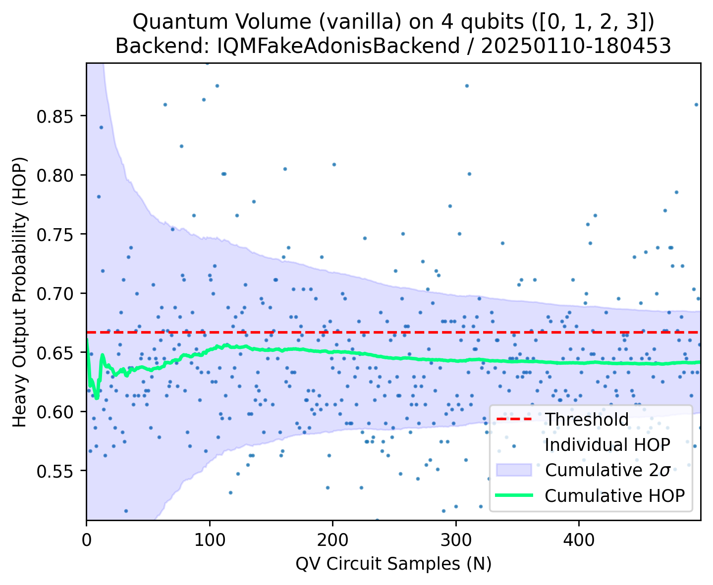
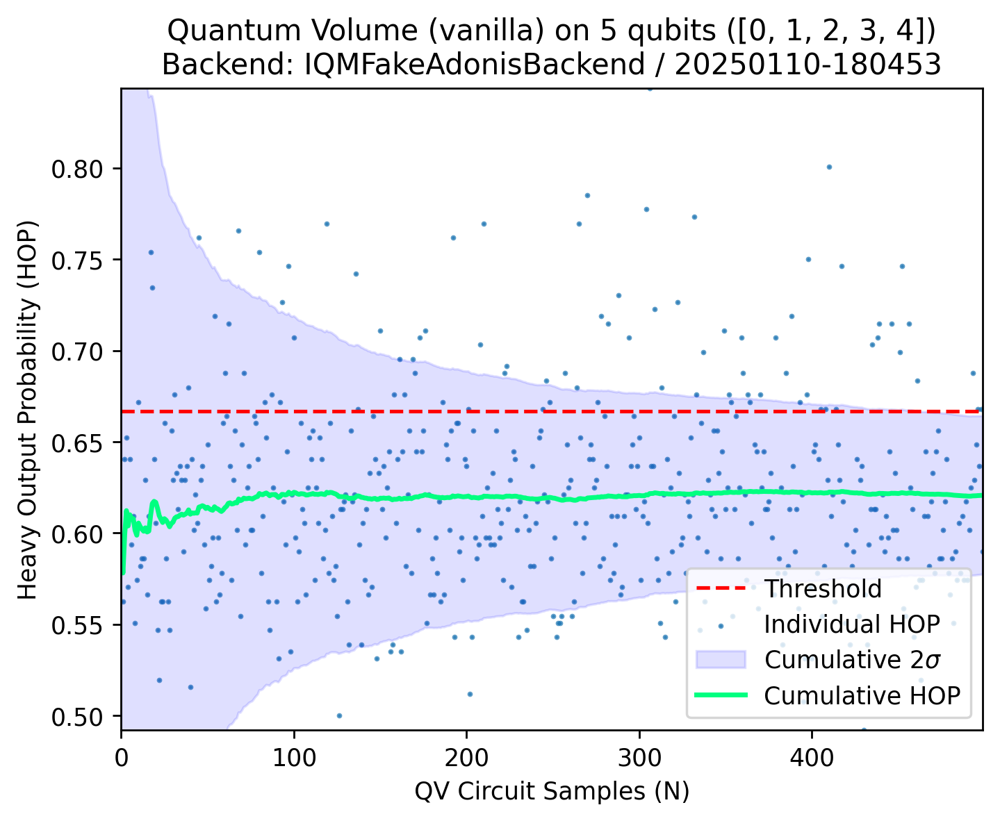
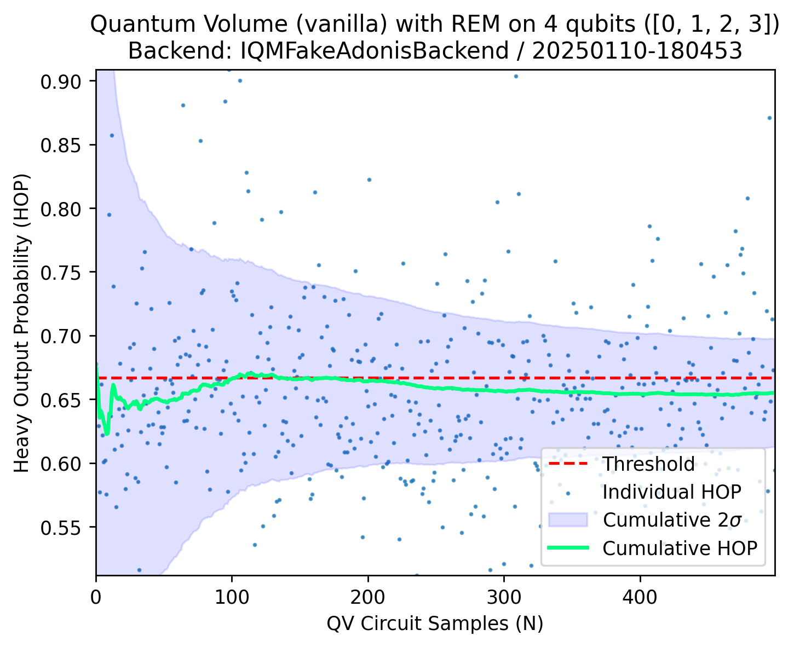
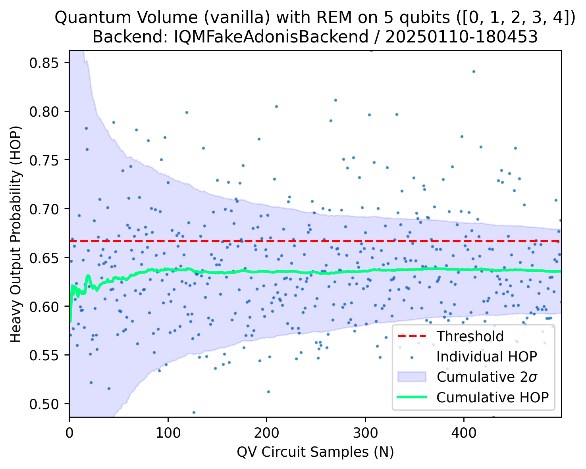
CLOPS#
from iqm.benchmarks.quantum_volume.clops import *
EXAMPLE_CLOPS = CLOPSConfiguration(
qubits=[0,1,2,3,4],
num_circuits=100, # By definition set to 100
num_updates=10, # By definition set to 10
num_shots=100, # By definition set to 100
calset_id=None,
clops_h_bool=True,
qiskit_optim_level=3,
optimize_sqg=True,
routing_method="sabre",
physical_layout="fixed",
)
benchmark_clops = CLOPSBenchmark(backend, EXAMPLE_CLOPS)
run_clops = benchmark_clops.run()
2025-01-10 18:05:26,723 - iqm.benchmarks.logging_config - INFO - NB: CLOPS should be estimated with same qubit layout and optional inputs used to establish QV!
2025-01-10 18:05:26,723 - iqm.benchmarks.logging_config - INFO - Now generating 100 parametrized circuit templates on qubits [0, 1, 2, 3, 4]
2025-01-10 18:05:26,865 - iqm.benchmarks.logging_config - INFO - Will transpile all 100 circuits according to "fixed" physical layout
2025-01-10 18:05:26,865 - iqm.benchmarks.logging_config - INFO - Transpiling for backend IQMFakeAdonisBackend with optimization level 3, sabre routing method and SQG optimization all circuits
2025-01-10 18:05:32,033 - iqm.benchmarks.logging_config - INFO - CLOPS time started
2025-01-10 18:05:32,034 - iqm.benchmarks.logging_config - INFO - Update 1/10
Assigning random parameters to all 100 circuits
2025-01-10 18:05:33,673 - iqm.benchmarks.logging_config - INFO - Executing the corresponding circuit batch
2025-01-10 18:05:33,673 - iqm.benchmarks.logging_config - INFO - Submitting batch with 100 circuits corresponding to qubits [0, 1, 2, 3, 4]
2025-01-10 18:05:33,776 - iqm.benchmarks.logging_config - INFO - Retrieving counts
2025-01-10 18:05:33,814 - iqm.benchmarks.logging_config - INFO - Retrieving all counts
2025-01-10 18:05:34,213 - iqm.benchmarks.logging_config - INFO - Update 2/10
Assigning random parameters to all 100 circuits
2025-01-10 18:05:35,800 - iqm.benchmarks.logging_config - INFO - Executing the corresponding circuit batch
2025-01-10 18:05:35,800 - iqm.benchmarks.logging_config - INFO - Submitting batch with 100 circuits corresponding to qubits [0, 1, 2, 3, 4]
2025-01-10 18:05:35,891 - iqm.benchmarks.logging_config - INFO - Retrieving counts
2025-01-10 18:05:35,959 - iqm.benchmarks.logging_config - INFO - Retrieving all counts
2025-01-10 18:05:36,321 - iqm.benchmarks.logging_config - INFO - Update 3/10
Assigning random parameters to all 100 circuits
2025-01-10 18:05:37,887 - iqm.benchmarks.logging_config - INFO - Executing the corresponding circuit batch
2025-01-10 18:05:37,887 - iqm.benchmarks.logging_config - INFO - Submitting batch with 100 circuits corresponding to qubits [0, 1, 2, 3, 4]
2025-01-10 18:05:37,986 - iqm.benchmarks.logging_config - INFO - Retrieving counts
2025-01-10 18:05:38,024 - iqm.benchmarks.logging_config - INFO - Retrieving all counts
2025-01-10 18:05:38,413 - iqm.benchmarks.logging_config - INFO - Update 4/10
Assigning random parameters to all 100 circuits
2025-01-10 18:05:39,986 - iqm.benchmarks.logging_config - INFO - Executing the corresponding circuit batch
2025-01-10 18:05:39,986 - iqm.benchmarks.logging_config - INFO - Submitting batch with 100 circuits corresponding to qubits [0, 1, 2, 3, 4]
2025-01-10 18:05:40,086 - iqm.benchmarks.logging_config - INFO - Retrieving counts
2025-01-10 18:05:40,155 - iqm.benchmarks.logging_config - INFO - Retrieving all counts
2025-01-10 18:05:40,516 - iqm.benchmarks.logging_config - INFO - Update 5/10
Assigning random parameters to all 100 circuits
2025-01-10 18:05:42,076 - iqm.benchmarks.logging_config - INFO - Executing the corresponding circuit batch
2025-01-10 18:05:42,076 - iqm.benchmarks.logging_config - INFO - Submitting batch with 100 circuits corresponding to qubits [0, 1, 2, 3, 4]
2025-01-10 18:05:42,178 - iqm.benchmarks.logging_config - INFO - Retrieving counts
2025-01-10 18:05:42,247 - iqm.benchmarks.logging_config - INFO - Retrieving all counts
2025-01-10 18:05:42,608 - iqm.benchmarks.logging_config - INFO - Update 6/10
Assigning random parameters to all 100 circuits
2025-01-10 18:05:44,178 - iqm.benchmarks.logging_config - INFO - Executing the corresponding circuit batch
2025-01-10 18:05:44,178 - iqm.benchmarks.logging_config - INFO - Submitting batch with 100 circuits corresponding to qubits [0, 1, 2, 3, 4]
2025-01-10 18:05:44,278 - iqm.benchmarks.logging_config - INFO - Retrieving counts
2025-01-10 18:05:44,347 - iqm.benchmarks.logging_config - INFO - Retrieving all counts
2025-01-10 18:05:44,707 - iqm.benchmarks.logging_config - INFO - Update 7/10
Assigning random parameters to all 100 circuits
2025-01-10 18:05:46,265 - iqm.benchmarks.logging_config - INFO - Executing the corresponding circuit batch
2025-01-10 18:05:46,265 - iqm.benchmarks.logging_config - INFO - Submitting batch with 100 circuits corresponding to qubits [0, 1, 2, 3, 4]
2025-01-10 18:05:46,365 - iqm.benchmarks.logging_config - INFO - Retrieving counts
2025-01-10 18:05:46,434 - iqm.benchmarks.logging_config - INFO - Retrieving all counts
2025-01-10 18:05:46,790 - iqm.benchmarks.logging_config - INFO - Update 8/10
Assigning random parameters to all 100 circuits
2025-01-10 18:05:48,358 - iqm.benchmarks.logging_config - INFO - Executing the corresponding circuit batch
2025-01-10 18:05:48,359 - iqm.benchmarks.logging_config - INFO - Submitting batch with 100 circuits corresponding to qubits [0, 1, 2, 3, 4]
2025-01-10 18:05:48,458 - iqm.benchmarks.logging_config - INFO - Retrieving counts
2025-01-10 18:05:48,526 - iqm.benchmarks.logging_config - INFO - Retrieving all counts
2025-01-10 18:05:48,884 - iqm.benchmarks.logging_config - INFO - Update 9/10
Assigning random parameters to all 100 circuits
2025-01-10 18:05:50,453 - iqm.benchmarks.logging_config - INFO - Executing the corresponding circuit batch
2025-01-10 18:05:50,454 - iqm.benchmarks.logging_config - INFO - Submitting batch with 100 circuits corresponding to qubits [0, 1, 2, 3, 4]
2025-01-10 18:05:50,554 - iqm.benchmarks.logging_config - INFO - Retrieving counts
2025-01-10 18:05:50,623 - iqm.benchmarks.logging_config - INFO - Retrieving all counts
2025-01-10 18:05:50,979 - iqm.benchmarks.logging_config - INFO - Update 10/10
Assigning random parameters to all 100 circuits
2025-01-10 18:05:52,552 - iqm.benchmarks.logging_config - INFO - Executing the corresponding circuit batch
2025-01-10 18:05:52,552 - iqm.benchmarks.logging_config - INFO - Submitting batch with 100 circuits corresponding to qubits [0, 1, 2, 3, 4]
2025-01-10 18:05:52,652 - iqm.benchmarks.logging_config - INFO - Retrieving counts
2025-01-10 18:05:52,721 - iqm.benchmarks.logging_config - INFO - Retrieving all counts
result_clops = benchmark_clops.analyze()
2025-01-10 18:05:53,230 - iqm.benchmarks.logging_config - INFO - Counting the number of parallel 2Q layer depths in each circuit
2025-01-10 18:05:53,652 - iqm.benchmarks.logging_config - INFO - There is no elapsed-time data associated to jobs (e.g., execution on simulator)
result_clops.plot_all()
GHZ state fidelity#
from iqm.benchmarks.entanglement.ghz import *
MINIMAL_GHZ = GHZConfiguration(
state_generation_routine="tree",
custom_qubits_array=[
[0,2],
[0,1,2],
[0,1,2,4],
[0,1,2,3,4],
],
shots=1000,
fidelity_routine="coherences",
rem=True,
mit_shots=1000,
)
benchmark_ghz = GHZBenchmark(backend, MINIMAL_GHZ)
run_ghz = benchmark_ghz.run()
2025-01-10 18:05:53,745 - iqm.benchmarks.logging_config - INFO - Now generating a 2-qubit GHZ state on qubits [0, 2]
2025-01-10 18:05:53,747 - iqm.benchmarks.logging_config - INFO - Transpiling for backend IQMFakeAdonisBackend with optimization level 3, sabre routing method and SQG optimization all circuits
2025-01-10 18:05:53,753 - iqm.benchmarks.logging_config - INFO - Transpiling for backend IQMFakeAdonisBackend with optimization level 3, sabre routing method and SQG optimization all circuits
2025-01-10 18:05:53,791 - iqm.benchmarks.logging_config - INFO - Submitting batch with 7 circuits corresponding to qubits [0, 2]
2025-01-10 18:05:53,792 - iqm.benchmarks.logging_config - INFO - Now generating a 3-qubit GHZ state on qubits [0, 1, 2]
2025-01-10 18:05:53,826 - iqm.benchmarks.logging_config - INFO - Transpiling for backend IQMFakeAdonisBackend with optimization level 3, sabre routing method and SQG optimization all circuits
2025-01-10 18:05:53,833 - iqm.benchmarks.logging_config - INFO - Transpiling for backend IQMFakeAdonisBackend with optimization level 3, sabre routing method and SQG optimization all circuits
2025-01-10 18:05:53,897 - iqm.benchmarks.logging_config - INFO - Submitting batch with 9 circuits corresponding to qubits [0, 1, 2]
2025-01-10 18:05:53,900 - iqm.benchmarks.logging_config - INFO - Now generating a 4-qubit GHZ state on qubits [0, 1, 2, 4]
2025-01-10 18:05:53,941 - iqm.benchmarks.logging_config - INFO - Transpiling for backend IQMFakeAdonisBackend with optimization level 3, sabre routing method and SQG optimization all circuits
2025-01-10 18:05:53,950 - iqm.benchmarks.logging_config - INFO - Transpiling for backend IQMFakeAdonisBackend with optimization level 3, sabre routing method and SQG optimization all circuits
2025-01-10 18:05:54,045 - iqm.benchmarks.logging_config - INFO - Submitting batch with 11 circuits corresponding to qubits [0, 1, 2, 4]
2025-01-10 18:05:54,049 - iqm.benchmarks.logging_config - INFO - Now generating a 5-qubit GHZ state on qubits [0, 1, 2, 3, 4]
2025-01-10 18:05:54,099 - iqm.benchmarks.logging_config - INFO - Transpiling for backend IQMFakeAdonisBackend with optimization level 3, sabre routing method and SQG optimization all circuits
2025-01-10 18:05:54,108 - iqm.benchmarks.logging_config - INFO - Transpiling for backend IQMFakeAdonisBackend with optimization level 3, sabre routing method and SQG optimization all circuits
2025-01-10 18:05:54,231 - iqm.benchmarks.logging_config - INFO - Submitting batch with 13 circuits corresponding to qubits [0, 1, 2, 3, 4]
2025-01-10 18:05:54,238 - iqm.benchmarks.logging_config - INFO - Retrieving counts and adding counts to dataset...
2025-01-10 18:05:54,295 - iqm.benchmarks.logging_config - INFO - Retrieving all counts
2025-01-10 18:05:54,306 - iqm.benchmarks.logging_config - INFO - Applying readout error mitigation
2025-01-10 18:05:54,347 - iqm.benchmarks.logging_config - INFO - Retrieving all counts
2025-01-10 18:05:54,360 - iqm.benchmarks.logging_config - INFO - Applying readout error mitigation
2025-01-10 18:05:54,406 - iqm.benchmarks.logging_config - INFO - Retrieving all counts
2025-01-10 18:05:54,423 - iqm.benchmarks.logging_config - INFO - Applying readout error mitigation
2025-01-10 18:05:54,475 - iqm.benchmarks.logging_config - INFO - Retrieving all counts
2025-01-10 18:05:54,497 - iqm.benchmarks.logging_config - INFO - Applying readout error mitigation
result = benchmark_ghz.analyze()
# Show observations for a specific qubit layout
qubit_layout = [0,1,2]
for observation in result.observations:
if observation.identifier.string_identifier == str(qubit_layout):
print(f"{observation.name}: {observation.value} +/- {observation.uncertainty}")
# Plot fidelities for all layouts
result.plot_all()
fidelity: 0.8309361141069083 +/- None
fidelity_rem: 0.8897643257271268 +/- None
QScore#
from iqm.benchmarks.optimization.qscore import *
import random
EXAMPLE_QSCORE = QScoreConfiguration(
num_instances = 100,
num_qaoa_layers= 1,
shots = 20_000,
calset_id=None, # calibration set ID, default is None
min_num_nodes = 2,
max_num_nodes = 5,
use_virtual_node = True,
use_classically_optimized_angles = True,
choose_qubits_routine = "custom",
custom_qubits_array=[
[2, 0],
[2, 0, 1],
[2, 0, 1, 3],
[2, 0, 1, 3, 4]],
seed = random.randint(1, 999999),
)
benchmark_qscore = QScoreBenchmark(backend, EXAMPLE_QSCORE)
run_qscore = benchmark_qscore.run()
result_qscore = benchmark_qscore.analyze()
2025-01-10 18:06:08,904 - iqm.benchmarks.logging_config - INFO - Q-Score = 2 passed with approximation ratio (Beta) 0.4767; Avg MaxCut size: 0.4900
2025-01-10 18:06:09,643 - iqm.benchmarks.logging_config - INFO - Q-Score = 3 passed with approximation ratio (Beta) 0.6739; Avg MaxCut size: 1.3733
2025-01-10 18:06:10,677 - iqm.benchmarks.logging_config - INFO - Q-Score = 4 passed with approximation ratio (Beta) 0.6246; Avg MaxCut size: 2.3894
2025-01-10 18:06:12,136 - iqm.benchmarks.logging_config - INFO - Q-Score = 5 passed with approximation ratio (Beta) 0.4881; Avg MaxCut size: 3.4714
result_qscore.observations
[BenchmarkObservation(name='approximation_ratio', value=0.4767012007999197, identifier=BenchmarkObservationIdentifier(qubit_indices=2), uncertainty=0.09979310484432205),
BenchmarkObservation(name='is_succesful', value='True', identifier=BenchmarkObservationIdentifier(qubit_indices=2), uncertainty=None),
BenchmarkObservation(name='Qscore_result', value=2, identifier=BenchmarkObservationIdentifier(qubit_indices=2), uncertainty=None),
BenchmarkObservation(name='approximation_ratio', value=0.6738975057778192, identifier=BenchmarkObservationIdentifier(qubit_indices=3), uncertainty=0.07204344830310698),
BenchmarkObservation(name='is_succesful', value='True', identifier=BenchmarkObservationIdentifier(qubit_indices=3), uncertainty=None),
BenchmarkObservation(name='Qscore_result', value=3, identifier=BenchmarkObservationIdentifier(qubit_indices=3), uncertainty=None),
BenchmarkObservation(name='approximation_ratio', value=0.6246025280898877, identifier=BenchmarkObservationIdentifier(qubit_indices=4), uncertainty=0.04717318377784287),
BenchmarkObservation(name='is_succesful', value='True', identifier=BenchmarkObservationIdentifier(qubit_indices=4), uncertainty=None),
BenchmarkObservation(name='Qscore_result', value=4, identifier=BenchmarkObservationIdentifier(qubit_indices=4), uncertainty=None),
BenchmarkObservation(name='approximation_ratio', value=0.4881333882446109, identifier=BenchmarkObservationIdentifier(qubit_indices=5), uncertainty=0.04133470512287928),
BenchmarkObservation(name='is_succesful', value='True', identifier=BenchmarkObservationIdentifier(qubit_indices=5), uncertainty=None),
BenchmarkObservation(name='Qscore_result', value=5, identifier=BenchmarkObservationIdentifier(qubit_indices=5), uncertainty=None)]
result_qscore.plot_all()
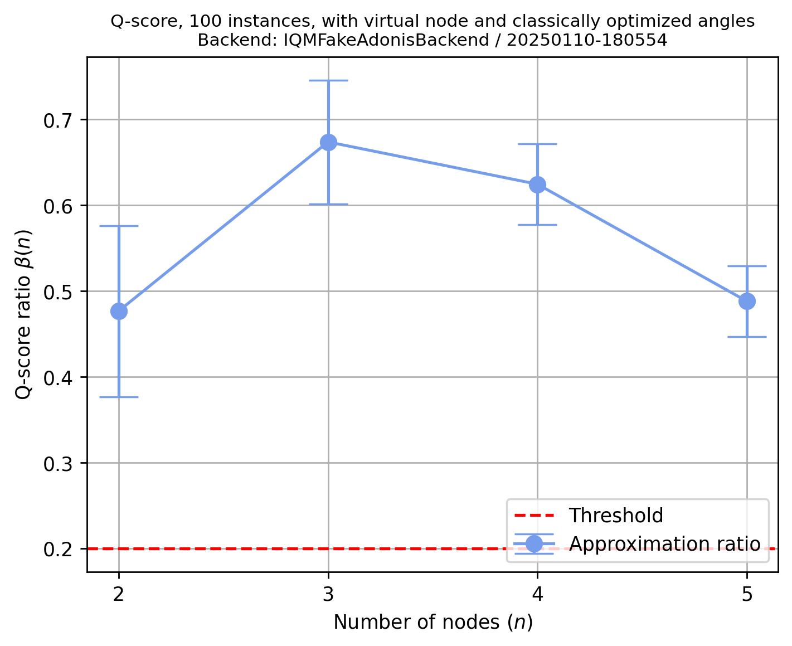